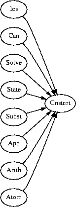

ICS Manual (Version 0.001)
The ICS group
Computer Science Laboratory, SRI International
333 Ravenswood Avenue, Menlo Park, CA 94025, USA
ruess@csl.sri.com
1 Introduction
ICS (Integrated Canonizer and Solver) is a
decision procedure developed at SRI International.
It efficiently decides formulas in a useful combination
of theories, and it provides an API that makes
it suitable for use in applications with highly dynamic
environments such as proof search or symbolic simulation.
The theory decided by ICS is a quantifier-free,
first-order theory of equality with terms built from
-
uninterpreted function symbols,
- arithmetic operators including inequalities and number predicates,
- propositional connectives,
- array lookup and update,
- sets operators, and
- operators on fixed-sized bitvectors.
This theory is particularly interesting for many applications in the realm
of software and hardware verification. Combinations of a multitude
of datatypes occur naturally in system specifications and the use of
uninterpreted function symbols has proven to be essential
for many real-world verifications.
The core of ICS is a congruence closure procedure [RS01]
for the theory of equality and disequality with both uninterpreted and
interpreted function symbols. The concepts of canonization and solving
have been extended to include inequalities over linear arithmetic
terms and propositional logic [FOR+01].
The theory currently includes:
-
The usual propositional constants true, false
and connectives
not, &, |, =>, <=>.
- Equality (=) and disequality (/=).
- Rational constants and the arithmetic
operators +, *, -;
multiplication is restricted to
multiplication by constants.
Arithmetic predicates include an integer test and
the usual inequalities <, <=, >, >=.
- Lookup a[x] and update a[x:=t]
operations for a functional array a.
- The constant sets (empty, full),
set membership (x in s),
and set operators, including
complement (compl(s)),
union (s1 union s2),
and intersection (s1 inter s2).
- Fixed-sized bitvectors including constants such as 0b101,
concatenation (conc[3,4](b1,b2)),
extraction (b[i:j]), bit-wise operations
like bit-wise conjunction (bv_and[n](b1,b2)),
and built-in arithmetic relations such as add[n](b1,b2,b).
This latter constraint encodes the fact that the sum of the unsigned
interpretations of b1 and b2 equals the unsigned
interpretation of b. Fixed-sized bitvectors are
decided using the techniques described in [MR98].
ICS is capable of deciding formulas such as
-
x+2 = y => f(a[x:=3][y-2]) = f(y-x+1)
- f(y-1)-1 = y+1 & f(x)+1 = x-1 & x+1 = y => false
- f(f(x)-f(y)) /= f(z) & y <= x & y >= x+z & z >= 0 => false
These formulas contain uninterpreted function symbols
such as f and interpreted symbols drawn from the theories of
arithmetic and the functional arrays. The list of
interpreted theories above is open-ended in the sense that new
theories can be added to ICS as long as they are canonizable and
algebraically solvable. The modular design of ICS---both the
underlying algorithms and their implementation---supports such
extensions.
One of the main problems in employing decision procedures
effectively is due to the fact that verification conditions
usually depend on large contexts. In addition, these
contexts change frequently in applications such as
symbolic simulation or backtracking proof search.
Consequently, decision procedure systems that
are effective in these domains must not only be able to
build up contexts incrementally but they must
also support efficiently switching between a multitude
of contexts. ICS meets these criteria in that all of its
main algorithm work incrementally and the data
structures for representing contexts are persistent,
that is, operations on data structures do not alter the
previous values of data and undo operations
are therefore basically for free.
ICS is implemented in Ocaml [Oca],
which offers satisfactory run-time performance,
efficient garbage collection, and interfaces well with other
languages like C. The implementation of ICS is based on optimization
techniques such as hash-consing [Fil00]
and efficient data structures like Patricia trees [OG98]
for representing sets and maps efficiently.
There is a well-defined API for manipulating ICS terms, asserting
formulas to the current database, switching between databases,
and functions for canonizing terms.
This API is packaged as a C library, an Ocaml module,
and a CommonLisp interface. The C library API, for example, has been
used to connect ICS with PVS [ORS92], and both an interaction and
a batch processing capability have been built using this API.
Using ICS as the underlying decision procedure of PVS, we
experience speed-ups of several orders of magnitude (compared
with the PVS default decision procedures) for selected problems.
and for typical problems we are usually able to process several
thousand theorems every second.
The efficiency and scalability of ICS in processing formulas,
the richness of its API, and its ability for fast context-switching
should make it possible to use it as a black box for discharging
verification conditions not only in a theorem proving context
but also in a multitude of applications like static analysis,
abstract interpretation, extended type checking,
symbolic simulation, model checking, or compiler
optimization.
1.1 Availability
ICS is available free of charge under the PVS license. It is
also included in the upcoming release of PVS 3.0.
The complete sources and documentation of ICS are
available at
There one can also find the ICS license.
2 Installation
Distribution.
The file ics.tar.gz can be downlowded from www.icansolve.com.
Unpack this file using
> zcat ics.tar.gz | tar xvf -
This creates a directory ./ics with the following files
and directory.
| Makefile.in |
: |
Template for generating Makefile. |
| bin/ |
: |
Binaries |
| configure |
: |
Configuration script |
| lib/ |
: |
Archives and shared object files |
| tests/ |
: |
Various benchmarks |
| README |
: |
Short installation guide |
| doc/ |
: |
Documentation |
| obj/ |
: |
Object files |
| src/ |
: |
Source files |
| ics/ |
: |
Shell script for invoking ICS interactor |
The latest version of ICS can be obtained by using the
CVS checkout command
> cvs co ics -d $CVS_root
where CVS_root is set to
/project/pvs2/cvsroot
Requirements.
ICS is written mainly in Ocaml, and it uses uses arbitrary
precision rational numbers from the GNU multi-precision library (GMP).
To compile ICS one needs to install:
So far, we have only compiled ICS on Linux Redhat 6.0,
but it should be possible to compile it on a wide range of
machines and operating systems.
Installation.
A configuration ./configure is generated from
./configure.in in the ICS home directory using
> autoconf ./configure.in
The configuration script generates a Makefile from the
Makefile.in.
> ./configure
Then, make compiles ICS on your machine.
> make
Binaries are placed in ./bin/$(ARCH)/ and
the libraries in ./lib/$(ARCH)/, where ARCH
is the architecture guessed by the configuration script.
The build directory is ./obj/$(ARCH)/, and the generated
binary and byte code are put in ./bin/$(ARCH)/.
2.1 Organization
This document describes the interfaces and implementation
aspects of the ICS decision procedures. It is organized as
follows.
| Chapter |
section |
page |
|
| |
| Installation |
2 |
?? |
| Interactor |
3 |
?? |
| API |
4 |
?? |
| Terms |
5 |
?? |
| Constraints |
6 |
?? |
| Substitution |
9 |
?? |
| Canonization |
?? |
?? |
| Solving |
?? |
?? |
| Processing |
11 |
?? |
| Basic Data Structures |
12 |
?? |
| Interpreted Theories |
7 |
?? |
| Binary Decision Diagrams |
8 |
?? |
| Tools and Support |
?? |
?? |
| |
The various modules of the implementation are not presented in
topological order with respect to their inter-dependencies, but
rather in a more logical order. However, it may help to have in mind
the graph of dependencies, which is the following:
=15cm
./dep.ps

3 The ICS interactor
The interactor permits to process formulas interactively and to explore
the database. We give an overview of the capabilities of ICS
using various little examples.
The interactor is started with ./ics in the ICS home directory.
% ics
ICS interpreter. Copyright (c) 2001 SRI International.
>
The `>' is the prompt and ICS is ready to interpret your commands.
Let us start by checking various tautologies:
> check ((p => q) => p) => p.
Valid.
> check (x <= y) => (x >= y) => x = y.
Valid.
> check f(f(x)) = x => f(f(f(f(x)))) = x.
Valid.
One can also use ICS in an incremental way, by adding statements into
its database. The command for that is assert.
> assert x = 0.
> assert f(x) = 1.
At any point, one can browse the current state with the
show command. This rhs of each equation is
the canonical representative of the equivalence class
containing the rhs.
> show.
f(0) |-> 1
x |-> 0
At some point, an assert command can fail because an
inconsistency is discovered:
> assert f(f(x) - 1) = 2.
Inconsistent!
In that case, nothing is added to the state.
One can reset the state to an empty state with the reset
command:
> reset.
When you enter complex propositions with assert, they are
stored in the state but their consistency is not always checked
immediately (unless trivial).
> assert a => (b & c).
Ok.
> assert ~b & a.
Ok.
Therefore, you can end up with an inconsistent state without
notification by ICS. That is perfectly normal, the assert
command being designed to be fast. But the check command is
complete, and hence you can always check the (in)consistency of the
state with the following command:
> check false.
Valid.
Similarly, you could have asserted only the first proposition and
checked the validity of the negation of the second one:
> assert a => (b & c).
Ok.
> check ~(~b & a).
Valid.
The ics program can also be used as an interpreter, in the
following way:
ics [-s] [-t] file
Option -s prints statistics when the program exits, and
option -t prints timings for each validity check.
Consider, for example, processing
f(y-1)-1 = y+1, f(x)+1 = x-1, and x+1 = y
from left-to-right using the interactive mode of ICS.
% ics
ICS interpreter. Copyright (c) 2001 SRI International.
Ctrl-d to exit.
> assert f(y - 1) - 1 = y + 1.
This equation is asserted in its solved form as
y = -2 + f(-1 + y). This equation is indeed considered
to be in solved form, since y on the right-hand side occurs
only in the scope of the uninterpreted f. Terms
in the database are partitioned
into equivalence classes, and the canonical representative of any
term t with respect to this partition is represented by can t;
for example:
> can -1 + y.
-3 + f(-1 + y)
It can be shown that can t1 is identical to can t2
iff the equality t1 = t2 is derivable in the current context.
Now, the second equation is processed
> assert f(x) + 1 = x - 1.
by canonizing it to 1 + f(x) = -1 + x and solving this
equation as x = 2 + f(x). Finally, can x + 1 yields
3 + f(x) and can y is -2 + f(-1 + y). Thus,
the third equation is solved as f(x) = -5 + f(-1 + y).
Since f(x) = f(-1 + y), using x = -1 + y and congruence,
there is a contradiction -5 = 0.
Indeed, ICS detects this inconsistency, when given the assertion
below.
> assert x + 1 = y.
Inconsistent!
3.1 The Command Language
The ICS command language realizes a ask/tell interface to
a context consisting of known facts. When invoking
the interactor, this context is empty.
Asserting facts.
assert proposition.
A new fact proposition is asserted to the database using the
assert command. There are three possible outcomes:
-
proposition is inconsistent with respect to the current context.
In this case, assert leaves the current context
unchanged and outputs Inconsistent! on the standard
output.
- proposition is valid in the current context. Again,the
the current context is left, and now Valid!
is output.
- Otherwise, in case proposition is satisfiable but not valid,
the context is modified to include new information obtained
from proposition.
Checking validity.
check proposition.
The validity and inconsistenty of a proposition proposition in the current
context can be established using the check command. This
command leaves the context unchanged.
Resetting.
reset .
Resets the current context to the empty context.
Canonization.
canon term.
Computes the canonical form for its argument term with respect
to the current context.
Displaying the context.
show .
Displays the current context on standard output as a list of
equations rhs = lhs. The lhs
is the representative of the equivalence class containing rhs.
Verbose.
verbose int .
Determines the amount of trace information displayed on standard output.
Currently, the verbose levels 0, 1, and 2 are supported.
4 Application Programming Interface
Usually, the capabilites of ICS are not accessed through the interactor
but rather through its application programming interface. Currently,
we support interfaces for C, Fortran, Lisp, and Ocaml. We
first describe the Ocaml interface, since the interfaces for the
other programming languages are automatically generated from this one.
4.1 Caml interface
Interface for module Ics.mli
1.
The type q of multi-precision rational numbers. num_of_int n
injects an integer into this type, num_of_ints n m, for m ¹ 0,
constructs a normalized representation of the rational n/m in q,
string_of_num q constructs a string (usually for printout) of a
rational number, and num_of_string s constructs a rational, whenever
s is of the form "n/m" where n and m are naturals.
type q
val num_of_int : int ® q
val num_of_ints : int ® int ® q
val string_of_num : q ® string
val num_of_string : string ® q
2.
Terms. This is the main syntactic category of ICS. Terms are either
variables, uninterpreted function application, or interpreted
constants and operators drawn from a combination of theories.
Currently, ICS supports linear arithmetic, both rational and integer,
tuples, function (array update) update, sets, and bitvectors.
Terms are build using constructors, whose names are all of the form mk_xxx.
For each constructor mk_xxx there is a corresponding recognizer is_xxx
which reduces to true if its argument term has been built
with the constructor mk_xxx. Moreover, for each constructor
mk_xxx} above there is a corresponding desctructor d_xxx$
for analyzing the components of such a constructor term.
type term
3.
Variables of name x are build with mk_var(x).
The constructor mk_fresh(x) explicitly creates a
fresh variable, by adding an new integer to the string
argument in order to create a fresh name. is_var a tests if
its argument is a variable. For all terms for which is_var a
is true, the name of a can be obtained using the destructor d_var;
the behavior of applying d_var to all other terms is undefined.
val mk_var : string ® term
val mk_fresh : string ® term
val is_var : term ® bool
val d_var : term ® string
4.
Function applications are created using the mk_app~f~l
constructor. In general, the name of the function f is
specified by an arbitrary term and not only by a function
symbol. Function update update~f~x~a specifices the
update of function f at position x with value a.
val mk_app : term ® term list ® term
val mk_update : term ® term ® term ® term
val is_app : term ® bool
val is_update : term ® bool
val d_app : term ® term × term list
val d_update : term ® term × term × term
5.
Arithmetic terms include rational constants built from
mk_num q; in addition, linear arithmetic terms are built
using binary and n-ary versions for addition and
multiplication, unary negation mk_unary_minus, and a
binary subtraction constructor mk_minus. Internally, mk_times
and mk_times2 build up different data structures for linear
multiplication, i.e. multiplication by a constant number, and
nonlinear multiplication. is_multq is successful only if its
argument is indeed a linear multiplication, and is_mult yields
true only if the actual argument is indeed nonlinear.
val mk_num : q ® term
val mk_div : term ® term ® term
val mk_plus : term list ® term
val mk_plus2 : term ® term ® term
val mk_minus : term ® term ® term
val mk_unary_minus : term ® term
val mk_times : term list ® term
val mk_times2 : term ® term ® term
val is_num : term ® bool
val is_multq : term ® bool
val is_add : term ® bool
val is_mult : term ® bool
val d_num : term ® q
val d_add : term ® term list
val d_mult : term ® term list
val d_multq : term ® q × term
6.
Tuples are built using the mk_tuple constructor, and
projection of the i-th component of a tuple t of
length n is realized using mk_proj i n t;
is_tuple a and is_proj a are the respective recognizers,
while d_tuple returns the tuple entries as a list, and
d_proj returns the triple (i,n,a) for a projection
constructed with mk_proj i n a.
val mk_tuple : term list ® term
val mk_proj : int ® int ® term ® term
val is_tuple : term ® bool
val is_proj : term ® bool
val d_tuple : term ® term list
val d_proj : term ® int × int × term
7.
Terms representing the usual propositional constants and
connectives are built from the following constructors.
Boolean terms are either built using mk_true, mk_false,
or mk_ite. These constructors build ordered binary decision
diagrams (OBDDs), where the conditional is neither a
propositional constant nor a conditional. The ordering
on these conditionals is given by term_cmp. In addition,
mk_ite carries out a number of simplifications.
Other constructors such as mk_and can be thought of
as being derived. For example, mk_and a b reduces to
mk_ite a b (mk_false). Consequently, exactly one of the
recognizers is_true, is_false, or is_ite holds of
any boolean term. Recognizers such as is_and yield
true if the argument is a conditional with its third
argument being the false constant. Destructors such as
d_and are only defined on arguments satisfying the
corresponding recognizer is_and.
val mk_true : unit ® term
val mk_false : unit ® term
val mk_ite : term ® term ® term ® term
val mk_not : term ® term
val mk_and : term ® term ® term
val mk_or : term ® term ® term
val mk_xor : term ® term ® term
val mk_imp : term ® term ® term
val mk_iff : term ® term ® term
val is_true : term ® bool
val is_false : term ® bool
val is_ite : term ® bool
val is_not : term ® bool
val is_and : term ® bool
val is_or : term ® bool
val is_xor : term ® bool
val is_imp : term ® bool
val is_iff : term ® bool
val d_ite : term ® term × term × term
val d_not : term ® term
val d_and : term ® term × term
val d_or : term ® term × term
val d_xor : term ® term × term
val d_imp : term ® term × term
val d_iff : term ® term × term
8.
Equality and disequality. mk_equal a b constructs equalites,
whereas mk_diseq a b yields a disequality of the form
mk_not(mk_equal a b).
val mk_equal : term ® term ® term
val is_equal : term ® bool
val d_equal : term ® term × term
val mk_diseq : term ® term ® term
9.
Constructors for unary arithmetic predicates.
mk_int t restricts the domain of interpretations of term
t to the integers. Similarly, mk_real restricts its
argument to the real numbers, mk_pos restricts its
argument to the positive real numbers, mk_neg restricts
its argument to the negative real numbers, mk_nonneg
restricts its argument to the nonnegative real numbers, and
mk_nonpos restricts its argument to the nonpositive real
numbers. Membership test mk_in a b is equivalent
to mk_app b a, mk_notin a b is equivalent to mk_not(mk_in a b),
and the remaining constructors such as mk_int a can be viewed as
abbreviations for mk_in (cnstrnt_int) a, where cnstrnt_int represents
the set of integers (see below).
val mk_in : term ® term ® term
val mk_notin: term ® term ® term
val mk_int : term ® term
val mk_real : term ® term
val mk_lt : term ® term ® term
val mk_le : term ® term ® term
val mk_gt : term ® term ® term
val mk_ge : term ® term ® term
10.
A fixed-sized bitvector constant of width 5 such as 010012 is
constructed by mk_bv_const "01001". These constructor
can also be used to emulate the mk_bv_eps,
mk_bv_one, and mk_bv_zero functions for
constructing the empty bitvector, bitvectors with only ones, and
bitvectors with only zeros, respectively. A bitvector b1 of length n is
concatenated with a bitvector b2 of length m by mk_bv_conc (n,b1) (m,b2).
Furthermore, given a bitvector b of n, the extraction of the bits i
through j is denoted by mk_bv_extr (n,b) i j. Hereby, the left-most
position of a bitvector of width n is addressed by 0 and the right-most bit
by n-1. The constructors mk_bv_and n, mk_bv_or n, and mk_bv_xor n
are the bitwise logical operations of bitvectors of width n.
val mk_bv_eps : unit ® term
val mk_bv_zero : int ® term
val mk_bv_one : int ® term
val mk_bv_const: string ® term
val mk_bv_conc : int × term ® int × term ® term
val mk_bv_extr : int × term ® int ® int ® term
val mk_bv_neg : int ® term ® term
val mk_bv_and : int ® term ® term ® term
val mk_bv_or : int ® term ® term ® term
val mk_bv_xor : int ® term ® term ® term
val width_of : term ® int option
val is_bv_const : term ® bool
val is_bv_zero : term ® bool
val is_bv_one : term ® bool
val is_bv_conc : term ® bool
val is_bv_extr : term ® bool
val is_bv_ite : term ® bool
val d_bv_const : term ® Bitv.t
val d_bv_conc : term ® (int × term) list
val d_bv_extr : term ® (int × term) × int × int
val d_bv_ite : term ® int × term × term × term
11.
Set of terms.
type terms
val terms_empty : unit ® terms
val terms_add : term ® terms ® terms
val terms_pp : terms ® unit
val terms_mem : term ® terms ® bool
val terms_sub : terms ® terms ® bool
val terms_is_empty : terms ® bool
val terms_to_list : terms ® term list
val terms_choose : terms ® term × terms
12.
Constructors for the <, £, >, ³ constructors,
respectively.
type cnstrnt
val cnstrnt_app : cnstrnt ® term ® term
val cnstrnt_pp : cnstrnt ® unit
13.
low_bound is the type of lower bounds in intervals and they are
either negative infinity, or a rational number together with a strictness attribute.
The recognizers low_bound_is_strict
and low_bound_is_nonstrict are only defined when low_bound_is_neginf does
not hold. In these cases, one can access the lower bound using low_bound_value .
type low_bound
val low_bound_neginf : unit ® low_bound
val low_bound_strict : q ® low_bound
val low_bound_nonstrict : q ® low_bound
val low_bound_is_neginf : low_bound ® bool
val low_bound_is_strict : low_bound ® bool
val low_bound_is_nonstrict : low_bound ® bool
val low_bound_value : low_bound ® q
14.
high_bound is the type of upper bounds in intervals and they are
either positive infinity, or a rational number together with a strictness attribute.
The recognizers high_bound_is_strict
and high_bound_is_nonstrict are only defined when high_bound_is_posinf does
not hold. In these cases, one can access the lower bound using high_bound_value .
type high_bound
val high_bound_posinf : unit ® high_bound
val high_bound_strict : q ® high_bound
val high_bound_nonstrict : q ® high_bound
val high_bound_is_posinf : high_bound ® bool
val high_bound_is_strict : high_bound ® bool
val high_bound_is_nonstrict : high_bound ® bool
val high_bound_value : high_bound ® q
15.
Intervals are interpreted either over the reals, the integers, or the reals without
the integers.
type interval_domain
val interval_domain_int: unit ® interval_domain
val interval_domain_real: unit ® interval_domain
val interval_domain_nonintreal: unit ® interval_domain
val interval_domain_is_real : interval_domain ® bool
val interval_domain_is_int : interval_domain ® bool
val interval_domain_is_nonintreal : interval_domain ® bool
16.
Listify constraints as the disjunction of singleton constraints.
type interval
val cnstrnt_to_list : cnstrnt ® interval list
val cnstrnt_of_list : interval list ® cnstrnt
17.
Constraint constructors.
val cnstrnt_lt : interval_domain ® q ® cnstrnt
val cnstrnt_le : interval_domain ® q ® cnstrnt
val cnstrnt_ge : interval_domain ® q ® cnstrnt
val cnstrnt_gt : interval_domain ® q ® cnstrnt
val cnstrnt_domain : interval_domain ® cnstrnt
val cnstrnt_int : cnstrnt
val cnstrnt_real : cnstrnt
val cnstrnt_openopen : interval_domain ® q ® q ® cnstrnt
val cnstrnt_openclosed : interval_domain ® q ® q ® cnstrnt
val cnstrnt_closedopen : interval_domain ® q ® q ® cnstrnt
val cnstrnt_closedclosed : interval_domain ® q ® q ® cnstrnt
18.
Sets are build from the empty set mk_empty and the
full set mk_full, and the usual set operators. Actually,
each set constructor name determines a family of
constructors with a tag index of type int for determining
the ``type'' of its element.
val mk_empty : int ® term
val mk_full : int ® term
val mk_finite : terms ® term
val mk_cnstrnt : cnstrnt ® term
val mk_setite : term ® term ® term ® term
val mk_compl : int ® term ® term
val mk_inter : int ® term ® term ® term
val mk_union : int ® term ® term ® term
val mk_diff : int ® term ® term ® term
val mk_sym_diff : int ® term ® term ® term
val mk_sub : int ® term ® term ® term
val mk_seteq : int ® term ® term ® term
val is_empty : term ® bool
val is_full : term ® bool
val is_setite : term ® bool
val is_compl : term ® bool
val is_union : term ® bool
val is_inter : term ® bool
val d_setite : term ® int × term
val d_compl : term ® int × term
val d_inter : term ® int × term × term
val d_union : term ® int × term × term
19.
Maps with terms as domain.
type a map
val map_empty : unit ® a map
val map_add : term ® a ® a map ® a map
val map_is_empty : a map ® bool
val map_find : term ® a map ® a
val map_remove : term ® a map ® a map
val map_mem : term ® a map ® bool
val map_to_list : a map ® (term × a) list
val map_pp : (a ® unit) ® a map ® unit
20.
Substititon.
type subst
val subst_empty : unit ® subst
val subst_add : term ® term ® subst ® subst
val subst_mem : subst ® term ® bool
val subst_find : subst ® term ® term
val subst_apply : subst ® term ® term
val subst_of_list : (term × term) list ® subst
val subst_to_list : subst ® (term × term) list
val subst_pp : subst ® unit
val subst_norm : subst ® term ® term
21.
Integer tag for each term, which is unique for each session.
val tag : term ® int
22.
Equality and Comparison.
Both the equality test eq and comparison cmp on terms
works in constant time. Comparison cmp a b returns either
-1, 0, or 1 depending on whether a is less than b,
the arguments are equal, or a is greater than b.
Notice that the comparison function cmp is session-dependent,
since it uses the order of memory addresses as the underlying order.
val term_eq : term ® term ® bool
val term_cmp : term ® term ® int
val term_pp : term ® unit
val eqn_pp : term × term ® unit
23.
States. A state or context can be thought of a function with
terms as both domain and codomain. Such a context determines
canonical representatives for terms. Contexts are represented
by the abstract data type state. An empty context
is built using the init operator. The canonical
representative of a term in a given context is determined by
find. pp_find prints the finite, non-identical part of the context
on standard output. state_eq tests if two states are identical.
type state = State.t
val state_eq : state ® state ® bool
val init : unit ® state
val find : state ® term ® term
val ext : state ® term ® term list
val use : state ® term ® term list
val uninterp : state ® term ® term list
val ctxt_of : state ® (term × term) list
val find_of : state ® subst
val ext_of : state ® terms map
val cnstrnt_of : state ® cnstrnt map
val use_of : state ® terms map
val state_pp : state ® unit
24.
The operation process adds a new proposition to a state.
The codomain of this function is of type status, elements of
which represent the three possible outcomes of processing a
proposition: 1. the argument is inconsistent in the
current context, 2. it is valid, or, 3., it is satisfiable but
not valid. In the third case, a modified state is obtained using
the destructor d_consistent.
type status =
| Valid
| Inconsistent
| Consistent of State.t
val is_consistent : status ® bool
val is_redundant : status ® bool
val is_inconsistent : status ® bool
val d_consistent : status ® state
val process : state ® term ® status
25.
In addition, a given state may be used to check for the validity
or the unsatisfiability of a given proposition.
val is_valid : state ® term ® bool
val is_unsat : state ® term ® bool
26.
Simplifications.
norm realizes encodes simplification by normalizing
interpreted function applications according to their interpretation,
and by replacing toplevel uninterpreted function symbols by their
representatives with respect to the argument state.
canon normalizes terms inside-out. A predicate t reduces
to true if and only if it is valid in the argument state.
simplify is weaker than canon in that it does not
compute a canonical form, since, in contrast to canon, it
does not process conditionals in a complete way. Consequently, it
is both more efficient than canon and the simplified term
is guaranteed not to contain any new constant symbols.
val norm : state ® term ® term
val can : state ® term ® term
val simplify : state ® term ® term
val solve : term option ® state ® term × term ® subst
val cnstrnt : state ® term ® cnstrnt
27.
Controls.
reset clears all the global tables. This
does not only include the current context, but also
internal tables used for hash-consing and memoization purposes.
gc triggers a full major collection of ocaml's garbage collector.
Finally, set_verbose controls the amount of trace messages.
The default is 0, which means that nothing is printed at all.
The higher the value, the more numerous the messages are.
val reset : unit ® unit
val gc : unit ® unit
val set_verbose : int ® unit
val flush : unit ® unit
28.
Lists.
val is_nil : a list ® bool
val cons : a ® a list ® a list
val head : a list ® a
val tail : a list ® a list
val list_pp : (a ® unit) ® (a list ® unit)
Pairs.
val pair : a ® b ® a × b
val fst : a × b ® a
val snd : a × b ® b
29.
Imperative API. All the functions presented up to that point were
purely functional and all the data-types were persistent. In the
following, we also provide an imperative API,
for use in an imperative context of type istate.
There is a new data-type for states, iinit, which is updated in-place.
The function current returns the value of type state contained
in a given imperative state, so that all the previous functions
(canon, is_valid, etc.) can be reused on an imperative state.
The function call iprocess s a processes an atom a in a given
imperative state s, returning a value v of type v.
If the result is a new consistent state, then s is updated
in-place, and the state contained in v can be discarded (it is now
equal to current s. The imperative states are equipped with an
internal notion of stack, handled using the push and
pop functions.
type istate
val iinit : unit ® istate
val current : istate ® state
val push : istate ® unit
val pop : istate ® unit
val iprocess : istate ® term ® status
4.2 C Interface
The API for the C programming language is generated automatically
from the Ocaml API described above. The C file can be found in
./obj/$ARCH/ics_stub.c
This file contains a C function declaration ics_xxx for each of the interface
function xxx described above. For example, the definition of
the function ics_mk_var for the mk_var constructor is
given by the following C code.
value* ics_mk_var(char* x1) {
value* ics_mk_var(char* x1) {
value* r = malloc(sizeof(value));
register_global_root(r);
*r = 1;
*r = callback_exn(*ics_mk_var_rv,copy_string(x1));
if (!Is_exception_result(*r)) { return r; };
ocaml_error("ics_mk_var",format_caml_exception(Extract_exception(*r)));
return (value*)0;
}
These interface function translate C arguments to Ocaml values, call the
Ocaml function, and translate back the results. In addition, any Ocaml
exceptions are caught and handled by the ocaml_error function.
Curried signatures of the Ocaml functions are uncurried, and list and
tuple arguments must be build using the constructors of the interface.
The handling of exceptions is determined by the function
ocaml_error, defined in ./src/ics_error.c; this
function may have to be adjusted for application-specific error handling.
4.3 Lisp Interface
The Lisp API for ICS builds on the C interface and uses the foreign
function interface of Allegro Common Lisp 6.0. For each function
xxx in the API a foreign function declaration ics_xxx
is generated. These definitions are collected in the file
./obj/$ARCH/ics.lisp
The Lisp interface ensures that the Lisp and the Ocaml garbage collector
cooperate.
5 Term structure
5.1 Term data structure
Interface for module Term.mli
30.
Terms are the basic data structures of ICS.
31.
Terms. A term is either a variable Var(s), where the name s is a string, an
application App(f,l) of a `function symbol' to a list of arguments, an update
expression Update(a,i,v), or a term interpreted in one of the theories of linear
arithmetic Arith, propositional logic, Prop, propositional sets Set, tuples
Tuple, or bitvectors Bv. By definition, all entitities of type t are hash-consed.
Therefore, equality tests between terms can be done in constant time using the equality
=== from the module Hashcons.
type variable = string
type tag = int
type t = tnode hashed
and tnode =
| Var of variable
| App of t × t list
| Update of t × t × t
| Cond of t × t × t
| Arith of arith
| Tuple of tuple
| Bool of prop
| Set of set
| Bv of bv
32.
Arithmetic terms are either numerals of the form Num(q), n-ary addition Add(l),
linear multiplication Multq(q,a), nonlinear multiplication Mult(l), or division.
Arithmetic terms built up solely from Num, Add, and Multq are considered to
be interpreted, since Mult and Div are considered to be uninterpreted, in general.
However, certain simplification rules for these uninterpreted function symbols are
built-in.
and arith =
| Num of Mpa.Q.t
| Add of t list
| Multq of Mpa.Q.t × t
| Mult of t list
| Div of t × t
33.
Propositional terms are either False, True, or conditionals Ite(a,b,c).
Other propositional connectives can be encoded using these constructors. Constructors
for universal and existential are included to allow for extensions dealing with
first-order extensions. However, the core algorithms of ICS do not support
first-order quantification.
and prop =
| True
| False
| Equal of t × t
| Ite of t × t × t
| Forall of variable list × t
| Exists of variable list × t
34.
Propositional sets are build from the empty set Empty, the full set
Full, the finite set constructor Finite s, denoting the extension of
the set of terms s, the constraint set Cnstrnt(c), which denotes
all terms satisfying the constraint c, and the set connective SetIte(a,b,c),
which can be thought of (a inter b) union ((compl a) inter b), where
inter denotes intersection of two sets, union denotes set union, and compl
set complementation. Set constructors are parameterized by a tag in order
to distinguish between, for example, between sets of various types.
and set =
| Empty of tag
| Full of tag
| Finite of terms
| Cnstrnt of Interval.t
| SetIte of tag × t × t × t
35.
A tuple term is either a tuple Tup(l) or the i-th projection Proj(i,n,_)
from an n-tuple.
and tuple =
| Tup of t list
| Proj of int × int × t
36.
A fixed-sized bitvector consists of pair (n,a), where a is a term and
n is the length of a. The bits of a bitvectors of length n are addressed
by 0 through n-1 from left-to-right. Bitvector terms are either constants
Const(b), concatentations Conc(l) of fixed-sized bitvectors, extractions
Extr(a,i,j) of the i-th through the j-th bit from a, or bitwise operations
constructed using the bitwise conditional BvIte(a,b,c). In addition, BvToNat(a)
represents the function for computing the unsigned interpretation of bitvectors.
and bv =
| Const of Bitv.t
| Conc of fixed list
| Extr of fixed × int × int
| BvIte of fixed × fixed × fixed
| BvToNat of t
and fixed = int × t
37.
Set of terms are implemented using Patricia trees. Operations
on these sets are described below in the submodule Set.
and terms = tnode Ptset.t
38.
A term equation a = b is just represented by a pair (a,b).
type eqn = t × t
39.
The injection hc hash-conses term nodes. Thus, terms a and b
are considered to be equal iff they are identical. In addition to
syntactical equality, sets Finite(s1) and Finite(s2) are also
considered to be equal whenever s1 and s2 contain the same elements.
val hc : tnode ® t
40.
Fast comparison is done in constant time, but is session-dependent,
since it uses physical addresses. In constrast, cmp is session-independent
but requires linear time.
val fast_cmp : t ® t ® int
val cmp : t ® t ® int
41.
The terms Bool(True), Bool(False), Arith(Num(q)), for a rational q,
Set(Full(_)), Set(Empty(_)), Bv(Const(_)) are considered to be constant terms.
They are all having different interpretations.
val is_const : t ® bool
42.
Variables Var(s), uninterpreted function application App _, function update Update _,
nonlinear multiplication Arith(Mult _), division Arith(Div _), the unsigned interpretation
Bv(BvToNat _), and the set constructors Set(Finite _), and Set(Cnstrnt _) are
considered to be uninterpreted, and all other terms are interpreted.
val is_uninterpreted : t ® bool
43.
occurs_interpreted a b tests if term a occurs interpreted in b; in
particular, this test fails if a is a subterm of an uninterpreted term.
val occurs_interpreted : t ® t ® bool
44.
is_ground a holds for all terms which do not contain
a variable term Var(s) or a function application App(f,l).
val is_ground : t ® bool
45.
cache n f memoizes a function f which takes terms as arguments using
an initial hashtable of size n. Similarly, cache2 caches functions
with t × t as domain, and cachel caches functions with a list of terms
as domains.
val cache : int ® (t ® a) ® (t ® a)
val cache2 : int ® (t×t ® a) ® (t×t ® a)
val cachel : int ® (t list ® a) ® (t list ® a)
46.
Set of terms.
type term = t
module Set : sig
(*s The empty set. *)
val empty : terms
47.
mem a s tests whether a belongs to the set s.
val mem : t ® terms ® bool
48.
add a s returns a set containing all elements of s,
plus a. If a was already in s, s is returned unchanged.
val add : t ® terms ® terms
49.
singleton a returns the one-element set containing only a.
val singleton: t ® terms
50.
sub s1 s2 tests whether the set s1 is a subset of the set s2.
val sub : terms ® terms ® bool
51.
Test whether a set is empty or not.
val is_empty : terms ® bool
52.
remove a s returns a set containing all elements of s,
except a. If a was not in s, s is returned unchanged.
val remove : t ® terms ® terms
Union and intersection.
val union : terms ® terms ® terms
val inter : terms ® terms ® terms
iter f s applies f in turn to all elements of s.
The order in which the elements of s are presented to f
is unspecified.
val iter : (t ® unit) ® terms ® unit
val iter2 : (t ® t ® unit) ® terms ® unit
53.
fold f s a computes (f xN ... (f x2 (f x1 a))...),
where x1 ... xN are the elements of s.
The order in which elements of s are presented to f is
unspecified.
val fold : (t ® a ® a) ® terms ® a ® a
54.
map f s constructs a set consisting of all terms f(a) for a in s.
val map : (t ® t) ® terms ® terms
55.
exists p s checks if at least one element of the set satisfies the predicate p.
val exists : (t ® bool) ® terms ® bool
56.
for_all p s checks if all elements of the set satisfy the predicate p.
val for_all : (t ® bool) ® terms ® bool
filter p s returns the set of all elements in s that satisfy predicate p.
val filter : (t ® bool) ® terms ® terms
57.
to_list s enumerate the elements of s in a list. The order of the elements
in this list is unspecified.
val to_list : terms ® term list
58.
Return one element of the given set, or raise exception Not_found if
the set is empty. Which element is chosen is unspecified,
but equal elements will be chosen for equal sets.
val choose : (term ® bool) ® terms ® term
(*s destructure s returns an element term a of a nonempty set s of terms
together with the set in which a is removed from s. The exception Not_found
is reaised if the argument set is empty. *)
val destructure : terms ® term × terms
end
59.
Finite maps with terms as domain.
module Map : sig
type a t
60.
The empty map.
val empty : a t
61.
Check whether the argument map is undefined everywhere.
val is_empty : a t ® bool
62.
add x y m returns a map containing the same bindings as
m, plus a binding of x to y. If x was already bound
in m, its previous binding disappears.
val add : term ® a ® a t ® a t
63.
find x m returns the current binding of x in m,
or raises Not_found if no such binding exists.
val find : term ® a t ® a
64.
remove x m returns a map containing the same bindings as
m, except for x which is unbound in the returned map.
val remove : term ® a t ® a t
65.
mem x m returns true if m contains a binding for m,
and false otherwise.
val mem : term ® a t ® bool
66.
iter f m applies f to all bindings in map m.
f receives the key as first argument, and the associated value
as second argument. The order in which the bindings are passed to
f is unspecified. Only current bindings are presented to f:
bindings hidden by more recent bindings are not passed to f.
val iter : (term ® a ® unit) ® a t ® unit
67.
map f m returns a map with same domain as m, where the
associated value a of all bindings of m has been
replaced by the result of the application of f to a.
The order in which the associated values are passed to f
is unspecified.
val map : (a ® b) ® a t ® b t
68.
fold f m a computes (f kN dN ... (f k1 d1 a)...),
where k1 ... kN are the keys of all bindings in m,
and d1 ... dN are the associated data.
The order in which the bindings are presented to f is
unspecified.
val fold : (term ® a ® b ® b) ® a t ® b ® b
69.
choose p m chooses an association (x,y) in m
such that p x y holds. If the domain of m is empty,
the exception Not_found is raised.
val choose : (term ® term ® bool) ® term t ® term × term
70.
to_list m enumerates the associations (x,y) for all x
in the domain of m such that y equals find x m. The
order of bindings in the result is undefined.
val to_list : a t ® (term × a) list
end
71.
Some constructors and recognizers for constants.
val tt : unit ® t
val ff : unit ® t
val is_tt : t ® bool
val is_ff : t ® bool
72.
Constructing conditional terms.
val ite : t ® t ® t ® t
73.
Fold operator on terms.
val fold : (t ® a ® a) ® t ® a ® a
74.
Iteration operator on terms.
val iter : (t ® unit) ® t ® unit
75.
Mapping over list of terms. Avoids unnecessary consing.
val mapl : (t ® t) ® t list ® t list
76.
Homomorphism hom a op f (b1,b2,...) on terms. f is applied to arguments bi,
if bi equals f(bi) for all i, then the original term a
is returned, otherwise a new term is constructed using op.
val hom1 : t ® (t ® t) ® (t ® t) ® t ® t
val hom2 : t ® (t × t ® t) ® (t ® t) ® t × t ® t
val hom3 : t ® (t × t × t ® t) ® (t ® t) ® t × t × t ® t
val homl : t ® (t list ® t) ® (t ® t) ® t list ® t
val homs : t ® (terms ® t) ® (t ® t) ® terms ® t
Module Term.ml
77.
Constraints.
type cnstrnt = Interval.t
78.
Implementation of terms and functions over terms.
type variable = string
type tag = int
type t = tnode hashed
and tnode =
| Var of variable
| App of t × t list
| Update of t × t × t
| Cond of t × t × t
| Arith of arith
| Tuple of tuple
| Bool of prop
| Set of set
| Bv of bv
and arith =
| Num of Q.t
| Add of t list
| Multq of Q.t × t
| Mult of t list
| Div of t × t
and prop =
| True
| False
| Equal of t × t
| Ite of t × t × t
| Forall of variable list × t
| Exists of variable list × t
and set =
| Empty of tag
| Full of tag
| Finite of terms
| Cnstrnt of cnstrnt
| SetIte of tag × t × t × t
and tuple =
| Tup of t list
| Proj of int × int × t
and bv =
| Const of Bitv.t
| Conc of fixed list
| Extr of fixed × int × int
| BvIte of fixed × fixed × fixed
| BvToNat of t
and fixed = int × t
and terms = tnode Ptset.t
type term = t
type eqn = t × t
79.
Equality on list of terms.
let eql l1 l2 =
try
List.for_all2 (===) l1 l2
with
Invalid_argument _ ® false
80.
Mapping over list of terms. Avoids unnecessary consing.
let rec mapl f l =
match l with
| [ ] ® [ ]
| a :: l1 ®
let a' = f a and l1' = mapl f l1 in
if a' === a & l1 º l1' then l else a' :: l1'
81.
Hash-consing. In order to save space and to provide an efficient
comparison of terms, we choose to perform full hash-consing over terms.
It means that whenever x is structurally equal to y (x=y)
then it will be actually physically equal to y (xºy).
Hash-consing is realized using hash-tables, where an already existing
and equal object is looked for each time we try to create a new object i.e.
each time we apply a constructor.
We use our own version of hash tables, which provides a stat function
to look at the distribution of values inside a given table.
82.
Hash-consing of terms.
module HashTerm = Hashcons.Make(
struct
type t = tnode
let equal t1 t2 =
match t1, t2 with
| Var(x1), Var(x2) ®
x1 º x2
| App(s1,l1), App(s2,l2) ®
s1 === s2 & eql l1 l2
| Update(s1,t1,u1), Update(s2,t2,u2) ®
s1 === s2 & t1 === t2 & u1 === u2
| Cond(s1,t1,u1), Cond(s2,t2,u2) ®
s1 === s2 & t1 === t2 & u1 === u2
| Arith a1, Arith a2 ®
(match a1, a2 with
| Num(q1), Num(q2) ®
Q.equal q1 q2
| Multq(q1,x1), Multq(q2,x2) ®
Q.equal q1 q2 & x1 === x2
| Add l1, Add l2 ®
eql l1 l2
| Mult l1, Mult l2 ®
eql l1 l2
| Div(s1,t1), Div(s2,t2) ®
s1 === s2 & t1 === t2
| _ ® false)
| Tuple t1, Tuple t2 ®
(match t1,t2 with
| Tup l1, Tup l2 ®
eql l1 l2
| Proj (i1,n1,t1), Proj (i2,n2,t2) ®
i1 = i2 & n1 = n2 & t1 === t2
| _ ® false)
| Set t1, Set t2 ®
(match (t1,t2) with
| SetIte (t1,a1,b1,c1), SetIte (t2,a2,b2,c2) ®
a1 === a2 & b1 === b2 & c1 === c2 & t1 = t2
| Empty t1, Empty t2 ®
t1 = t2
| Full t1, Full t2 ®
t1 = t2
| Cnstrnt (c1), Cnstrnt (c2) ®
Interval.eq c1 c2
| Finite s1, Finite s2 ®
Ptset.equal s1 s2
| _ ® false)
| Bool t1, Bool t2 ®
(match t1,t2 with
| True, True ® true
| False, False ® true
| Equal (s1, t1), Equal (s2,t2) ®
s1 === s2 & t1 === t2
| Ite (a1,b1,c1), Ite (a2,b2,c2) ®
a1 === a2 & b1 === b2 & c1 === c2
| Forall (xl,p), Forall (yl,q) ®
p === q & (try List.for_all2 (º) xl yl with Invalid_argument _ ® false)
| Exists (xl,p), Exists (yl,q) ®
p === q & (try List.for_all2 (º) xl yl with Invalid_argument _ ® false)
| _ ® false)
| Bv t1, Bv t2 ®
(match t1,t2 with
| Const c, Const d ®
compare c d = 0
| Extr((_,b1),l1,u1), Extr((_,b2),l2,u2) ®
b1 === b2 & l1 = l2 & u1 = u2
| BvToNat(s1), BvToNat(s2) ®
s1 === s2
| Conc l1, Conc l2 ®
(try
List.for_all2 (fun (_,b1) (_,b2) ® b1 === b2) l1 l2
with
Invalid_argument _ ® false)
| BvIte((_,u1),(_,v1),(_,w1)), BvIte((_,u2),(_,v2),(_,w2)) ®
u1 === u2 & v1 === v2 & w1 === w2
| _ ® false)
| _ ® false
let hash = function
| App (s,l) ®
s.tag + (List.fold_left (fun h a ® h + a.tag) 1 l) land 3FFFFFFF16
| Update(x,y,z) ®
(x.tag + y.tag + z.tag) land 3FFFFFFF16
| Cond(x,y,z) ®
(x.tag + y.tag + z.tag + 2) land 3FFFFFFF16
| Arith a ®
(match a with
| Num q ® Q.hash q
| Multq(q,x) ® (Q.hash q + x.tag) land 3FFFFFFF16
| Mult l ®
(List.fold_left (fun h a ® h + a.tag) 1 l) land 3FFFFFFF16
| Add l ®
(List.fold_left (fun h a ® h + a.tag) 1 l) land 3FFFFFFF16
| Div(x,y) ® (x.tag + y.tag) land 3FFFFFFF16)
| Bool p ®
(match p with
| Equal(x,y) ® (x.tag + y.tag) land 3FFFFFFF16
| Ite (a,b,c) ® (31 + a.hkey + b.hkey + c.hkey) land 3FFFFFFF16
| _ ® Hashtbl.hash p)
| Set s ®
(match s with
| (Empty _) as t ® Hashtbl.hash t
| (Full _) as t ® Hashtbl.hash t
| Finite s ® Hashtbl.hash s
| Cnstrnt c ® Hashtbl.hash c
| SetIte (_,a,b,c) ® (a.tag + b.tag + c.tag ) land 3FFFFFFF16)
| Tuple t ®
(match t with
| Tup l ® (List.fold_left (fun h a ® h + a.tag) 1 l) land 3FFFFFFF16
| Proj (i,n,t) ® (i + n + t.tag) land 3FFFFFFF16)
| Bv l ®
(match l with
| Const c ® Hashtbl.hash c
| Extr((_,b),i,j) ® (i + j + b.tag) land 3FFFFFFF16
| BvToNat(x) ® x.tag
| Conc l ® (List.fold_left (fun h (_,a) ® h+a.tag) 1 l) land 3FFFFFFF16
| BvIte((_,a),(_,b),(_,c)) ® (a.tag + b.tag + c.tag) land 3FFFFFFF16)
| x ®
Hashtbl.hash x
end)
let hc : tnode ® t =
let ht = HashTerm.create 107 in
Tools.add_at_exit (fun () ® print_string "Terms: "; HashTerm.stat ht);
Tools.add_at_reset (fun () ® HashTerm.clear ht);
fun t ® HashTerm.hashcons ht t
83.
Caches for functions over terms.
module HCache =
Hashtbl.Make(
struct
type t = term
let equal = (===)
let hash x = x.tag
end)
let cache n f =
let ht = HCache.create n in
fun x ®
try
HCache.find ht x
with
Not_found ® let y = f x in HCache.add ht x y; y
module HCache2 =
Hashtbl.Make(
struct
type t = term × term
let equal (x1,y1) (x2,y2) = x1 === x2 & y1 === y2
let hash (x,y) = (x.tag + y.tag) land 3FFFFFFF16
end)
let cache2 n f =
let ht = HCache2.create n in
fun x ®
try
HCache2.find ht x
with
Not_found ® let y = f x in HCache2.add ht x y; y
module HCachel =
Hashtbl.Make(
struct
type t = term list
let equal l1 l2 = try List.for_all2 (===) l1 l2 with Invalid_argument _ ® false
let hash l = (List.fold_left (fun h a ® h + a.tag) 1 l) land 3FFFFFFF16
end)
let cachel n f =
let ht = HCachel.create n in
fun x ®
try
HCachel.find ht x
with
Not_found ®
let y = f x in HCachel.add ht x y; y
84.
Efficient comparisons using hash-consing.
let fast_cmp x y = x.tag - y.tag
85.
Structural comparison. Contrary to the above functions, the result
of the following comparison functions has to be
session-independent. Due to the presence of hash-consing tagging
inside the term data-structures, we cannot use the
Pervasives.compare function directly. We have to write our own
structural comparison functions, with the help of Tools.gen_compare.
let rec cmp x y = Cmp.generic
(function
| Var s1, Var s2 ®
Pervasives.compare s1 s2
| App (s1,l1), App (s2,l2) ®
Cmp.lexico2 cmp s1 s2 (Cmp.list cmp) l1 l2
| Update(x1,y1,z1), Update(x2,y2,z2) ®
Cmp.lexico3 cmp x1 x2 cmp y1 y2 cmp z1 z2
| Arith a1, Arith a2 ®
cmp_arith a1 a2
| Tuple t1, Tuple t2 ®
cmp_tuple_node t1 t2
| Set t1, Set t2 ®
cmp_set_node t1 t2
| Bool t1, Bool t2 ®
cmp_prop_node t1 t2
| Bv b1, Bv b2 ®
cmp_bv b1 b2
| _ ® assert false) x.node y.node
and cmp_arith a1 a2 = Cmp.generic
(function
| Num q1, Num q2 ®
Q.compare q1 q2
| Add l1, Add l2 ®
Cmp.list cmp l1 l2
| Multq(q1,x1), Multq(q2,x2) ®
Cmp.lexico2 Q.compare q1 q2 cmp x1 x2
| Mult l1, Mult l2 ®
Cmp.list cmp l1 l2
| Div(x1,y1), Div(x2,y2) ®
Cmp.lexico2 cmp x1 x2 cmp y1 y2
| _ ® assert false) a1 a2
and cmp_prop_node x y = Cmp.generic
(function
| Equal(x1,y1), Equal(x2,y2) ®
Cmp.lexico2 cmp x1 x2 cmp y1 y2
| Ite (a1,b1,c1), Ite (a2,b2,c2) ®
Cmp.lexico2
cmp a1 a2
(Cmp.lexico2 cmp b1 b2 cmp) c1 c2
| Forall (xl,p), Forall (yl,q) ®
Cmp.lexico2
(Cmp.list Pervasives.compare) xl yl
cmp p q
| _ ® assert false) x y
and cmp_prop x y = cmp_prop_node x.node y.node
and cmp_set_node x y = Cmp.generic
(function
| SetIte (t1,a1,b1,c1), SetIte (t2,a2,b2,c2) ®
Cmp.lexico4 Pervasives.compare t1 t2 cmp a1 a2 cmp b1 b2 cmp c1 c2
| Finite(s1), Finite(s2) ®
Pervasives.compare s1 s2
| Cnstrnt(c1), Cnstrnt(c2) ®
Pervasives.compare c1 c2
| _ ® assert false) x y
and cmp_set x y = cmp_set_node x.node y.node
and cmp_tuple_node x y = Cmp.generic
(function
| Tup l1, Tup l2 ®
Cmp.list cmp l1 l2
| Proj (i1,n1,t1), Proj (i2,n2,t2) ®
Cmp.lexico3 Pervasives.compare i1 i2 Pervasives.compare n1 n2 cmp t1 t2
| _ ® assert false) x y
and cmp_tuple x y = cmp_tuple_node x.node y.node
and cmp_bv_node x y = Cmp.generic
(function
| Const b1, Const b2 ®
Pervasives.compare b1 b2
| BvToNat(x1), BvToNat(x2) ®
cmp x1 x2
| Extr(b1,l1,u1), Extr(b2,l2,u2) ®
Cmp.lexico3 cmp_fixed b1 b2 Pervasives.compare l1 l2 Pervasives.compare u1 u2
| Conc l1, Conc l2 ®
Cmp.list cmp_fixed l1 l2
| BvIte(u1,v1,w1), BvIte(u2,v2,w2) ®
Cmp.lexico3 cmp_fixed u1 u2 cmp_fixed v1 v2 cmp_fixed w1 w2
| _ ® assert false) x y
and cmp_bv x y = cmp_bv_node x y
and cmp_fixed (n1,t1) (n2,t2) =
Cmp.lexico2 Pervasives.compare n1 n2 cmp t1 t2
86.
Some recognizers.
let is_const t =
match t.node with
| Bool True
| Bool False
| Arith (Num _)
| Set (Full _)
| Set (Empty _)
| Bv (Const _) ® true
| _ ® false
87.
Some constants
let tt () = hc(Bool(True))
let ff () = hc(Bool(False))
88.
Some recognizers for constants.
let is_tt a =
match a.node with
| Bool(True) ® true
| _ ® false
let is_ff a =
match a.node with
| Bool(False)® true
| _ ® false
89.
Constructing conditionsl.
let ite a b c =
if b === c then
b
else
match a.node with
| Bool(True) ® b
| Bool(False) ® c
| _ ® hc(Bool(Ite(a,b,c))) (* should probably separate... *)
90.
Sets of terms
exception SFound of term
exception Found
module Set = struct
type elt = term
type t = tnode Ptset.t
let empty = Ptset.empty
let add = Ptset.add
let singleton t = add t empty
let is_empty = Ptset.is_empty
let remove = Ptset.remove
let mem = Ptset.mem
let iter = Ptset.iter
let iter2 f s = iter (fun x ® iter (fun y ® f x y) s) s
let fold = Ptset.fold
let map f s = Ptset.fold (fun x acc ® add (f x) acc) s empty
let union = Ptset.union
let filter p s =
fold (fun x acc ® if p x then add x acc else acc) s empty
let inter s1 s2 = filter (fun x ® mem x s2) s1
let to_list s = fold (fun x acc ® x :: acc) s [ ]
let choose p s =
try
iter (fun a ® if p a then raise (SFound a)) s;
raise Not_found
with
SFound a ® a
let exists p s =
try
iter (fun a ® if p a then raise Found) s;
false
with
Found ® true
let for_all p s =
not(exists (fun x ® not(p x)) s)
let sub s1 s2 =
not (exists (fun x ® not (mem x s2)) s1)
let destructure s =
let x = choose (fun _ ® true) s in
x, remove x s
end
91.
Finite maps with terms as domain
exception MFound of term × term
module Map = struct
type a t = (tnode,a) Ptmap.t
let empty = Ptmap.empty
let is_empty m = Ptmap.fold (fun _ _ _ ® true) m false
let add = Ptmap.add
let mem = Ptmap.mem
let find = Ptmap.find
let remove = Ptmap.remove
let map = Ptmap.map
let iter = Ptmap.iter
let fold = Ptmap.fold
let choose p m =
try
iter (fun a b ® if p a b then raise (MFound (a,b))) m;
raise Not_found
with
MFound (a,b) ® (a,b)
let to_list m =
fold (fun x y acc ® (x,y) :: acc) m [ ]
end
92.
occurs_interpreted a b tests if term a occurs interpreted in b; in
particular, this test fails if a is in the scope of an uninterpreted function symbol.
let occurs_interpreted a b =
let rec occ x =
a === x or
(match x.node with
| Var _ | App _ | Update _ | Cond _ ® false
| Tuple x ®
(match x with
| Tup xl ® List.exists occ xl
| Proj (_,_,x) ® occ x)
| Bool x ®
(match x with
| True | False | Equal _ ® false
| Ite(x,y,z) ® occ x or occ y or occ z
| _ ® assert false)
| Set x ®
(match x with
| Empty _ | Full _ | Finite _ | Cnstrnt _ ® false
| SetIte(tg,x,y,z) ® occ x or occ y or occ z)
| Bv x ®
(match x with
| Const _ ® false
| Extr((_,x),_,_) ® occ x
| BvToNat _ ® false
| Conc l ® List.exists (fun (_,x) ® occ x) l
| BvIte((n,x),(_,y),(_,z)) ® occ x or occ y or occ z)
| Arith x ®
(match x with
| Num _ | Div _ | Mult _ ® false
| Multq(_,x) ® occ x
| Add xl ® List.exists occ xl))
in
occ b
93.
is_ground a tests if a contains neither a variable n
nor an application of an uninterpreted function symbol.
let rec is_ground a =
match a.node with
| Var _ | App _ ®
false
| Update(x,y,z) ®
is_ground x & is_ground y & is_ground z
| Cond(x,y,z) ®
is_ground x & is_ground y & is_ground z
| Tuple x ®
(match x with
| Tup xl ® List.for_all is_ground xl
| Proj (_,_,x) ® is_ground x)
| Bool x ®
(match x with
| True | False ® true
| Equal(x,y) ® is_ground x & is_ground y
| Ite(x,y,z) ® is_ground x & is_ground y & is_ground z
| _ ® assert false)
| Set x ®
(match x with
| Empty _ | Full _ | Cnstrnt _ ® true
| Finite s ® Ptset.for_all is_ground s
| SetIte(tg,x,y,z) ® is_ground x & is_ground y & is_ground z)
| Bv x ®
(match x with
| Const _ ® true
| Extr((_,x),_,_) ® is_ground x
| BvToNat(x) ® is_ground x
| Conc l ® List.exists (fun (_,x) ® is_ground x) l
| BvIte((n,x),(_,y),(_,z)) ® is_ground x & is_ground y & is_ground z)
| Arith x ®
(match x with
| Num _ ® true
| Add xl ® List.for_all is_ground xl
| Multq(_,x) ® is_ground x
| Mult xl ® List.for_all is_ground xl
| Div(x,y) ® is_ground x & is_ground y)
let is_uninterpreted a =
match a.node with
| Var _ ® true
| App _ ® true
| Update _ ® true
| Arith(Mult _) ® true
| Arith(Div _) ® true
| Bv(BvToNat _) ® true
| Set(Finite _) ® true
| Set(Cnstrnt _) ® true
| _ ® false
94.
Homomorphismus on terms. f is applied to arguments bi,
if bi equals f(bi) for all i, then the original term a
is returned, otherwise a new term is constructed using op.
let hom1 a op f b =
let b' = f b in
if b' === b then a else op b'
let hom2 a op f (b1,b2) =
let b1' = f b1 and b2' = f b2 in
if b1' === b1 & b2' === b2 then a else op(b1',b2')
let hom3 a op f (b1,b2,b3) =
let b1' = f b1 and b2' = f b2 and b3' = f b3 in
if b1' === b1 & b2' === b2 & b3' === b3 then a else op(b1',b2',b3')
let list_eq l1 l2 =
try
List.for_all2 (===) l1 l2
with
Invalid_argument _ ® false
let homl a op f l =
let l' = mapl f l in
if list_eq l l' then a else op l'
let homs a op f s =
let s' = Set.map f s in
if Set.sub s s' & Set.sub s' s then a else op s'
95.
Fold operator over terms.
let fold f t v0 =
let rec fold_tuple x acc =
match x with
| Tup l ® List.fold_right fold_term l acc
| Proj (_,_,x) ® f t (fold_term x acc)
and fold_prop x acc =
match x with
| True
| False ® acc
| Equal (x,y) ® f t (fold_term x (fold_term y acc))
| Ite(p,q,r) ® f t (fold_term p (fold_term q (fold_term r acc)))
| Forall _ | Exists _ ® assert false
and fold_arith x acc =
match x with
| Num _ ® acc
| Multq(_,x) ® f t (fold_term x acc)
| Mult l ® f t (fold_term_list l acc)
| Add l ® f t (fold_term_list l acc)
| Div(x,y) ® f t (fold_term x (fold_term y acc))
and fold_set x acc =
match x with
| Empty _ | Full _ ® f t acc
| Cnstrnt _ ® f t acc
| Finite(s) ® f t (fold_term_list (Set.to_list s) acc)
| SetIte (_,a,b,c) ® f t (fold_term a (fold_term b (fold_term c acc)))
and fold_bv x acc =
match x with
| Const _ ® f t acc
| Extr (b,_,_) ® f t (fold_fixed b acc)
| Conc l ® f t (fold_fixed_list l acc)
| BvIte (b1,b2,b3) ® f t (fold_fixed b1 (fold_fixed b2 (fold_fixed b3 acc)))
| BvToNat(x) ® f t (fold_term x acc)
and fold_fixed (_,x) acc =
fold_term x acc
and fold_fixed_list l acc =
List.fold_right fold_fixed l acc
and fold_term_list l acc =
List.fold_right fold_term l acc
and fold_term t acc =
match t.node with
| Var _ ® f t acc
| App (x,l) ® f t (fold_term x (fold_term_list l acc))
| Update(x,y,z) ® f t (fold_term x (fold_term y (fold_term z acc)))
| Cond(x,y,z) ® f t (fold_term x (fold_term y (fold_term z acc)))
| Tuple x ® fold_tuple x acc
| Bool x ® fold_prop x acc
| Set x ® fold_set x acc
| Bv l ® fold_bv l acc
| Arith x ® fold_arith x acc
in
fold_term t v0
96.
Iteration over terms.
let iter f a =
let rec loop a =
f a;
match a.node with
| Var _ ® ()
| App(x,l) ® List.iter loop l
| Update(x,y,z) ® loop x; loop y; loop z
| Cond(x,y,z) ® loop x; loop y; loop z
| Arith(Mult(l)) ® List.iter loop l
| Arith(Div(x,y)) ® loop x; loop y
| Bool(Equal(x,y)) ® loop x; loop y
| Set s ®
(match s with
| SetIte(_,x,y,z) ® loop x; loop y; loop z
| Finite(s) ® Set.iter loop s
| _ ® ())
| Bool b ®
(match b with
| Ite(x,y,z) ® loop x; loop y; loop z
| _ ® ())
| Arith a ®
(match a with
| Add l ® List.iter loop l
| Multq(_,x) ® loop x
| Num _ ® ()
| _ ® assert false)
| Bv b ®
(match b with
| Const _ ® ()
| Extr((_,x),_,_) ® loop x
| Conc l ® List.iter (fun (_,x) ® loop x) l
| BvIte((n,x),(_,y),(_,z)) ® loop x; loop y; loop z
| BvToNat(x) ® loop x)
| Tuple tp ®
(match tp with
| Proj(_,_,x) ® loop x
| Tup l ® List.iter loop l)
in
loop a
5.2 Uninterpreted Terms
5.2.1 Variables
Interface for module Var.mli
97.
Module Var includes several constructors and recognizers
dealing with variables.
98.
Equality for variable names. These are hash-consed, and
therefore this equality test is in constant time.
val eq : Term.variable ® Term.variable ® bool
99.
var x constructs a variable of name x, and is_var a
tests if the argument term is indeed a variable. In this case,
d_var a yields the name of the argument variable.
val var : Term.variable ® Term.t
val is_var : Term.t ® bool
val d_var : Term.t ® Term.variable
100.
create x creates a fresh constants. These are 0-ary uninterpreted
symbols. They are given named like _c123 in order to prevent clashes
with the user's symbols. Create uses global counters for creating fresh
names; these are reinitialized using the reset command of ICS.
Similarly, fresh x l creates an application of
a fresh function symbol to a list or arguments l.
val create : Term.variable ® Term.t
val fresh : Term.variable ® Term.t list ® Term.t
val is_fresh : Term.t ® bool
101.
Set of fresh variables occuring in a term.
val fresh_of : Term.t ® Term.terms
Module Var.ml
102.
let is_var t = match t.node with
| Var _ ® true
| _ ® false
103.
Hash-consing of strings.
Used for variables and uninterpreted symbols.
let string_ht = Hasht.create 107
let _ =
Tools.add_at_exit
(fun () ® print_string "Str. : "; Hasht.stat string_ht)
let hc_string (s : string) =
try
Hasht.find string_ht s
with
Not_found ®
Hasht.add string_ht s s; s
let eq = (º)
let var x =
hc (Var (hc_string x))
let is_var a =
match a.node with
| Var _ ® true
| _ ® false
let d_var a =
match a.node with
| Var(x) ® x
| _ ® assert false
104.
Fresh variables. They are constants i.e. 0-ary uninterpreted symbols.
They are given named like _c123 in order to prevent clashes with
the user's symbols.
let fresh_ht = Hasht.create 107
let create =
let counter = ref 0 in
Tools.add_at_reset (fun () ® counter := 0);
fun (str) ®
incr counter;
let a = var (str ^ string_of_int !counter) in
Hasht.add fresh_ht a a;
a
let fresh x l =
let a = create x in
match l with
| [ ] ® a
| _ ® hc(App(a,l))
let is_fresh =
Hasht.mem fresh_ht
let fresh_of a =
Term.fold
(fun x acc ®
if is_fresh x then
Term.Set.add x acc
else
acc)
a
Term.Set.empty
5.2.2 Function application and update
Interface for module App.mli
105.
The module App implements various constructors for function application.
106.
app f l constructs an application of f to a list
of arguments l. This constructor uncurries applications and
if lifts Boolean conditionals.
| app (app b m) l |
= |
app b [m @ l] |
| app (Ite(x,y,z)) l |
= |
Bool.ite (app a \list{x}) (app a \list{y}) (app a \list{z}) |
The function symbol f may be an arbitrary term,
and depending on this term, several simplifications are performed.
Function update is simplified using the rules
| app (update b j v) j |
= |
v |
|
| app (update b j v) i |
= |
app b i |
if i ¹ j holds |
| app (update b j v) i |
= |
ite (equal i j) v (app b l) |
and membership tests are reduced as follows.
| app Empty l |
= |
ff() |
|
| app True l |
= |
tt() |
|
| app Cnstrnt(c) l |
= |
Cnstrnt.app c l |
|
| app Finite(s) l |
= |
finite s l |
|
| app (SetIte(s1,s2,s3)) l |
= |
ite (app a \list{s1}) (app a \list{s2}) (app a \list{s3}) |
val app: Term.t ® Term.t list ® Term.t
107.
update a i u is a constructor for updating function a at position i with
value u. It employs the simplification
| update (update b j v) j u |
= |
update b i u |
val update : Term.t × Term.t × Term.t ® Term.t
108.
finite s a builds the set membership test app a (Finite s) with the
additional simplifications that
| app Finite(s) l |
= |
tt() |
if l is a member in s |
| app Finite(s) l |
= |
ff() |
if l is not in s and l is known to be disjoint form s |
val finite : Term.terms ® Term.t ® Term.t
Module App.ml
109.
let deriv_diseq i j =
Bool.diseq i j === Bool.tt()
let finite s x =
if Term.Set.mem x s then
Bool.tt()
else if Term.Set.for_all (deriv_diseq x) s then
Bool.ff()
else
hc(App(Sets.finite s,[x]))
110.
Function application.
let rec appl a l =
if l = [ ] then a
else
match a.node with
| App(b,m) ® (* Uncurrying *)
appl b (m @ l)
| Update(b,j,v) ®
let i = Tuple.tuple l in
if i === j then
v
else if deriv_diseq i j then
appl b l
else
Bool.cond(Bool.equal(i,j), v, appl b l)
| Set s ®
(match s with
| Empty _ ®
Bool.ff()
| Full _ ®
Bool.tt()
| Cnstrnt(c) ®
Cnstrnt.app c (Tuple.tuple l)
| Finite(s) ®
finite s (Tuple.tuple l)
| SetIte(_,s1,s2,s3) ®
Bool.ite(appl a [s1], appl a [s2], appl a [s3]))
| _ ®
hc(App(a,l))
let app a l =
Bool.nary_lift_ite (appl a) l
let update =
let rec upd (a,i,u) =
match a.node with
| Update(b,j,v) when i === j ®
upd (b,i,u)
| _ ®
hc(Update(a,i,u))
in
Bool.ternary_lift_ite upd
6 Constraints
6.1 Interval arithmetic
Interface for module Interval.mli
111.
The module Interval realizes a lattice of certain subsets
of the real numbers described by unions of intervals.
112.
Intervals are interpreted over the domains of the reals,
the integers, or the reals minus the integers.
type domain = Int | Real | NonintReal
The type t of the disjoint union of intervals. Each
intervals does not only have a lower and an upper bound, but
is also interpreted over one of the domains above.
type t
113.
The empty constraint.
val bot : t
114.
The set of all real numbers.
val top : t
115.
oo d q1 q2 constructs a single open interval (q1..q2) interpreted over the domain d.
If q1 ³ q2, then empty is returned. Similarly, oc constructs a left-open
interval, co a right-open interval, and cc a closed interval.
val oo : domain ® Q.t ® Q.t ® t
val oc : domain ® Q.t ® Q.t ® t
val co : domain ® Q.t ® Q.t ® t
val cc : domain ® Q.t ® Q.t ® t
116.
lt d q constructs the interval (-inf,q) interpreted over the domain d,
where -inf is the symbol for 'minus infinity'. Similarly, for the constructors
less or equal' le, 'greater than' gt, and 'greater or equal' ge.
val lt : domain ® Q.t ® t
val le : domain ® Q.t ® t
val gt : domain ® Q.t ® t
val ge : domain ® Q.t ® t
117.
The set of integers.
val int : t
118.
The set of reals (synonymous with full).
val real : t
119.
The set of reals without the integers.
val nonint : t
120.
singleton q denotes the set with the singleton element q.
val singleton : Q.t ® t
121.
diseq q denotes the set of reals without q.
val diseq : Q.t ® t
122.
Various set recognizers. is_empty s holds iff the denotation of
s is the empty set, is_full s holds iff the denotation of s
is the set of real numbers, is_int s holds iff s denotes the
integers, and is_singleton s holds iff the denotation of s is
singleton.
val is_bot : t ® bool
val is_top : t ® bool
val is_int : t ® bool
val is_real : t ® bool
val is_nonintreal : t ® bool
val is_singleton : t ® bool
123.
Get the value of a singleton constraint. Throws Invalid_argument if
argument set is not a singleton.
val value_of : t ® Q.t
mem q s tests if q is a member of the set denoted by s.
val mem : Q.t ® t ® bool
124.
eq s1 s2 tests if s1 and s2 have the same denotations.
val eq : t ® t ® bool
125.
cmp s1 s2 yields Same iff s1 and s2 have the same denotations,
Disjoint if their respective denotations are disjoint sets, Sub if
the denotation of s1 is a strict subset of the denotation of s2,
Super if the denotation of s2 is a strict subset of s1, and Overlap
otherwise.
val cmp : t ® t ® Binrel.t
val is_disjoint : t ® t ® bool
126.
Pretty printing set constraints.
val pp : Format.formatter ® t ® unit
127.
Set operations on constraints.
val inter : t ® t ® t
val union : t ® t ® t
val compl : t ® t
val ite : t ® t ® t ® t
128.
Abstract interpretation of arithmetic addition and multiplication in terms
of intervals.
val add : t ® t ® t
val mult : t ® t ® t
val multq : Q.t ® t ® t
129.
to_list l returns a list of intervals. Hereby, an interval is
represented by a triple (d,l,h) where d is the domain over which the interval
is interpreted, l is the lower bound, and h is the upper bound. A lower bound
is either negative infinity Neginf, or Low(k,q), where the rational q is the
lower bound, and the kind k determines if q belongs to the interval or not.
Similarly, an upper bound is either infinity Posinf or High(k,q).
The intervals of_list l are disjoint and ordered from left-to-right. Moreover,
every interval is nonempty. The union of the denotations of these intervals is
the subset of the reals denoted by l.
type kind = Strict | Nonstrict
type low =
| Neginf
| Low of kind × Q.t
type high =
| Posinf
| High of kind × Q.t
type interval = domain × low × high
val to_list : t ® interval list
val of_list : interval list ® t
val inj : interval ® t
Module Interval.ml
130.
Interpretation domains.
type domain = Int | Real | NonintReal
let domain_union dom1 dom2 =
if dom1 = dom2 then dom1
else match dom1, dom2 with
| Real, _ ® Real
| _, Real ® Real
| (NonintReal | Int), (NonintReal | Int) ® Real
exception Empty
let domain_inter dom1 dom2 =
if dom1 = dom2 then dom1
else match dom1, dom2 with
| (Int | Real), (Int | Real) ® Int
| (Int | NonintReal), (Int | NonintReal) ® raise Empty
| (Real | NonintReal), (Real | NonintReal) ® NonintReal
131.
Lower and upper bounds of possibly infinite intervals.
type kind = Strict | Nonstrict
let toggle = function
| Strict ® Nonstrict
| Nonstrict ® Strict
type low =
| Neginf
| Low of kind × Q.t
type high =
| Posinf
| High of kind × Q.t
let low_cmp i1 i2 =
match i1, i2 with
| Neginf, Neginf ® Equal
| Neginf, _ ® Less
| _, Neginf ® Greater
| Low(k1,q1), Low(k2,q2) ®
(match Q.cmp q1 q2 with (* e.g. Nonstrict(q) is less then Strict(q) *)
| Q.Equal ® if k1 = k2 then Equal else if k1 = Strict then Greater else Less
| Q.Greater ® Greater
| Q.Less ® Less)
let high_cmp j1 j2 =
match j1,j2 with
| Posinf, Posinf ® Equal
| Posinf, _ ® Greater
| _, Posinf ® Less
| High(k1,q1), High(k2,q2) ® (* e.g. Strict(q) is less then Nonstrict(q) *)
(match Q.cmp q1 q2 with
| Q.Equal ® if k1 = k2 then Equal else if k1 = Strict then Less else Greater
| Q.Less ® Less
| Q.Greater ® Greater)
let low_high_cmp i j =
match i, j with
| Neginf, _ ® Less
| _, Posinf ® Greater
| Low(k1,q1), High(k2,q2) ®
(match Q.cmp q1 q2 with
| Q.Equal ®
(match k1,k2 with
| Strict,Strict ® Less
| Nonstrict,Nonstrict ® Greater
| _ ® Equal) (* Equal actually means adjacent here *)
| Q.Less ® Less
| Q.Greater ® Greater)
132.
An interval consists of a lower bound, an upper bound, and the
domain over which it is interpreted.
type interval = domain × low × high
let is_bot_interval (dom,l,h) =
match l,h with
| Neginf, _ ® false
| _, Posinf ® false
| Low(Nonstrict,q1), High(Nonstrict,q2) ®
Q.gt q1 q2
| Low(_,q1), High(_,q2) ® Q.ge q1 q2
let rec interval dom l h =
match dom with
| Real ® real_interval l h
| Int ® int_interval l h
| NonintReal ® nonintreal_interval l h
and real_interval l h =
(Real,l,h)
and int_interval l h =
let l' = match l with
| Low(Nonstrict, q) when Q.is_integer q ® l
| Low(_,q) ® Low(Nonstrict, Q.of_z(Q.floor(Q.add q Q.one)))
| _ ® l
and h' = match h with
| High(Nonstrict,q) when Q.is_integer q ® h
| High(_,q) ® High(Nonstrict,Q.of_z(Q.ceil(Q.sub q Q.one)))
| _ ® h
in
(Int,l',h')
and nonintreal_interval l h =
let l' = match l with
| Low(Nonstrict,q) when Q.is_integer q ®
Low(Strict,q)
| _ ® l
and h' = match h with
| High(Nonstrict,q) when Q.is_integer q ®
High(Strict,q)
| _ ® h
in
(NonintReal,l',h')
let interval_mem q (dom,l,h) =
let memq q (i,j) =
let upfrom q = function
| Neginf ® true
| Low(k,p) ® Q.gt q p or (Q.equal q p & k = Nonstrict)
in
let downfrom q = function
| Posinf ® true
| High(k,p) ® Q.lt q p or (Q.equal q p & k = Nonstrict)
in
upfrom q i & downfrom q j
in
match dom with
| Int ® Q.is_integer q & memq q (l,h)
| NonintReal ® not(Q.is_integer q) & memq q (l,h)
| Real ® memq q (l,h)
let interval_eq (dom1,l1,h1) (dom2,l2,h2) =
dom1 = dom2 & low_cmp l1 l2 = Equal & high_cmp h1 h2 = Equal
let rec interval_compl (dom,l,h) =
match dom with
| Real ® real_interval_compl l h
| Int ® int_interval_compl l h
| NonintReal ® nonintreal_interval_compl l h
and real_interval_compl l h =
match l, h with
| Neginf, Posinf ®
[ ]
| Neginf, High(k,q) ®
[interval Real (Low(toggle k,q)) Posinf]
| Low(k,q),Posinf ®
[interval Real Neginf (High(toggle k,q))]
| Low(k1,q1),High(k2,q2) ®
[interval Real Neginf (High(toggle k1,q1)); interval Real (Low(toggle k2,q2)) Posinf]
and int_interval_compl l h =
match l, h with
| Neginf, Posinf ®
[interval NonintReal Neginf Posinf]
| Neginf, High(k,q) ®
[interval NonintReal Neginf h; interval Real (Low(toggle k,q)) Posinf]
| Low(k,q),Posinf ®
[interval Real Neginf (High(toggle k,q)); interval NonintReal l Posinf]
| Low(k1,q1),High(k2,q2) ®
[interval Real Neginf (High(toggle k1,q1));
interval NonintReal l h;
interval Real (Low(toggle k2,q2)) Posinf]
and nonintreal_interval_compl l h =
failwith "to do"
133.
Disjunction of Intervals. Invariant: intervals are disjoint, o
rdered from left-to-right, and no interval is empty
(when interpreted over the reals).
type t = interval list
134.
Constructing Intervals.
let bot = [ ]
let top = [Real,Neginf,Posinf]
let int = [Int,Neginf,Posinf]
let real = top
let nonint = ([NonintReal,Neginf,Posinf])
let inj i = [i]
let oo dom p q =
let i = interval dom (Low(Strict,p)) (High(Strict,q)) in
if is_bot_interval i then bot else [i]
let oc dom p q =
let i = interval dom (Low(Strict,p)) (High(Nonstrict,q)) in
if is_bot_interval i then bot else [i]
let co dom p q =
let i = interval dom (Low(Nonstrict,p)) (High(Strict,q)) in
if is_bot_interval i then bot else [i]
let cc dom p q =
let i = interval dom (Low(Nonstrict,p)) (High(Nonstrict,q)) in
if is_bot_interval i then bot else [i]
let lt dom p = [interval dom Neginf (High(Strict,p))]
let le dom p = [interval dom Neginf (High(Nonstrict,p))]
let gt dom p = [interval dom (Low(Strict,p)) Posinf]
let ge dom p = [interval dom (Low(Nonstrict,p)) Posinf]
let singleton q =
let dom = if Q.is_integer q then Int else NonintReal in
[interval dom (Low(Nonstrict,q)) (High(Nonstrict,q))]
let diseq q =
let dom = Real in
let i1 = interval dom Neginf (High(Strict,q)) in
let i2 = interval dom (Low(Strict,q)) Posinf in
[i1;i2]
Membership, equality, and containment
let mem q l =
List.exists (interval_mem q) l
let eq l1 l2 =
try List.for_all2 interval_eq l1 l2 with Invalid_argument _ ® false
135.
Some useful recognizers.
let is_bot l = (l = [ ])
let is_top = function
| [Real,Neginf,Posinf] ® true
| _ ® false
let is_singleton = function
| [_,Low(Nonstrict,q1), High(Nonstrict,q2)] ® Q.equal q1 q2
| _ ® false
let is_real l =
true
let is_int l =
List.for_all (fun (dom,_,_) ® dom = Int) l
let is_nonintreal l =
List.for_all (fun (dom,_,_) ® dom = NonintReal) l
136.
Get the value of a singleton set.
let value_of = function
| [_,Low(Nonstrict,q1), High(Nonstrict,q2)] when Q.equal q1 q2 ® q1
| _ ® raise (Invalid_argument "Not a singleton")
137.
Fold function
let fold flt fle fgt fge foo fco foc fcc ftop fbot l =
List.fold_right (fun (d,l,h) acc ®
match l, h with
| Neginf, High(Strict,q) ® flt d q acc
| Neginf, High(Nonstrict,q) ® fle d q acc
| Neginf, Posinf ® ftop d acc
| Low(Strict,q), Posinf ® fgt d q acc
| Low(Nonstrict,q), Posinf ® fge d q acc
| Low(Strict,q1), High(Strict,q2) ® foo d (q1,q2) acc
| Low(Strict,q1), High(Nonstrict,q2) ® foc d (q1,q2) acc
| Low(Nonstrict,q1), High(Strict,q2) ® fco d (q1,q2) acc
| Low(Nonstrict,q1), High(Nonstrict,q2) ® fcc d (q1,q2) acc)
l
fbot
138.
Pretty printing
let low_pp fmt = function
| Neginf ® Format.fprintf fmt "( "
| Low(k,q) ® Format.fprintf fmt "%s" (if k = Strict then "(" else "["); Q.pp fmt q
let high_pp fmt = function
| Posinf ® Format.fprintf fmt " )"
| High(k,q) ® Q.pp fmt q; Format.fprintf fmt "%s" (if k = Strict then ")" else "]")
let interval_pp fmt (dom,i,j) =
let domstr = match dom with Real ® "" | Int ® "int" | NonintReal ® "nonintreal" in
Format.fprintf fmt "@[%s" domstr;
low_pp fmt i;
Format.fprintf fmt "..";
high_pp fmt j;
Format.fprintf fmt "@]"
let rec pp_intervals fmt = function
| [ ] ® ()
| [i] ® interval_pp fmt i
| i :: l ® interval_pp fmt i; Format.fprintf fmt "@ union@ "; pp_intervals fmt l
let pp fmt l =
match l with
| [Real,Neginf, Posinf] ®
Format.fprintf fmt "real"
| [Int,Neginf,Posinf] ®
Format.fprintf fmt "int"
| [NonintReal,Neginf,Posinf] ®
Format.fprintf fmt "nonintreal"
| _ ®
Format.fprintf fmt "@[";
pp_intervals fmt l;
Format.fprintf fmt "@]"
139.
Greatest lower bound of two constraints. Traverse two
constraints from left-to-right. If the lower bounds of
the currently processes intervals are equal, then add
the maximally shared interval and continue with the remaining
intervals (including the parts of the current intervals not in
the intersection). If the lower bounds are not equal, then
keep traversing.
let upper dom j1 j2 =
match j1 with
| High(k,q) ®
interval dom (Low(toggle k, q)) j2
| _ ® assert false
let add (dom,i,j) l =
let rho = interval dom i j in
if is_bot_interval rho then l else rho :: l
let single dom i j =
let rho = interval dom i j in
if is_bot_interval rho then bot else [rho]
let rec inter l1 l2 =
match l1,l2 with
| [Real,Neginf,Posinf], _ ® l2
| _, [Real,Neginf,Posinf] ® l1
| [ ], _ ® [ ]
| _, [ ] ® [ ]
| (dom1,i1,j1) :: l1', (dom2,i2,j2) :: l2' ®
(match low_cmp i1 i2, high_cmp j1 j2 with
| Equal, Equal ®
(try
let dom = domain_inter dom1 dom2 in
add (interval dom i1 j1) (inter l1' l2')
with
Empty ® inter l1' l2')
| Equal, Greater ®
(try
let dom = domain_inter dom1 dom2 in
add (interval dom i2 j2) (inter (add (upper dom1 j2 j1) l1') l2')
with
Empty ® inter (add (upper dom1 j2 j1) l1') l2')
| Equal, Less ®
(try
let dom = domain_inter dom1 dom2 in
add (interval dom i1 j1) (inter l1' (add (upper dom2 j1 j2) l2'))
with
Empty ® inter l1' (add (upper dom2 j1 j2) l2'))
| Less, _ ®
inter (add (interval dom1 i2 j1) l1') l2
| Greater, Greater ®
inter l1 (add (interval dom2 i1 j2) l2')
| Greater, Less ®
(try
let dom = domain_inter dom1 dom2 in
add (interval dom i1 j1) (inter l1' (add (upper dom2 j1 j2) l2'))
with
Empty ® inter l1' (add (upper dom2 j1 j2) l2'))
| Greater, Equal ®
(try
let dom = domain_inter dom1 dom2 in
add (interval dom i1 j1) (inter l1' l2')
with
Empty ® inter l1' l2))
let low_to_high = function
| Low(k,q) ® High(toggle k,q)
| _ ® assert false
let high_to_low = function
| High(k,q) ® Low(toggle k,q)
| _ ® assert false
let rec union l1 l2 =
match l1, l2 with
| [Real,Neginf,Posinf], _ ® top
| _, [Real,Neginf,Posinf] ® top
| [ ], _ ® l2
| _, [ ] ® l1
| rho1 :: l1', rho2 :: l2' ®
interval_union rho1 rho2 @ union l1' l2'
and interval_union ((dom1,i1,j1) as rho1) ((dom2,i2,j2) as rho2) =
match low_cmp i1 i2, high_cmp j1 j2 with
| (Equal| Less), (Equal | Greater) ® (* rho2 sub rho1 *)
single (domain_union dom1 dom2) i1 j1
| Equal, Less
| Greater, (Equal | Less) ® (* rho1 sub rho2 *)
single (domain_union dom1 dom2) i2 j2
| Less, Less ® (* bounds of rho1 are less than the ones of rho2 *)
(match low_high_cmp i2 j1 with
| Greater ® (* rho1 strictly before rho2 *)
[rho1; rho2]
| Equal ® (* rho1 followed immediately by rho2 *)
if dom1 = dom2 then
single dom1 i1 j2
else
[rho1; rho2]
| Less ® (* rho1 starts before and overlaps rho2 *)
if dom1 = dom2 then
single dom1 i1 j2
else
single dom1 i1 (low_to_high i2) @
single (domain_union dom1 dom2) i2 j1 @
single dom2 (high_to_low j1) j2)
| Greater, Greater ® (* rho1 bounds are greater than the ones of rho2 *)
(match low_high_cmp i1 j2 with
| Greater ®
[rho2; rho1]
| Equal ®
if dom1 = dom2 then
single dom1 i2 j1
else
[rho2; rho1]
| Less ®
if dom1 = dom2 then
single dom1 i2 j1
else
single dom2 i2 (low_to_high i1) @
single (domain_union dom1 dom2) i1 j2 @
single dom1 (high_to_low j2) j1)
let rec compl l =
match l with
| [ ] ® top
| [rho] ® interval_compl rho
| rho :: l ®
inter (interval_compl rho) (compl l)
let ite l1 l2 l3 =
union (inter l1 l2)
(inter (compl l1) l3)
140.
Comparison between two constraints.
type rel = Binrel.t
let cmp l1 l2 =
match inter l1 l2 with
| [ ] ®
Disjoint
| l ®
(match eq l1 l, eq l2 l with
| true, true ® Same
| true, _ ® Sub
| _, true ® Super
| _ ® Overlap)
let is_disjoint l1 l2 =
inter l1 l2 = [ ]
141.
Abstract interpretation of addition and multiplication.
let mult1 (dom1,i1,j1) (dom2,i2,j2) =
let kind k1 k2 =
match k1, k2 with
| Nonstrict, Nonstrict ® Nonstrict
| _ ® Strict
in
let mult_bound (k1,q1) (k2,q2) =
(kind k1 k2, Q.mult q1 q2)
in
let gt ((k1,q1) as v1) ((k2,q2) as v2) =
Q.gt q1 q2 or (Q.equal q1 q2 & k1 = Strict & k2 = Nonstrict)
in
let min v1 v2 =
if gt v1 v2 then v2 else v1
in
let max v1 v2 =
if gt v1 v2 then v1 else v2
in
let dom = domain_union dom1 dom2 in
match i1,j1,i2,j2 with
| Neginf, Posinf, _, _
| _, _, Neginf, Posinf ®
interval dom Neginf Posinf
| Low(k1,i1), Posinf, Low(k2,i2), Posinf ®
if Q.ge i1 Q.zero & Q.ge i2 Q.zero then
interval dom (Low(kind k1 k2, Q.mult i1 i2)) Posinf
else
interval dom Neginf Posinf
| Low(k1,i1), Posinf, Neginf, High(k2,j2) ®
interval dom Neginf Posinf | Low(k1,i1), Posinf, Low(k3,i2), High(k4,j2) ®
interval dom Neginf Posinf | Low(k1,i1), High(k2,j1), Low(k3,i2), Posinf ®
interval dom Neginf Posinf | Neginf, High(k2,j1), Low(k3,i2), Posinf ®
interval dom Neginf Posinf | Neginf, High(k2,j1), Low(k3,i2), High(k4,j2) ®
interval dom Neginf Posinf | Neginf, High(k2,j1), Neginf, High(k4,j2) ®
if Q.le j1 Q.zero & Q.le j2 Q.zero then
interval dom (Low(kind k2 k4, Q.mult j1 j2)) Posinf
else
interval dom Neginf Posinf
| Low(k1l,i1), High(k1h,j1), Low(k2l,i2), High(k2h,j2) ®
let i1i2 = mult_bound (k1l,i1) (k2l,i2) in
let i1j2 = mult_bound (k1l,i1) (k2h,j2) in
let i2j1 = mult_bound (k2l,i2) (k1h,j1) in
let j1j2 = mult_bound (k1h,j1) (k2h,j2) in
let (k,i) = min i1i2 (min i1j2 (min i2j1 j1j2)) in
let (l,j) = max i1i2 (max i1j2 (max i2j1 j1j2)) in
interval dom (Low(k,i)) (High(l,j))
let mult l1 l2 =
List.fold_right
(fun rho1 acc1 ®
(List.fold_right
(fun rho2 acc2 ®
let rho = mult1 rho1 rho2 in
interval_pp Format.std_formatter rho;
if is_bot_interval rho then acc2 else union [rho] acc2)
l2 acc1))
l1 [ ]
let multq q l =
let rec revmap acc = function
| [ ] ® acc
| (dom,i,j) :: l ®
let j' = match i with
| Neginf ® Posinf
| Low(k1,q1) ® High(k1,Q.mult q q1)
in
let i' = match j with
| Posinf ® Neginf
| High(k2,q2) ® Low(k2,Q.mult q q2)
in
revmap (interval dom i' j' :: acc) l
in
match l with
| [_,Neginf,Posinf] ®
l
| _ ®
(match Q.cmp q Q.zero with
| Q.Equal ®
singleton Q.zero
| Q.Greater ®
List.map
(fun (dom,i,j) ®
let i' = match i with
| Neginf ® Neginf
| Low(k1,q1) ® Low(k1,Q.mult q q1)
in
let j' = match j with
| Posinf ® Posinf
| High(k2,q2) ® High(k2,Q.mult q q2)
in
interval dom i' j')
l
| Q.Less ®
revmap [ ] l)
let add1 (dom1,i1,j1) (dom2,i2,j2) =
let dom = domain_union dom1 dom2 in
let i = match i1,i2 with
| Neginf, _ ®
Neginf
| _, Neginf ®
Neginf
| Low(Nonstrict,q1),Low(Nonstrict,q2) ®
Low(Nonstrict, Q.add q1 q2)
| Low(_,q1),Low(_,q2) ®
Low(Strict, Q.add q1 q2)
in
let j = match j1,j2 with
| Posinf, _ ®
Posinf
| _, Posinf ®
Posinf
| High(Nonstrict,q1),High(Nonstrict,q2) ®
High(Nonstrict, Q.add q1 q2)
| High(_,q1),High(_,q2) ®
High(Strict, Q.add q1 q2)
in
interval dom i j
let add l1 l2 =
List.fold_right
(fun rho1 acc1 ®
(List.fold_right
(fun rho2 acc2 ®
let rho = add1 rho1 rho2 in
if is_bot_interval rho then acc2 else union [rho] acc2)
l2 acc1))
l1 [ ]
let to_list l = l
let rec of_list = function
| [ ] ® bot
| i :: l ® union [i] (of_list l)
6.2 Manipulating term constraints
Interface for module Cnstrnt.mli
142.
Module Cnstrnt: extends the Interval module with functions
specific to terms.
type t = Interval.t
143.
Abstract interpretation of an arithmetic term with Cnstrnts.t as
abstract domain. cnstrnt f a first checks if the context f
contains a declaration or not not. In the first case, this
constraint is returned. Otherwise, when f throws the exception
Not_found then it computes a most refined constrained by traversing
arithmetic terms
val cnstrnt : (Term.t ® Interval.t) ® Term.t ® t
144.
Application of a constraints to a term. The following simplifications
are used.
| app c a |
= |
ff() |
if is_empty c |
| app c a |
= |
ff() |
if is_ground c and not mem a c |
| app c a |
= |
tt() |
if is_full c |
| app c a |
= |
tt() |
if mem a c |
type status = Yes | No | X
val mem : Term.t ® t ® status
145.
Apply a constraint.
val app : t ® Term.t ® Term.t
Module Cnstrnt.ml
146.
type t = Interval.t
147.
Computing the best constraint, given a context of constraint declarations.
let cnstrnt ctxt a =
let rec cnstrnt_of_term a =
try
ctxt a
with
Not_found ®
(match a.node with
| Arith x ®
(match x with
| Num q ® cnstrnt_of_num q
| Multq(q,x) ® Interval.multq q (cnstrnt_of_term x)
| Mult l ® cnstrnt_of_mult l
| Add l ® cnstrnt_of_add l
| Div(x,y) ® cnstrnt_of_div x y)
| _ ®
Interval.top)
and cnstrnt_of_num q =
Interval.singleton q
and cnstrnt_of_mult l =
match l with
| [ ] ® Interval.singleton Q.one
| [x] ® cnstrnt_of_term x
| x :: l ® Interval.mult (cnstrnt_of_term x) (cnstrnt_of_mult l)
and cnstrnt_of_add l =
match l with
| [ ] ® Interval.singleton Q.zero
| [x] ® cnstrnt_of_term x
| x :: l ® Interval.add (cnstrnt_of_term x) (cnstrnt_of_add l)
and cnstrnt_of_div a b =
Interval.real
in
cnstrnt_of_term a
148.
mem a c holds iff term a is known to be a member of constraint c.
let num_of a =
match a.node with
| Arith(Num q) ® Some(q)
| _ ® None
149.
Applying a constraint to a term.
type status = Yes | No | X
let mem a c =
if Interval.is_bot c then
No
else if Interval.is_top c then
Yes
else
match num_of a with
| Some(q) ®
if Interval.mem q c then Yes else No
| None ®
if is_ground a then No else X
150.
Apply a constraint.
let app c a =
match mem a c with
| Yes ®
tt()
| No ®
ff()
| X ®
hc(App(hc(Set(Cnstrnt(c))),[a]))
7 Theories
This chapter describes the implementation of canonization and solver
functions for the various theories
7.1 Linear Arithmetic
Interface for module Arith.mli
151.
Module Bv: Constructors, recognizers, and accessors for
arithmetic terms. Solvers for rational and integer arithmetic.
152.
Constructors for building up arithmetic terms. Each
constructed term is in polynomial form; i.e. it either
represents a constant q, a power product x of the form $x_1$ × ...* $x_n$,
where the xi are uninterpreted, a monomial q × x, where
the coefficient q is a rational constant and x a power product,
or a (flattened) sum of monomials which are in ascending order,
with respect to the Term.cmp comparison, from left-to-rigth.
num q builds a constant arithmetic term of value q,
while zero abbreviates num 0, and one abbreviates num 1.
add2 (a,b) sums up two terms, add l sums the list l of terms,
and incr a increments its argument term.
sub (a,b) is subtraction, while mult2 and mult construct
terms for multiplication.
val num : Mpa.Q.t ® Term.t
val zero : Term.t
val one : Term.t
val add : Term.t list ® Term.t
val add2 : Term.t × Term.t ® Term.t
val incr : Term.t ® Term.t
val sub : Term.t × Term.t ® Term.t
val neg : Term.t ® Term.t
val mult : Term.t list ® Term.t
val mult2: Term.t × Term.t ® Term.t
val div2 : Term.t × Term.t ® Term.t
153.
divq q a divides each coefficient of a by q; similarly
multq multiplies the coefficients.
val divq : Mpa.Q.t ® Term.t ® Term.t
val multq : Mpa.Q.t ® Term.t ® Term.t
154.
Test if a term is an arithmetic expression.
val is_arith: Term.t ® bool
155.
Test for arithmetic constant.
val is_num : Term.t ® bool
val num_of : Term.t ® Mpa.Q.t
156.
is_diophantine is_int a tests if all power products in a satisfy
the integer test is_int.
val is_diophantine: (Term.t ® bool) ® Term.t ® bool
157.
Solving of an equality a = b, represented by the pair a,b)
in the rationals and the integers.
qsolve x (a,b) solves the equation a = b over the rationals.
If this equation is inconsistent, then it throws the Exc.Inconsistent
exception. In case the equation holds trivially it returns the empty solution
list. Otherwise, it returns the solution as a singleton list (x,t),
where x is one of the power products of either a or b,
and x does not occur in t. There are usually several choices
for the power product x to solve for. In case, the x parameter is None,
then qsolve solves for the smallest variable/nonarithmetic term in
a or b; otherwise, if x is of the form Some(x), then qsolve chooses
to solve for x if possible.
zsolve (a,b) solves the polynomial equation a = b over the integers. It
returns a list containing the most general solution for each of
the power products in either a or b. These solutions contain
fresh variables, which are returned as the first part of the result
of zsolve.
val qsolve : Term.t option ® Term.eqn ® Term.eqn list
val zsolve : Term.eqn ® (Term.t list × Term.eqn list)
158.
Test if some term is trivially an integer.
val is_integer: Term.t ® bool
159.
Computes the gcd of two ordered power products.
val gcd : Term.t list ® Term.t list ® Term.t list
160.
Destructure an arithmetic polynomial in constant and nonconstant part.
val d_poly : Term.t ® Term.t × Mpa.Q.t
161.
Normalized inequalities.
val lt : Term.t × Term.t ® Term.t
val le : Term.t × Term.t ® Term.t
162.
Constructor for constraint applications
val int : Term.t ® Term.t
val real : Term.t ® Term.t
Module Arith.ml
163.
module Poly = Poly.Make(
struct
type tnode = Term.tnode
type t = Term.t
let cmp = Term.cmp
end)
type monomial = Q.t × (Term.t list) hashed
164.
Constants
let num q = hc(Arith(Num(q)))
let zero = num Q.zero
let one = num Q.one
let is_one = function
| {node=Arith(Num q)} when Q.equal q Q.one ® true
| _ ® false
let is_zero = function
| {node=Arith(Num q)} when Q.is_zero q ® true
| _ ® false
165.
Building products and sums.
let rec mk_multq q a =
if Q.is_zero q then
zero
else if Q.is_one q then
a
else
match a.node with
| Bool(Ite(x,y,z)) ®
Bool.cond(x, mk_multq q y, mk_multq q z)
| _ ®
hc(Arith(Multq(q,a)))
let mk_mult = function
| [ ] ® hc(Arith(Num(Q.one)))
| [t] ® t
| l ® hc(Arith(Mult l))
let mk_add = function
| [ ] ® hc(Arith(Num(Q.zero)))
| [t] ® t
| l ® hc(Arith(Add l))
166.
Building a power product
let pproduct l =
match l with
| [t] ® t
| _ ® mk_mult l
Translations between arithmetic terms and polynomials
A Polynomial is generated by the grammar:
poly ::= monomial
| monomial + poly
monomial ::= q
| pproduct
| q * pproduct where q <> 1
pproduct ::= t0 * ... * tn where n >= 0
module PolyCache = Hashtbl.Make(
struct
type t = Term.t
let equal = (===)
let hash x = x.tag
end)
let table = PolyCache.create 10007
let to_mono t =
match t.node with
| Arith a ®
(match a with
| Num q ® Poly.num q
| Multq(q,x) ® Poly.monomial (q,[x])
| Mult l ® Poly.pproduct l
| Div _ ® Poly.pproduct [t]
| Add _ ® assert false)
| _ ®
Poly.pproduct [t]
let to_poly t =
try
PolyCache.find table t
with
Not_found ®
let p = to_mono t in
PolyCache.add table t p; p
let of_mono m =
let (q,xl) = Poly.of_monomial m in
match Poly.of_pproduct xl with
| [ ] ® num q
| [t] ® mk_multq q t
| l ® mk_multq q (mk_mult l)
let of_poly p =
let t =
let l = Poly.to_list p in
mk_add(List.map of_mono l)
in
PolyCache.add table t p; t
let of_pproduct xl =
mk_mult (Poly.of_pproduct xl)
167.
Operations on the coefficients of a polynomial
let mapq f t = of_poly (Poly.mapq f (to_poly t))
let neg = mapq Q.minus
let divq q = mapq (Q.div q)
let multq q = mapq (Q.mult q)
let addq q = mapq (Q.add q)
168.
Adding Polynomials
let add2 (a,b) =
of_poly(Poly.add2 (to_poly a) (to_poly b))
let addl l =
let plus l =
of_poly(Poly.add(List.map to_poly l))
in
match l with
| [ ] ® zero
| [a] ® a
| [a1;a2] ®
add2(a1,a2)
| _ ®
cachel 107 plus l
let add = (* Tools.profile "Add" (cachel 107 addl) *)
Tools.profile "Add" (Bool.nary_lift_ite addl)
let incr t = add2(t,one)
let sub2 (a,b) =
of_poly(Poly.sub (to_poly a) (to_poly b))
let sub =
cache2 107 (Bool.binary_lift_ite sub2)
let mult2 (a,b) =
let times (a,b) =
of_poly(Poly.mult2 (to_poly a) (to_poly b))
in
match a.node, b.node with
| Arith(Num(q1)), Arith(Num(q2)) ®
num(Q.mult q1 q2)
| Arith(Num(q1)), _ ®
multq q1 b
| _, Arith(Num(q2)) ®
multq q2 a
| _ ®
Bool.binary_lift_ite times (a,b)
let multl l =
let times l =
of_poly(Poly.mult(List.map to_poly l))
in
match l with
| [ ] ® one
| [x] ® x
| [a1;a2] ®
mult2(a1,a2)
| _ ®
cachel 107 times l
let mult = (* Tools.profile "Mult" (cachel 107 multl) *)
Tools.profile "Mult" (Bool.nary_lift_ite multl)
169.
Division of polynomials. Rather incomplete.
let div2 =
Bool.binary_lift_ite
(fun (t1,t2) ®
match t2.node with
| Arith(Num q)
when not(Q.is_zero q) ®
divq q t1
| _ ®
hc(Arith(Div(t1,t2))))
170.
Test if argument is an arithmetic expression.
let is_arith a =
match a.node with
| Arith _ ® true
| _ ® false
171.
Test for arithmetic constant.
let is_num a =
match a.node with
| Arith(Num _) ® true
| _ ® false
let num_of a =
match a.node with
| Arith(Num q) ® q
| _ ® assert false
172.
Integer test for power products of a polynomial.
let is_diophantine is_int a =
Poly.for_all
(fun m ®
let (q,pp) = Poly.of_monomial m in
let xl = Poly.of_pproduct pp in
List.for_all is_int xl)
(to_poly a)
173.
Solving of an equality a = b, represented by the pair a,b)
in the rationals and the integers.
let qsolve x e =
match Poly.qsolve x (to_poly (sub e)) with
| Poly.Valid ® [ ]
| Poly.Inconsistent ® raise Exc.Inconsistent
| Poly.Solution (x,p) ® [of_pproduct x, of_poly p]
let zsolve e =
let fresh () = Var.fresh "_k" [ ] in
match Poly.zsolve fresh (to_poly (sub e)) with
| Poly.Valid ® ([ ],[ ])
| Poly.Inconsistent ® raise Exc.Inconsistent
| Poly.Solution (ks, rho) ®
(ks, List.map (fun (x,p) ® (of_pproduct x, of_poly p)) rho)
174.
Test if some term is trivially an integer.
let rec is_integer t =
match t.node with
| Arith a ®
(match a with
| Num q ® Q.is_integer q
| Multq(q,x) ® Q.is_integer q & is_integer x
| Mult l ® List.for_all is_integer l
| Add l ® List.for_all is_integer l
| Div(x,y) ® x === y)
| _ ® false
175.
Destructure an arithmetic polynomial in constant and nonconstant part.
let d_poly t =
let (p,q) = Poly.destructure (to_poly t) in
(of_poly p, q)
176.
Normalized inequalities. First we make all the coefficients integer,
then we make the gcd of these new coefficients equal to 1.
let normalize p =
let lcm = Q.of_z(Poly.lcm p) in
assert(Q.gt lcm Q.zero);
let p' = Poly.multq lcm p in
let gcd = Q.of_z(Poly.gcd p') in
assert (Q.gt gcd Q.zero);
let p'' = Poly.divq gcd p' in
Poly.destructure p''
let lt (x,y) =
let p = Poly.sub (to_poly x) (to_poly y) in
if Poly.is_zero p then
hc(Bool False)
else if Poly.is_num p then
let c = Poly.num_of p in
if Q.lt c Q.zero then hc(Bool True) else hc(Bool False)
else
let (p',q') = normalize p in
if Q.ge (Poly.leading p') Q.zero then
let c = Interval.lt Interval.Real (Q.minus q') in
Cnstrnt.app c (of_poly p')
else
let c = Interval.gt Interval.Real q' in
Cnstrnt.app c (of_poly (Poly.neg p'))
let le (x,y) =
let p = Poly.sub (to_poly x) (to_poly y) in
if Poly.is_zero p then
hc(Bool True)
else if Poly.is_num p then
let c = Poly.num_of p in
if Q.le c Q.zero then hc(Bool True) else hc(Bool False)
else
let (p',q') = normalize p in
if Q.ge (Poly.leading p') Q.zero then
let c = Interval.le Interval.Real (Q.minus q') in
Cnstrnt.app c (of_poly p')
else
let c = Interval.ge Interval.Real q' in
Cnstrnt.app c (of_poly (Poly.neg p'))
177.
Computes the gcd of two ordered power products.
let gcd l1 l2 =
failwith "to do"
178.
Constructor for domain constraints
let int = Cnstrnt.app Interval.int
let real = Cnstrnt.app Interval.real
7.1.1 Rational Polynomials
Interface for module Poly.mli
179.
Module Poly: Constructing and manipulating polynomials
180.
The input signature of the functor Poly.Make.
t is the type of the variables of the polynomial, and
cmp is a comparison function.
module type Var = sig
type tnode
type t = tnode hashed
val cmp : t ® t ® int
end
module Make(R: Var) : sig
181.
A power product pproduct is a list of terms which are ordered from
left-to-right according to teh comparison cmp; e.g. the
power product x2*y3 is represented by the list \list{x;x;y;y;y}.
Since power products are hash-consed, they can be compared for equality using
the identity === from the module Hashcons. A [monomial] is a pair consisting of
a rational coefficient and a power product. A polynomial of type [t] can be viewed
as a a map from power products to rational coefficients.
type pproduct_node
type pproduct = pproduct_node hashed
val to_pproduct : R.t list ® pproduct
val of_pproduct : pproduct ® R.t list
type monomial
val to_monomial : Q.t × pproduct ® monomial
val of_monomial : monomial ® Q.t × pproduct
type t
182.
Represent a polynomial as a list of monomials. These monomials
are in ascending order, according to R.cmp, from left-to-right.
However, of_list assumes that its argument list is appropriately
ordered.
val to_list : t ® monomial list
val of_list : monomial list ® t
183.
Pretty-printing a polynomial.
val pp : (Format.formatter ® R.t ® unit) ® Format.formatter ® t ® unit
184.
Constructors and recognizers for the zero polynomial, the one
polynomial, and the constant polynomials num q. pproduct builds
a polynomial consisting of only one power product, and monomial
is the constructor for a polynomial consisting of only one monomial.
val zero : t
val one : t
val num : Q.t ® t
val pproduct : R.t list ® t
val monomial : Q.t × R.t list ® t
185.
Testing for the zero and one polynomial.
val is_zero : t ® bool
val is_num : t ® bool
186.
Computing the constant coefficient of the polynomial
val num_of : t ® Q.t
187.
exists f p checks if at least one monomial of the polynomial satisfies
the predicate f, whereas for_all f p checks if every monomial of
the polynomial satisfies the predicate f.
val exists : (monomial ® bool) ® t ® bool
val for_all : (monomial ® bool) ® t ® bool
188.
Arithmetic operations on polynomials.
val neg : t ® t
val add2 : t ® t ® t
val add : t list ® t
val sub : t ® t ® t
val mult2 : t ® t ® t
val mult : t list ® t
189.
Compute a polynomial by applying a function f to all
coefficients of the argument polynomial.
val multq : Q.t ® t ® t
val addq : Q.t ® t ® t
val divq : Q.t ® t ® t
190.
Leading coefficient
val leading : t ® Q.t
191.
Destructure a polynomial into the constant coefficient and the rest of the polynomial
val destructure: t ® t × Q.t
192.
Choose the smallest monomial, and return it together with the rest of the polynomial.
val smallest : t ® monomial × t
193.
Choose a monomial satisfying some predicate from a polynomial.
If there is such a monomial m then return Some(m) and the
other monomials. Otherwise return None.
val choose : (monomial ® bool) ® t ® monomial option × t
194.
The usual iterators on polynomials. But care has to be taken that
the constraint on the ordering of the polynomials is not violated
in calls to fold and map.
val mapq : (Q.t ® Q.t) ® t ® t
Partition a polynomial into a polynomial consisting of
monomials which satisfy some predicate p and the polynomial
formed from the remaining monomials.
val partition : (monomial ® bool) ® t ® t × t
195.
Greatest common divisor (gcd) and least common multiple
of a polynomial's (rational) coefficients.
val gcd : t ® Z.t
val lcm : t ® Z.t
196.
qsolve x p solves the polynomial equation p = 0 over the rationals.
If this equation is inconsistent, then it returns Inconsistent, and in case
the equation holds trivially it returns Valid. Otherwise, it returns the
solution in the form Solution(pp,q), where pp is a power product and q
a polynomial which does not contain pp. There are usually several choices
for the pp to solve for. If the x parameter is of the form Some(pp), then
qsolve chooses to solve for pp if possible.
zsolve p solves the polynomial equation p = 0 over the integers. It
returns a list containing the most general solution for each of
the power products in p. These solutions contain fresh variables,
which are returned as the first part of the result of zsolve.
type a solution =
| Valid
| Inconsistent
| Solution of a
val qsolve : R.t option ® t ® (pproduct × t) solution
val zsolve : (unit ® R.t) ® t ® (R.t list × ((pproduct × t) list)) solution
end
Module Poly.ml
197.
module type Var = sig
type tnode
type t = tnode Hashcons.hashed
val cmp : t ® t ® int
end
module Make(R: Var) = struct
198.
Power products
type pproduct_node = R.t list
type pproduct = pproduct_node Hashcons.hashed
module HashPproduct = Hashcons.Make(
struct
type t = R.t list
let equal l1 l2 =
try List.for_all2 (===) l1 l2 with Invalid_argument _ ® false
let hash l =
(List.fold_left (fun h a ® h + a.tag) 1 l) land 3FFFFFFF16
end)
let to_pproduct =
let ht = HashPproduct.create 107 in
Tools.add_at_exit (fun () ® print_string "Product: "; HashPproduct.stat ht);
Tools.add_at_reset (fun () ® HashPproduct.clear ht);
fun l ® HashPproduct.hashcons ht l
let of_pproduct p = p.node
199.
Power products are multiplied using merge. These operations
make sure that power products keep being sorted according to the
comparison function cmp.
let merge xl yl =
to_pproduct (Sort.merge (fun x y ® R.cmp x y £ 0) xl.node yl.node)
let compare_pproduct x y =
Cmp.list R.cmp x.node y.node
200.
A polynomial is implemented as a list of of monomials
type monomial = Q.t × pproduct
type t = monomial list
let of_monomial m = m
let to_monomial m = m
201.
Construction of simple polynomial
let zero = [ ]
let one =
[Q.one, to_pproduct [ ]]
let num q =
if Q.is_zero q then [ ] else [q, to_pproduct [ ]]
let monomial (q,l) =
if Q.is_zero q then [ ] else [q, to_pproduct l]
let pproduct l =
[Q.one, to_pproduct l]
202.
Some Recognizers and Accessors
let is_zero p = (p = [ ])
let is_one = function
| [q,{node=[ ]}] when Q.is_one q ® true
| _ ® false
let is_num = function
| [_,{node=[ ]}] ® true
| _ ® false
let is_monomial = function
| [_] ® true
| _ ® false
let num_of = function
| [q,{node=[ ]}] ® q
| _ ® raise(Invalid_argument "nonzero polynomial expected")
203.
Negation, addition, and multiplication on polynomials
let neg =
List.map (fun (q,x) ® (Q.minus q, x))
let adjoin t l = match t with
| (q,_) when Q.is_zero q ® l
| _ ® t :: l
let rec add2 l1 l2 = match l1,l2 with
| [ ], _ ® l2
| _ , [ ] ® l1
| ((q1,x1) as m1) :: l1', ((q2,x2) as m2) :: l2' ®
let cmp = compare_pproduct x1 x2 in
if cmp = 0 then
adjoin (Q.add q1 q2, x1) (add2 l1' l2')
else if cmp < 0 then
adjoin m1 (add2 l1' l2)
else
adjoin m2 (add2 l1 l2')
let add = List.fold_left add2 zero
let sub l1 l2 = add2 l1 (neg l2)
multiply term (q1,m1) by all terms in l
let sort =
let cmp (_,xl) (_,yl) =
compare_pproduct xl yl £ 0
in
Sort.list cmp
let mult_monomial (q1,x1) l =
sort
(List.fold_right
(fun (q2,x2) ®
adjoin (Q.mult q1 q2, merge x1 x2))
l [ ])
let mult2 l1 l2 =
List.fold_right
(fun x1 ®
add2 (mult_monomial x1 l2))
l1 [ ]
let mult =
List.fold_left mult2 one
204.
Does there exist a monomial q×m in the polynomial p
such that f m q holds?
exception Found
let exists f l =
try
List.iter (fun ((q,m) as t) ® if f t then raise Found) l;
false
with Found ® true
exception Notfound
let for_all f l =
try
List.iter (fun ((q,m) as t) ® if not(f t) then raise Notfound) l;
true
with Notfound ® false
205.
Choose a monomial from a polynomial
let choose f l =
let rec loop acc = function
| [ ] ® (None, List.rev acc)
| m::l ®
if f m then (Some m, (List.rev acc) @ l) else loop (m::acc) l
in
loop [ ] l
let rec remove (q,x) = function
| [ ] ® [ ]
| ((q',x') as m) :: l ®
if Q.equal q q' then l else m :: remove (q,x) l
let smallest l =
let m = List.fold_right
(fun ((_,x) as m) ((_,y) as acc) ®
if y.node = [ ] then m
else if x.node ¹ [ ] & compare_pproduct x y < 0 then m
else acc)
l (Q.zero, to_pproduct [ ])
in
m, remove m l
206.
Partition a polynomial into two polynomials, the first of which
consists of the monomials satisfying a predicate f.
let partition f l =
List.fold_right
(fun ((q,{node=x}) as m) (pos,neg) ®
if f m then
(add2 (monomial (q,x)) pos, neg)
else
(pos, add2 (monomial (q,x)) neg))
l ([ ],[ ])
207.
Choose the constant monomial from the list of monomials
let destructure l =
match choose (function (_,{node=[ ]}) ® true | _ ® false) l with
| None, l ® l, Q.zero
| Some (q,_), l' ® l', q
208.
fold, iter, and map functionals on polynomials
let mapq f =
List.map (fun (q,xl) ® (f q, xl))
let multq q l =
if Q.is_one q then l
else if Q.is_zero q then zero
else mapq (Q.mult q) l
let addq q l =
if Q.is_zero q then l
else mapq (Q.add q) l
let divq q l =
if Q.is_one q then l
else mapq (fun p ® (Q.div p q)) l
let to_list t = t
let of_list t = t
(*s Leading coefficient *)
let leading = function
| [ ] ® Q.zero
| (q,_) :: _ ® q
209.
Gcd and Lcm of a polynomial's coefficients.
let gcd p =
List.fold_right
(fun (q,_) acc ®
assert (Q.is_integer q);
Z.gcd (Q.to_z q) acc)
p (Z.of_int 0)
let lcm p =
List.fold_right
(fun (q,_) acc ®
Z.lcm (Q.denominator q) acc)
p (Z.of_int 1)
210.
Pretty-printing polynomials
let pp f fmt p =
let rec pp_pproduct = function
| [ ] ® ()
| [x] ® f fmt x;
| x :: l ® f fmt x; Format.fprintf fmt "*"; pp_pproduct l
in
let pp_mono (q,{node=xl}) =
Format.fprintf fmt "@["; Mpa.Q.pp fmt q; Format.fprintf fmt "*"; pp_pproduct xl; Format.fprintf fmt "@]"
in
let rec pp_poly = function
| [ ] ® ()
| [m] ® pp_mono m
| m :: l ® pp_mono m; Format.fprintf fmt "@ +@ "; pp_poly l
in
pp_poly p
211.
Solving polynomial equations
type a solution =
| Valid
| Inconsistent
| Solution of a
let nonconst = function
| (_,{node=[ ]}) ® false
| _ ® true
let pred : R.t option ® monomial ® bool =
(fun x ® match x with
| None ® nonconst
| Some(t1) ®
function (_,{node=[t2]}) when t1 === t2 ® true | _ ® false)
let qsolve x p =
if is_num p then
if is_zero p then
Valid
else
Inconsistent
else
match choose (pred x) p with
| Some(q,x), p' ®
let q' = Q.minus (Q.inv q) in
Solution (x, multq q' p')
| None, _ ®
assert false
212.
Solving a linear diophantine equation with nonzero, rational coefficients
ci, for i = 1,...,n with n ³ 1.
|
c0*x0 + ... cn * xn |
= |
b
|
(1) |
a' = (c0, c1) = c0 * d + c1 * e.
Next solve the linear diophantine equation (in n variables)
|
c'*x + c2 * x2 + ... + cn * xn |
= |
b
|
(2) |
module Euclid = Euclid.Make(
struct
type q = Q.t
let eq = Q.equal
let ( + ) = Q.add
let inv = Q.minus
let zero = Q.zero
let ( × ) = Q.mult
let one = Q.one
let ( / ) a b = Q.div a b
let floor q = Q.of_z (Q.floor q)
let is_int = Q.is_integer
end)
213.
Compute the general solution of a linear Diophantine
equation with coefficients al, the gcd d of al
and a particular solution pl. In the case of four
coeffients, compute, for example,
(p0 p1 p2 p3) + k/d * (a1 -a0 0 0) + l/d * (0 a2 -a1 0) + m/d * (0 0 a3 -a2)
Here, k, l, and m are fresh variables. Note that
any basis of the vector space of solutions xl
of the equation al × xl = 0 would be appropriate.
let diophantine_solve fresh cl b =
match Euclid.solve cl b with
| None ® Inconsistent
| Some (d,pl) ®
let kl = ref [ ] in
let rec loop al zl =
match al, zl with
| [_], [_] ® zl
| a0 :: ((a1 :: al'') as al'), z0 :: z1 :: zl'' ®
let k = fresh () in
kl := k :: !kl;
let e0 = add2 z0 (mult2 (pproduct [k]) (num (Q.div a1 d))) in
let e1 = sub z1 (mult2 (pproduct [k]) (num (Q.div (Q.minus a0) d))) in
e0 :: loop al' (e1 :: zl'')
| _ ® assert false
in
let zl = loop cl (List.map num pl) in
Solution (!kl, zl)
let vectorize p =
let (ql,xl,b) =
List.fold_right
(fun (q,x) (ql,xl,b) ®
if x.node = [ ] then (ql,xl,q) else (q::ql,x::xl,b))
p ([ ],[ ],Q.zero)
in
(ql,xl,Q.minus b)
let zsolve fresh p =
if is_num p then
if is_zero p then Valid else Inconsistent
else
let (al,xl,b) = vectorize p in
match diophantine_solve fresh al b with
| Valid ® Valid
| Inconsistent ® Inconsistent
| Solution(kl,tl) ® Solution(kl, List.combine xl tl)
end
7.1.2 Euclidean Solver
Interface for module Euclid.mli
214.
Module Euclid: Euclidean solver for diophantine equations.
215.
The input signature of the functor Euclid.Make.
module type Rat = sig
type q
val eq : q ® q ® bool
val ( + ) : q ® q ® q
val inv : q ® q
val zero : q
val ( × ) : q ® q ® q
val one : q
val ( / ) : q ® q ® q
val floor : q ® q
val is_int : q ® bool
end
module Make(R: Rat):
sig
216.
Given two rational numbers p, q, euclid p q finds integers x, y,
(p,q) satisfying p × x + q × y = (p,q),
where (p,q) denotes the greatest common divisor of p,q.
val euclid : R.q ® R.q ® R.q × R.q × R.q
217.
solve \list{$c_1;\ldots;c_n$} $b$ yields a particular solution
for a linear diophantine equation
c0*x0 + ... + cn * xn = b
with nonzero, rational coefficients $c_i$, for $i = 1,\ldots,n$ with $n \geq 1$.
In case such a solution exists, it returns the gcd of the coefficients and
a list of solutions $l_i$ for variable $x_i$.
val solve : R.q list ® R.q ® (R.q × R.q list) option
end
Module Euclid.ml
218.
module type Rat =
sig
type q
val eq : q ® q ® bool
val ( + ) : q ® q ® q
val inv : q ® q
val zero : q
val ( × ) : q ® q ® q
val one : q
val ( / ) : q ® q ® q
val floor : q ® q
val is_int : q ® bool
end
module Make(R: Rat) = struct
open R
let ( - ) a b = a + inv(b)
219.
Given two rational numbers a, b, euclid finds
integers x0, y0 satisfying
a * x0 + b * y0 = (a, b),
where (a, b) denotes the greatest common divisor of a,b.
e.g. [euclid] 1547 560 = (7, 21, -58)
The value of (a, b) is unchanged in the loop in euclid, since
(a, b) = (a - (a/b)*b, b); thus, using (a, 0) = a,
the first result of euclid computes (a0, b0). Other
invariants are:
| c * a0 + e * b0 |
= |
a |
| d * a0 + f * b0 |
= |
b |
let euclid a0 b0 =
let rec loop k a b c d e f =
if eq zero a & not(eq zero b) then (b, d, f)
else if eq zero b & not(eq zero a) then (a, c, e)
else if (k mod 2 = 0) & not(eq zero b) then
let u = floor(a / b) in
loop (succ k) (a - u × b) b
(c - u × d) d
(e - u × f) f
else if (k mod 2 = 1) & not(eq zero a) then
let v = floor(b / a) in
loop (succ k) a (b - v × a)
c (d - v × c)
e (f - v × e)
else assert false
in
loop 0 a0 b0
one zero
zero one
220.
Solving a linear diophantine equation with nonzero, rational coefficients
ci, for i = 1,...,n with n ³ 1.
|
c0*x0 + ... cn * xn |
= |
b |
(3) |
a' = (c0, c1) = c0 * d + c1 * e.
Next solve the linear diophantine equation (in n variables)
|
c'*x + c2 * x2 + ... + cn * xn |
= |
b |
(4) |
let solve cl b =
let rec loop = function
| [ ] ® assert false
| [c0] ® (c0, [b / c0])
| c0 :: c1 :: l ®
let (d,e1,e2) = euclid c0 c1 in
match loop (d :: l) with
| e, x :: xs ®
(e, (e1 × x) :: (e2 × x) :: xs)
| _ ® assert false
in
let (d,xs) = loop cl in
if is_int (b / d) then Some(d,xs) else None
end
7.2 Tuples
Interface for module Tuple.mli
221.
The module Tuple implements constructors for tuples and projections,
and a solver for the tuple theory.
222.
If the argument list l is of length 1, then
this term is returned. Otherwise,
tuple l constructs the corresponding tuple term.
val tuple : Term.t list ® Term.t
223.
proj i n a is the constructor for the family of i-th projections
from n-tuples, where i is any integer value between 0 and n-1.
This constructor uses the simplification.
| proj i (tuple \list{$a_0$;\ldots,$a_{n-1}$}) |
= |
$a_i$ |
val proj : int ® int ® Term.t ® Term.t
224.
The solver for equations over tuples and projections works by repetitively
applying the following reductions on equations.
| (tuple \list{$a_0$,\ldots,$a_n$},~tuple \list{$a_0$,\ldots,$a_n$}) |
= |
\list{($a_0$,$b_0$),\ldots,($a_n$,$b_n$)} |
| (proj i n a, b) |
= |
(a, tuple \list{$c_0$,\ldots,c_{i-1},b,...c_{n-1}}) |
where $c_i$ are fresh, and b at i-th position.
val solve : Term.eqn ® Term.eqn list option
Module Tuple.ml
225.
Smart constructors for tuples and projections.
let tuple =
Bool.nary_lift_ite
(function
| [x] ® x
| [ ] ® assert false
| l' ® hc(Tuple(Tup l')))
let rec proj i n a =
match a.node with
| Tuple(Tup l) ®
List.nth l i
| Bool(Ite(x,y,z)) ®
Bool.cond(x, proj i n y, proj i n z)
| _ ®
hc(Tuple(Proj(i,n,a)))
226.
Solving tuples.
let add ((a,b) as e) el =
if a === b then el
else match b.node with
| Tuple(Tup l) when List.exists (fun y ® a === y) l ®
raise Exc.Inconsistent
| _ ® e :: el
227.
solve (s, (t0,...,tn)) = \list{(proj s 0, t0),...,(proj s n, tn)}
let tuple_solve s l =
let n = List.length l in
let (eqs, _) =
List.fold_right
(fun t (acc, i) ® (add (proj i n s, t) acc, i + 1)) l ([ ], 0)
in
eqs
228.
solve ((s0,...,sn), (t0,...,tn)) = [(s0,t0),...(sn,tn)]
let tuple_tuple_solve al bl =
List.fold_right2 (fun a b acc ® add (a, b) acc) al bl [ ]
229.
solve (proj i n s, t) = (s, \list{c0,...,t,...cn-1})
where ci are fresh, s at i-th position.
let proj_solve i n s t =
let rec args j acc =
if j = -1 then acc
else
let a = if i = j then t else Var.fresh "p" [ ] in
args (j - 1) (a :: acc)
in
add (s, tuple (args (n - 1) [ ])) [ ]
let solve ((a,b) as e) =
try
let l = match a.node,b.node with
| Tuple(Tup al), Tuple(Tup bl) ® tuple_tuple_solve al bl
| Tuple(Proj (i,n,a)), _ ® proj_solve i n a b
| _, Tuple(Proj(i,n,a)) ® proj_solve i n a b
| Tuple(Tup al), _ ® tuple_solve b al
| _, Tuple(Tup al) ® tuple_solve b al
| _ ® assert false
in
Some l
with
Exc.Inconsistent ® None
7.3 Propositional Logic
Interface for module Bool.mli
230.
The module Bool implements constructors, recognizers, and destructors
for for propositional connectives and for first-order quantifications. In
addition, there is a solver for equalities over propositional connectives.
val is_bool : Term.t ® bool
231.
The true tt() and false ff() constants. is_tt a
tests if the argument a is the true constant; similarly for is_ff.
val tt : unit ® Term.t
val ff : unit ® Term.t
val is_tt : Term.t ® bool
val is_ff : Term.t ® bool
232.
Constructor for equalities with simplifications
| equal a a |
= |
tt() |
|
| equal c d |
= |
ff() |
for different constants c, d. |
| equal a b |
= |
iff a b |
if one of a,b is an ite structure. |
iff is the constructor for propositional equivalence below.
is_equal a holds iff the node of a is of the form Equal(x,y);
for these terms d_equal a is defined and returns the pair (x,y)
consisting of the lhs and the rhs.
val equal : Term.t × Term.t ® Term.t
val is_equal : Term.t ® bool
val d_equal : Term.t ® Term.t × Term.t
233.
The diseq a b reduces to neg(equal a b), where neg is
the constructor for boolean negation. The recognizer is_diseq a
holds iff the node of a is of the form Ite(Equal(x,y),ff(),tt());
in these cases, the destructor d_diseq a returns (x,y).
val diseq : Term.t ® Term.t ® Term.t
val is_diseq : Term.t ® bool
val d_diseq : Term.t ® Term.t × Term.t
234.
Representations of propositional connectives are built using
the ite a b c constructor. This constructor, together with tt()
and ff() builds up ordered binary decision diagrams with nonboolean
terms (that is, terms not of the form tt(), ff(), or Ite(_))
in the conditional position. Viewed as a directed acyclic graph,
the resulting Ite structures are reduced in the sense that there are
no subgraphs of the form Ite(a,b,b), and every subgraph occurs at
most once. Conditionals along each part are (strictly) ordered by
the Term.cmp function. When conditionals are considered to be
variables or uninterpreted terms, the resulting Ite structure is
canonical in the sense that two such structures are equivalent (in the
theory of booleans) iff they are syntactically equal.
In addition, the ite constructor performs a number of semantic
simplifications based on the fact that ite a b c is equivalent with
disj (conj a b) (conj (neg a) b). First, one tries to simplify conj a b
and conj (neg a) b. For example, conj (lt x 2) (le x 3) is reduced to
lt x 2. If both simplifications are successful, then a simplified disjunction
is built. For example, disj (equal x 2) (diseq 2 x) is reduced to tt().
For simplification, the obvious facts about equality, disequality, a
and constraints are used.
The recognizer is_ite a holds iff a is of the form Ite(x,y,z); in these cases,
the destructor d_ite a returns the triple (x,y,z).
val ite : Term.t × Term.t × Term.t ® Term.t
val is_ite : Term.t ® bool
val d_ite : Term.t ® Term.t × Term.t × Term.t
val cond : Term.t × Term.t × Term.t ® Term.t
235.
Constructors for negation neg, conjunction conj, disjunction disj,
exclusive or xor, implication imp, and equivalence iff
are derived from tt, ff, and ite.
| neg a |
= |
ite a ff() tt() |
| conj a b |
= |
ite a b ff() |
| disj a b |
= |
ite a tt() b |
| xor a b |
= |
ite a (neg b) b |
| imp a b |
= |
ite a b tt() |
| iff a b |
= |
ite a b (neg b) |
Destructors such as d_conj a hold iff if a is of the form Ite(a,b,ff())
of conj; in these cases the recognizer d_conj a yields (a,b). For the
simplifications of ite it is not the case that d_conj a holds for every
term a built using conj. The destructors and recognizers for the other connectives
are defined similarly.
Notice that for all propositional terms exactly one of is_tt(), is_ff(),
or is_ite() holds. In particular, is_ite a also holds for terms for which
is_conj a holds, since conjunction is just a derived notion.
The constructors conjl and disjl are just shorthand for iterative binary
conjunction and disjunction, respectively.
val neg : Term.t ® Term.t
val conj : Term.t ® Term.t ® Term.t
val disj : Term.t ® Term.t ® Term.t
val xor : Term.t ® Term.t ® Term.t
val imp : Term.t ® Term.t ® Term.t
val iff : Term.t ® Term.t ® Term.t
val is_neg : Term.t ® bool
val is_conj : Term.t ® bool
val is_disj : Term.t ® bool
val is_xor : Term.t ® bool
val is_imp : Term.t ® bool
val is_iff : Term.t ® bool
val d_neg : Term.t ® Term.t
val d_conj : Term.t ® Term.t × Term.t
val d_disj : Term.t ® Term.t × Term.t
val d_xor : Term.t ® Term.t × Term.t
val d_imp : Term.t ® Term.t × Term.t
val d_iff : Term.t ® Term.t × Term.t
val conjl : Term.t list ® Term.t
val disjl : Term.t list ® Term.t
236.
Constructors for universal and existential quantification.
Currently, no simplifications are perfored.
val forall : Term.variable list ® Term.t ® Term.t
val exists : Term.variable list ® Term.t ® Term.t
Given an equation (a,b), where at least one of a and b is an Ite-structure,
solve (a,b) either fails, in which case a = b is unsatisfiable in the theory of
booleans, or it returns a list of equations \list{(x1,e1);...(xn,en)}
such that xi is not a boolean term, all the xi are not equal, none of the xi occurs
in any of the terms ej, and, viewed as a conjunction, the result is equivalent
(in the theory of booleans) with the equation to be solved. The terms ei may contain
fresh variables.
val solve : Term.t ® Term.eqn list option
237.
Lifting conditionals.
val unary_lift_ite : (Term.t ® Term.t) ® Term.t ® Term.t
val binary_lift_ite : (Term.t × Term.t ® Term.t) ® Term.t × Term.t ® Term.t
val ternary_lift_ite : (Term.t × Term.t × Term.t ® Term.t) ® Term.t × Term.t × Term.t ® Term.t
val nary_lift_ite : (Term.t list ® Term.t) ® Term.t list ® Term.t
Module Bool.ml
238.
let is_bool a =
match a.node with
| Bool _ ® true
| App({node=Set _}, _) ® true
| _ ® false
Propositional constants
let tt () = hc(Bool(True))
let ff () = hc(Bool(False))
239.
Exactly one of the recognizers is_tt a, is_ff a, is_ite a
holds for any given non-quantified Boolean connective.
let is_tt t =
match t.node with Bool(True) ® true | _ ® false
let is_ff t =
match t.node with Bool(False) ® true | _ ® false
let is_ite t =
match t.node with
| Bool Ite _ ® true
| _ ® false
240.
Destructuring of conditional terms.
let d_ite a =
match a.node with
| Bool(Ite(x,y,z)) ® (x,y,z)
| _ ® assert false
let ite a b c = (*s ite(a,b,c) *)
match Atom.conj a b, Atom.neg_conj a c with
| Some(x), Some(y) ®
(match Atom.disj x y with
| Some(z) ® z
| None ® hc(Bool(Ite(x,tt(),y))))
| _ ®
hc(Bool(Ite(a,b,c)))
Building up BDDs
module BDD = Bdd.Make(
struct
type bdd_node = Term.tnode
type bdd = Term.t
type tag = unit
let compare = fast_cmp
let high _ = tt()
let low _ = ff()
let ite _ = ite
let is_high = is_tt
let is_low = is_ff
let is_ite = is_ite
let destructure_ite p =
match p.node with
| Bool(Ite(x,y,z)) ® Some(x,y,z)
| _ ® None
let fresh _ = (Var.fresh "z" [ ])
end)
let ite = BDD.build ()
let neg = BDD.neg ()
let conj = BDD.conj ()
let disj = BDD.disj ()
let xor = BDD.xor ()
let imp = BDD.imp ()
let iff = BDD.iff ()
let rec conjl = function
| [ ] ® tt()
| [x] ® x
| x :: l ® conj x (conjl l)
let rec disjl = function
| [ ] ® ff()
| [x] ® x
| x :: l ® conj x (disjl l)
let is_neg = BDD.is_neg
let is_conj = BDD.is_conj
let is_disj = BDD.is_disj
let is_xor = BDD.is_xor
let is_imp = BDD.is_imp
let is_iff = BDD.is_iff
let d_neg = BDD.d_neg
let d_conj = BDD.d_conj
let d_disj = BDD.d_disj
let d_xor = BDD.d_xor
let d_imp = BDD.d_imp
let d_iff = BDD.d_iff
let forall xl p = hc (Bool(Forall (xl, p)))
let exists xl p = hc (Bool(Exists (xl, p)))
241.
Constructor for conditionals.
let rec cond (a,b,c) =
if b === c then b
else
match a.node with
| Bool(True) ®
b
| Bool(False) ®
c
| Bool(Ite(x,y,z)) ®
ite(x, cond(y,b,c), cond(z,b,c))
| _ ®
if is_bool b or is_bool c then
ite(a,b,c)
else
hc(Cond(a,b,c))
242.
Solving propositional equations and disequalities (xor)
let solve_eqn (s1,s2) = BDD.solve () (iff s1 s2)
let solve_deq (s1,s2) = BDD.solve () (xor s1 s2)
let solve a =
BDD.solve () a
243.
infer new boolean equalities based on the fact that
ite(x,p,n) = tt() implies (disj p n) = tt().
let rec infer ((a,b) as e) =
match a.node, b.node with
| Bool(Ite(_,y,z)), Bool(True) ®
e :: infer (disj y z , tt ())
| _ ®
[e]
244.
Equalities
let rec equal (a,b) =
if a === b then
tt()
else if is_const a & is_const b then
ff()
else
match a.node, b.node with
| Bool(Ite(x,y,z)), _ ®
ite(x, equal(y,b), equal(z,b))
| _, Bool(Ite(x,y,z)) ®
ite(x, equal(a,y), equal(a,z))
| Bool(Equal(x,y)), Bool(True) ®
equal(x,y)
| Bool(True), Bool(Equal(x,y)) ®
equal(x,y)
| _ ®
if Term.cmp a b £ 0 then
hc(Bool(Equal(a,b)))
else
hc(Bool(Equal(b,a)))
let is_equal a =
match a.node with
| Bool(Equal _ ) ® true
| _ ® false
let d_equal a =
match a.node with
| Bool(Equal(a,b)) ® (a,b)
| _ ® raise(Invalid_argument "Bool.d_diseq: Not an equality.")
245.
Disequalities a ¹ b are encoded as ~(a = b).
let diseq a b =
neg(equal(a,b))
let is_diseq a =
match a.node with
| Bool(Ite({node=Bool(Equal _)}, {node=Bool False}, {node=Bool True})) ® true
| _ ® false
let d_diseq a =
match a.node with
| Bool(Ite({node=Bool(Equal(x,y))},
{node=Bool False},
{node=Bool True})) ®
(x,y)
| _ ®
raise (Invalid_argument "Bool.d_diseq: Not a disequality.")
246.
Lifting conditionals.
let rec unary_lift_ite f a =
match a.node with
| Bool(Ite(x,y,z)) ®
cond(x, unary_lift_ite f y, unary_lift_ite f z)
| _ ®
f a
let rec binary_lift_ite f (a,b) =
match a.node, b.node with
| Bool(Ite(x1,y1,z1)), _ ®
cond(x1, binary_lift_ite f (y1,b), binary_lift_ite f (z1,b))
| _, Bool(Ite(x2,y2,z2)) ®
cond(x2,binary_lift_ite f (a,y2),binary_lift_ite f (a,z2))
| _ ®
f (a,b)
let rec ternary_lift_ite f (a,b,c) =
match a.node, b.node, c.node with
| Bool(Ite(x1,y1,z1)), _, _ ®
cond(x1,ternary_lift_ite f (y1,b,c),ternary_lift_ite f (z1,b,c))
| _, Bool(Ite(x2,y2,z2)), _ ®
cond(x2,ternary_lift_ite f (a,y2,c),ternary_lift_ite f (a,z2,c))
| _, _, Bool(Ite(x3,y3,z3)) ®
cond(x3,ternary_lift_ite f (a,b,y3),ternary_lift_ite f (a,b,z3))
| _ ®
f (a,b,c)
let d_list_ite l =
let rec loop acc = function
| [ ] ® None
| a :: l ®
(match a.node with
| Bool(Ite(x,y,z)) ®
Some(List.rev acc, (x,y,z), l)
| _ ®
loop (a :: acc) l)
in
loop [ ] l
let rec nary_lift_ite f l =
match d_list_ite l with
| Some(l1,(x,y,z),l2) ®
cond(x,nary_lift_ite f (l1 @ [y] @ l2),nary_lift_ite f (l1 @ [z] @ l2))
| None ®
f l
7.4 Sets
Interface for module Sets.mli
247.
val empty : Term.tag ® Term.t
val full : Term.tag ® Term.t
248.
Finite set and arithmetic set constraints.
val finite : Term.tnode Ptset.t ® Term.t
val cnstrnt : Interval.t ® Term.t
249.
Set inclusion and set equality.
val sub : Term.tag ® Term.t ® Term.t ® Term.t
val equal : Term.tag ® Term.t ® Term.t ® Term.t
250.
Set connective, including recognizers and destructors.
val ite : Term.tag ® Term.t × Term.t × Term.t ® Term.t
val inter : Term.tag ® Term.t ® Term.t ® Term.t
val union : Term.tag ® Term.t ® Term.t ® Term.t
val compl : Term.tag ® Term.t ® Term.t
val diff : Term.tag ® Term.t ® Term.t ® Term.t
val sym_diff : Term.tag ® Term.t ® Term.t ® Term.t
val equal : Term.tag ® Term.t ® Term.t ® Term.t
val is_compl : Term.t ® bool
val is_inter : Term.t ® bool
val is_union : Term.t ® bool
val is_sym_diff : Term.t ® bool
val is_sub : Term.t ® bool
val is_equal : Term.t ® bool
val d_compl : Term.t ® Term.t
val d_inter : Term.t ® Term.t × Term.t
val d_union : Term.t ® Term.t × Term.t
val d_sym_diff : Term.t ® Term.t × Term.t
val d_sub : Term.t ® Term.t × Term.t
val d_equal: Term.t ® Term.t × Term.t
251.
Solving equalities over terms built up from set connectors.
val solve : Term.tag ® Term.eqn ® Term.eqn list option
Module Sets.ml
252.
Constants
let empty tg = hc(Set(Empty tg))
let full tg = hc(Set(Full tg))
let is_empty t =
match t.node with
| Set(Empty _) ® true
| _ ® false
let is_full t =
match t.node with
| Set(Full _) ® true
| _ ® false
let finite s =
if Set.is_empty s then empty 0
else Term.hc(Set(Finite s))
let cnstrnt c =
if Interval.is_bot c then
empty 0
else if Interval.is_top c then
full 0
else
Term.hc(Set(Cnstrnt(c)))
253.
Building up BDDs for Sets
let setite tg a b c =
let ite a b c = Term.hc(Set(SetIte(tg, a, b, c))) in
let disj a b = Term.hc(Set(SetIte(tg, a, full tg, b))) in
let conj a b = Term.hc(Set(SetIte(tg, a, b, empty tg))) in
match a.node,b.node,c.node with
| Set(Cnstrnt c1), Set(Cnstrnt c2), Set(Cnstrnt c3) ®
if Interval.is_top c2 then
cnstrnt(Interval.union c1 c3)
else if Interval.is_bot c3 then
cnstrnt(Interval.inter c1 c2)
else if Interval.is_bot c2 & Interval.is_top c3 then
cnstrnt(Interval.compl c1)
else
cnstrnt(Interval.ite c1 c2 c3)
| Set(Cnstrnt c1), Set(Cnstrnt c2), _ ®
disj (cnstrnt (Interval.inter c1 c2))
(conj (cnstrnt (Interval.compl c1)) c)
| Set(Cnstrnt c1), _, Set(Cnstrnt c3) ®
disj (conj (cnstrnt c1) b)
(cnstrnt (Interval.inter (Interval.compl c1) c3))
| Set(Finite s1), Set(Finite s2), Set(Empty _) ® (* intersection *)
finite (Term.Set.inter s1 s2)
| Set(Finite s1), Set(Full _), Set(Finite(s3)) ® (* union *)
finite (Term.Set.union s1 s3)
| _ ®
ite a b c
module BDD = Bdd.Make(
struct
type bdd_node = Term.tnode
type bdd = Term.t
type tag = Term.tag
let compare = fast_cmp
let high s = full s
let low s = empty s
let ite = setite
let is_high = is_full
let is_low = is_empty
let is_ite p = match p.node with
| Set(SetIte _) ® true
| _ ® false
let destructure_ite p =
match p.node with
| Set(SetIte (_,a,b,c)) ® Some(a,b,c)
| _ ® None
let fresh _ = Var.fresh "s" [ ]
end)
254.
Set connectives.
let ite tg (s1,s2,s3) =
Bool.ternary_lift_ite (BDD.build tg) (s1,s2,s3)
let compl tg s =
match s.node with
| Set(Cnstrnt(c)) ®
cnstrnt(Interval.compl c)
| _ ®
BDD.neg tg s
let inter tg s1 s2 =
match s1.node, s2.node with
| Set(Cnstrnt c1), Set(Cnstrnt c2) ®
cnstrnt(Interval.inter c1 c2)
| Set(Finite l1), Set(Finite l2) ®
finite(Term.Set.inter l1 l2)
| _ ®
BDD.conj tg s1 s2
let union tg s1 s2 =
match s1.node, s2.node with
| Set(Cnstrnt c1), Set(Cnstrnt c2) ®
cnstrnt(Interval.union c1 c2)
| Set(Finite l1), Set(Finite l2) ®
finite(Term.Set.union l1 l2)
| _ ®
BDD.disj tg s1 s2
let sym_diff = BDD.xor
let diff tg s1 s2 = BDD.conj tg s1 (BDD.neg tg s2)
let sub = BDD.imp
let equal = BDD.iff
let is_compl = BDD.is_neg
let is_inter = BDD.is_conj
let is_union = BDD.is_disj
let is_sym_diff = BDD.is_xor
let is_sub = BDD.is_imp
let is_equal = BDD.is_iff
let d_compl = BDD.d_neg
let d_inter = BDD.d_conj
let d_union = BDD.d_disj
let d_sym_diff = BDD.d_xor
let d_sub = BDD.d_imp
let d_equal = BDD.d_iff
255.
Solving set equations and disequalities.
let solve_eqn tg (s1,s2) = BDD.solve tg (BDD.iff tg s1 s2)
let solve_deq tg (s1,s2) = BDD.solve tg (BDD.xor tg s1 s2)
let solve_sub tg (s1,s2) = BDD.solve tg (BDD.imp tg s1 s2)
let solve tg (s1,s2) =
BDD.solve tg (BDD.iff tg s1 s2)
7.5 Bitvectors
Interface for module Bv.mli
256.
Module Bv: Constructors, recognizers, and accessors for
bitvector terms, and a solver for equations over bitvectors.
257.
Computes the width of a bitvector constant, extraction, concatenation,
or the bitwise operation. Raises exception Invalid_argument for all other terms.
val width : Term.t ® int
258.
const c is the constructor for building constant bitvectors.
zero n is just defined to be the constant zero bitvector of length n,
one n is the constant one bitvector of length n, and eps is the
constant bitvector of length 0.
val eps : unit ® Term.t
val one : int ® Term.t
val zero : int ® Term.t
val const : Bitv.t ® Term.t
val is_zero : Term.t ® bool
val is_one : Term.t ® bool
259.
conc2 n m b1 b2 concatenates bitvector b1 of width n
with bitvector b2 of width m.
conc2 terms are built up in a right-associative way, argument
bitvectors of length 0 are ignored, constant argument
bitvectors are combined into the corresponding concatenated
constant bitvector, and concatentations of extractions such
sub x i j and sub x (j+1) k are simplified to sub x i k.
conc iterates the binary concatenation operator on a list of
bitvector arguments.
val conc2 : int ® int ® Term.t ® Term.t ® Term.t
val conc : (int × Term.t) list ® Term.t
val sub : int ® int ® int ® Term.t ® Term.t
260.
Constructor ite b1 b2 b3 for bitwise operations on bitvectors.
The result is equivalent, in the theory of bitvectors, with
bw_disj (bw_conj b1 b2) (bw_conj (bw_neg b1) b3). Moreover,
ite builds canonical terms by building up binary decision
diagram-like data structures (see module Bdd) with only basic
bitvectors as arguments, since concatenation distributes over
the bitwise operation ite.
val ite : int ® Term.t × Term.t × Term.t ® Term.t
val is_ite : Term.t ® bool
val d_ite : Term.t ® int × Term.t × Term.t × Term.t
261.
Unsigned interpretation of a bitvector.
val bv2nat : int ® Term.t ® Term.t
262.
Derived constructors, recognizers, and destructors for bitwise
negation, conjunction, disjunction, exclusive or, implication,
and equivalence .
val neg : int ®Term.t ® Term.t
val conj : int ®Term.t ® Term.t ® Term.t
val disj : int ®Term.t ® Term.t ® Term.t
val xor : int ®Term.t ® Term.t ® Term.t
val is_neg : Term.t ® bool
val is_conj : Term.t ® bool
val is_disj : Term.t ® bool
val is_xor : Term.t ® bool
val d_neg : Term.t ® int × Term.t
val d_conj : Term.t ® int × Term.t × Term.t
val d_disj : Term.t ® int × Term.t × Term.t
val d_xor : Term.t ® int × Term.t × Term.t
263.
solve b either fails, in which case b is unsatisfiable in the given
theory, or it returns a list of equations \list{(x1,e1);...(xn,en)}
such that xi is a non bitvector term, all the xi are pairwise disjoint,
none of the xi occurs in any of the terms ej, and, viewed as a conjunction of
equivalences, the result is equivalent (in the theory of bitvectors) with b.
The terms ei may contain fresh variables.
Solving is based on the equivalence
| ite(x,p,n) |
= |
bw_conj (bw_disj p n) (exists delta. x = (bw_conj p (bw_imp n delta))) |
val solve : Term.eqn ® Term.eqn list option
Module Bv.ml
264.
let width b =
match b.node with
| Bv b ®
(match b with
| Const c ® Bitv.length c
| Extr(_,i,j) ® j-i+1
| Conc l ® List.fold_left (fun a (n,_) ® a + n) 0 l
| BvIte((n,_),_,_) ® n
| _ ® raise (Invalid_argument "Bv.width: Not a bitvector"))
| _ ®
raise (Invalid_argument "Bv.width: Not a bitvector")
let is_zero x = match x.node with
| Bv Const b ® Bitv.all_zeros b
| _ ® false
let is_one x = match x.node with
| Bv Const b ® Bitv.all_zeros b
| _ ® false
let is_neg t =
match t.node with
| Bv BvIte (_,(_,z),(_,o)) when is_zero z & is_one o ® true
| _ ® false
let is_ite t =
match t.node with
| Bv BvIte _ ® true
| _ ® false
let is_conj t =
match t.node with
| Bv BvIte (_,_,(_,z)) when is_zero z ® true
| _ ® false
let is_disj t =
match t.node with
| Bv BvIte (_,(_,o), _) when is_one o ® true
| _ ® false
let is_xor t =
match t.node with
| Bv BvIte((_,x),(_,{node=Bv BvIte ((_,y),(_,z),(_,o))}), (_,y'))
when y === y' & is_zero z & is_one o ® true
| _ ® false
let d_neg t =
match t.node with
| Bv BvIte ((n,x),(_,z),(_,o)) when is_zero z & is_one o ® (n,x)
| _ ® assert false
let d_conj t =
match t.node with
| Bv BvIte ((n,x),(_,y),(_,z)) when is_zero z ® (n,x,y)
| _ ® assert false
let d_disj t =
match t.node with
| Bv BvIte ((n,x),(_,o),(_,y)) when is_one o ® (n,x,y)
| _ ® assert false
let d_xor t =
match t.node with
| Bv BvIte((n,x),(_,{node=Bv BvIte ((_,y),(_,z),(_,o))}), (_,y'))
when y === y' & is_zero z & is_one o ® (n,x,y)
| _ ® assert false
let d_ite t =
match t.node with
| Bv(BvIte((n,x),(_,y),(_,z))) ® (n,x,y,z)
| _ ® assert false
Translations between terms and concatenation normal forms
module Conc = Conc.Make(
struct
type tnode = Term.tnode
type t = Term.t
let fresh () = Var.fresh "b" [ ]
end)
let of_conc bl =
let of_const c =
(Bitv.length c, hc (Bv (Const c))) in
let of_ite n y1 y2 y3 =
(n, hc (Bv(BvIte(y1,y2,y3)))) in
let of_extr x n i j =
assert (0 £ i & i £ j & j < n);
if i = 0 & j = n-1 then (n,x)
else (j-i+1, hc (Bv(Extr((n,x),i,j))))
in
match Conc.hom of_const of_extr of_ite bl with
| [ ] ® hc (Bv(Const(Bitv.from_string "")))
| [_,t] ® t
| tl ® hc (Bv(Conc tl))
let rec to_conc n t =
match t.node with
| Bv b ®
(match b with
| BvToNat _ ® failwith "to do"
| Const q ®
assert (Bitv.length q = n);
Conc.const q
| Extr((m,x),i,j) ®
assert (j-i+1 = n);
Conc.sub (to_conc m x) i j
| Conc l ®
assert (n = List.fold_left (fun a (m,_) ® a+m) 0 l);
Conc.conc (List.map (fun (m,x) ® to_conc m x) l)
| BvIte((n1,x),(n2,y),(n3,z)) ®
assert (n1 = n2 & n2 = n3 &n3 = n);
Conc.ite (to_conc n x) (to_conc n y) (to_conc n z))
| _ ®
Conc.inj n t
Term constructors
let eps () = of_conc (Conc.eps)
let zero n = of_conc (Conc.zero n)
let one n = of_conc (Conc.one n)
let const c = of_conc (Conc.const c)
let sub n i j t =
assert (0 £ i & i £ j & j < n);
Bool.unary_lift_ite
(fun t ® of_conc (Conc.sub (to_conc n t) i j))
t
let conc2 n m t1 t2 =
assert (0 £ n & 0 £ m);
Bool.binary_lift_ite
(fun (t1,t2) ® of_conc (Conc.(++) (to_conc n t1) (to_conc m t2)))
(t1,t2)
let conc l =
of_conc (Conc.conc (List.map (fun (n,x) ® to_conc n x) l))
let ite n (t1,t2,t3) =
Bool.ternary_lift_ite
(fun (t1,t2,t3) ®
of_conc (Conc.ite (to_conc n t1) (to_conc n t2) (to_conc n t3)))
(t1,t2,t3)
let neg n =
Bool.unary_lift_ite
(fun t ® of_conc (Conc.ite (to_conc n t) (Conc.zero n) (Conc.one n)))
let conj n t1 t2 =
Bool.binary_lift_ite
(fun (t1,t2) ®
of_conc (Conc.ite (to_conc n t1) (to_conc n t2) (Conc.zero n)))
(t1,t2)
let disj n t1 t2 =
Bool.binary_lift_ite
(fun (t1,t2) ®
of_conc (Conc.ite (to_conc n t1) (Conc.one n) (to_conc n t2)))
(t1,t2)
let xor n t1 t2 =
Bool.binary_lift_ite
(fun (t1,t2) ®
let c1 = to_conc n t1 in
let c2 = to_conc n t2 in
of_conc (Conc.ite c1 (Conc.ite c2 (Conc.zero n) (Conc.one n)) c2))
(t1,t2)
let bv2nat n =
Bool.unary_lift_ite
(fun t ® hc(Bv(BvToNat(t))))
265.
Solving bitvector equations
let solve (s,t) =
try
let n = width s in
let l = Conc.solve (to_conc n s) (to_conc n t) in
Some (List.map (fun (x,b) ® (x, of_conc b)) l)
with
Exc.Inconsistent ® None
7.5.1 Concatenation Normal Forms
Interface for module Conc.mli
266.
Module Conc: Constructors for building up concatenation normal
forms of bitvector and for solving equations over such normal forms.
267.
The input signature of the functor Conc.Make.
t is the type of variables, which are required, as indicated
by its definition, to be hash-consed. fresh is supposed to
generate fresh variables.
module type Var = sig
type tnode
type t = tnode Hashcons.hashed
val fresh : unit ® t
end
module Make(X : Var) : sig
268.
Fixed-sized bitvectors have a nonnegative length n.
Bits are either low zero or high one, and the
positions of individual bits of a bitvector of length n
are numbered 0 through n-1 in a left-to-right reading.
Concatenation normal forms are representations for bitvectors
of the form b1 ++ ... ++ bn where ++ denotes
concatenation and the bi are basic bitvectors.
Basic bitvectors are
-
constant bitvectors const(c),
- extractions sub((x,n),i,j) of the i-th through the j-th bit
of a term x, when 0 £ i £ j < n or
- bitwise operations ite(b1,b2,b3), where b1 is either a
constant with not all bits zeros or ones, or an extraction;
b2 and b3 are arbitrary basic bitvectors.
type t
269.
Homomorphism on concatenation normal forms. For basic bitvectors,
this homomorphism is defined as
| hom fc fe fbw const(c) |
= |
fc c |
| hom fc fe fbw sub(x,n,i,j) |
= |
fe x n i j |
| hom fc fe fbw ite(n,x,y,z) |
= |
fbw n x y z |
and is homomorphically extended to concatenations.
val hom : (Bitv.t ® a)
® (X.t ® int ® int ® int ® a)
® (int ® a ® a ® a ® a) ® t ® a list
270.
The length of a basic bitvector is just the length of the constant,
the length of an extraction sub(_,_,i,j) is j-i+1, and the length
of a bitwise operation ite(x,y,z) is the length of, say, x and is
only defined if the lengths of the arguments are all equal.
val length : t ® int
271.
const c is the constructor for building constant bitvectors.
zero n is just defined to be the constant zero bitvector of length n,
one n is the constant one bitvector of length n, and eps is the
constant bitvector of length 0.
val eps : t
val zero : int ® t
val one : int ® t
val const : Bitv.t ® t
272.
sub b i j is the extraction of the i-th through the j-th bit.
This operation is only defined if 0 £ i £ j < n, where n is the
length of b. The resulting bitvector is of length j - i + 1.
val sub : t ® int ® int ® t
273.
inj n x injects a variable x into a bitvector of length n.
val inj : int ® X.t ® t
274.
b1 ++ b2 concatenates two bitvectors. The width of the
resulting bitvector is the sum of the width of b1 and b2.
++ are built up in a right-associative way, argument
bitvectors of length 0 are ignored, constant argument
bitvectors are combined into the corresponding concatenated
constant bitvector, and concatentations of extractions such
as sub x i j ++ sub x (j+1) k are simplified to sub x i k.
conc iterates the binary concatenation operator on a list of
bitvector arguments.
val (++) : t ® t ® t
val conc : t list ® t
275.
Constructor ite b1 b2 b3 for bitwise operations on bitvectors.
The result is equivalent, in the theory of bitvectors, with
bw_disj (bw_conj b1 b2) (bw_conj (bw_neg b1) b3). Moreover,
ite builds canonical terms by building up binary decision
diagram-like data structures (see module Bdd) with only basic
bitvectors as arguments, since concatenation distributes over
the bitwise operation ite.
val ite : t ® t ® t ® t
276.
Derived constructors, recognizers, and destructors for bitwise
negation, conjunction, disjunction, exclusive or, implication,
and equivalence .
val bw_neg : t ® t
val bw_conj : t ® t ® t
val bw_disj : t ® t ® t
val bw_xor : t ® t ® t
val bw_imp : t ® t ® t
val bw_iff : t ® t ® t
val is_bw_neg : t ® bool
val is_bw_conj : t ® bool
val is_bw_disj : t ® bool
val is_bw_xor : t ® bool
val is_bw_imp : t ® bool
val is_bw_iff : t ® bool
val d_bw_neg : t ® t
val d_bw_conj : t ® (t × t)
val d_bw_disj : t ® (t × t)
val d_bw_xor : t ® (t × t)
val d_bw_imp : t ® (t × t)
val d_bw_iff : t ® (t × t)
277.
solve b either fails, in which case b is unsatisfiable in the given
theory, or it returns a list of equations \list{(x1,e1);...(xn,en)}
such that xi is a non bitvector term, all the xi are pairwise disjoint,
none of the xi occurs in any of the terms ej, and, viewed as a conjunction of
equivalences, the result is equivalent (in the given theory) with b. The terms
ei may contain fresh variables.
Solving is based on the equivalence
| ite(x,p,n) |
= |
bw_conj (bw_disj p n) (exists delta. x = (bw_conj p (bw_imp n delta))) |
val solve : t ® t ® (X.t × t) list
end
Module Conc.ml
278.
module type Var = sig
type tnode
type t = tnode hashed
val fresh : unit ® t
end
module Make(X: Var) = struct
279.
A concatenation normal form is simply an n-ary concatenation
of basic bitvectors. Hereby, a basic bitvector is either a
constant, an extraction, or a bitwise conditional operator.
type basic_node =
| Const of Bitv.t
| Sub of X.t × int × int × int
| Ite of basic × basic × basic
and basic = basic_node hashed
type t = basic list (* concatenation normal form *)
280.
Pretty printing
let rec pp_basic xpp fmt b =
match b.node with
| Const(c) ®
Format.fprintf fmt "%s" (Bitv.to_string c)
| Sub(x,n,i,j) ®
xpp fmt x; Format.fprintf fmt "[%d,%d,%d]" n i j
| Ite(b1,b2,b3) ®
Format.fprintf fmt "bvite "; pp_basic xpp fmt b1; Format.fprintf fmt " then ";
pp_basic xpp fmt b2; Format.fprintf fmt " then "; pp_basic xpp fmt b3; Format.fprintf fmt " end"
let pp_basic2 xpp fmt (b1,b2) =
pp_basic xpp fmt b1; Format.fprintf fmt " = "; pp_basic xpp fmt b2
let pp xpp fmt bv =
let rec pp_conc = function
| [ ] ® ()
| [b] ® pp_basic xpp fmt b
| b :: l ® pp_basic xpp fmt b; Format.fprintf fmt "@ ++@ "; pp_conc l
in
pp_conc bv
let pp xpp fmt bv = failwith "to do"
Length of concatenation normal forms
let rec lengthb b =
match b.node with
| Const c ® Bitv.length c
| Sub(_,_,i,j) ® j-i+1
| Ite(b1,_,_) ® lengthb b1
let length bl =
List.fold_left (fun acc b ® lengthb b + acc) 0 bl
Hashconsing constructors
module HashBasic = Hashcons.Make(
struct
type t = basic_node
let equal t1 t2 =
match t1, t2 with
| Const c, Const d ®
compare c d = 0
| Sub(t1,n1,l1,u1), Sub(t2,n2,l2,u2) ®
t1 === t2 & n1 = n2 & l1 = l2 & u1 = u2
| Ite(x1,y1,z1), Ite(x2,y2,z2) ®
x1 === x2 & y1 === y2 & z1 === z2
| _ ® false
let hash = Hashtbl.hash
end)
let hc_basic : basic_node ® basic =
let ht = HashBasic.create 107 in
Tools.add_at_exit (fun () ® Format.print_string "Basic bv : "; HashBasic.stat ht);
Tools.add_at_reset (fun () ® HashBasic.clear ht);
HashBasic.hashcons ht
let mk_const c = hc_basic (Const c)
let mk_eps () = mk_const (Bitv.from_string "")
let mk_sub x n i j = hc_basic (Sub (x,n,i,j))
Test if a basic bitvector occurs in a concatenation normal form
let occursb y b =
let rec occ b =
match b.node with
| Const _ ® false
| Sub(x,_,_,_) ® y === x
| Ite(b1,b2,b3) ® occ b1 or occ b2 or occ b3
in
occ b
let occurs y = List.exists (occursb y)
281.
Bitvector Bdds are a BDD-like structure with basics as
conditions in if-then-else structures
module Bvbdd = Bdd.Make(
struct
type bdd_node = basic_node
type bdd = basic
type tag = int
let compare = compare
let high n = hc_basic (Const (Bitv.create n true))
let low n = hc_basic (Const (Bitv.create n false))
let ite _ x y z = hc_basic (Ite (x,y,z))
let is_high = function {node=Const b} ® Bitv.all_ones b | _ ® false
let is_low = function {node=Const b} ® Bitv.all_zeros b | _ ® false
let is_ite = function {node=Ite _} ® true | _ ® false
let destructure_ite = function {node=Ite(x,y,z)} ® Some(x,y,z) | _ ® None
let fresh n = mk_sub (X.fresh ()) n 0 (n-1)
end)
let mk_apply b1 b2 b3 =
assert (lengthb b1 = lengthb b2 & lengthb b2 = lengthb b3);
match b1.node, b2.node, b3.node with
| Const c, Const d, Const e ®
mk_const (Bitv.bw_or (Bitv.bw_and c d) (Bitv.bw_and (Bitv.bw_not c) e))
| _ ® Bvbdd.build (lengthb b1) (b1,b2,b3)
282.
Constants
let eps = [ ]
let atom b = [b]
let const c = atom (mk_const c)
let zero n = const (Bitv.create n false)
let one n = const (Bitv.create n true)
283.
A Bitvector variable x of length n is represented by an
extraction mk_sub(x,0,n-1).
let inj n x =
atom (mk_sub x n 0 (n-1))
let fresh n =
inj n (X.fresh ())
284.
Homomorphismus on concatenation normal form
let hom f g h bl =
let rec homb b =
match b.node with
| Const c ® f c
| Sub(x,n,i,j) ® g x n i j
| Ite(b1,b2,b3) ® h (lengthb b1) (homb b1) (homb b2) (homb b3)
in
List.map homb bl
285.
Concatenation. Builds right-associative concatenations, eliminates bitvectors
of length 0, combines bitvector constants and terms of the form x[i,j]
and x[j+1,k], and the like...
let add b bl =
if lengthb b = 0 then bl
else match b.node, bl with
| _, [b2] when lengthb b2 = 0 ® [b]
| _, [ ] ® [b]
| Const c, {node=Const d} :: bl' ®
(mk_const (Bitv.append c d)) :: bl'
| Sub(x,n,i,j), {node=Sub(x',n',i',j')} :: bl'
when x === x' & i' = j+1 ®
assert (n = n');
(mk_sub x n i j') :: bl'
| _ ® b :: bl
let (++) l1 l2 =
let rec loop acc = function
| [ ] ® acc
| b1 :: l1' ® loop (add b1 acc) l1'
in
loop l2 (List.rev l1)
let conc = List.fold_left (++) [ ]
286.
Constructors for extraction
let subb b i j =
assert (0 £ i & i £ j & j < lengthb b);
let rec loop b i j =
if i = 0 & j = pred(lengthb b) then b
else match b.node with
| Const c ®
mk_const (Bitv.sub c i (j-i+1))
| Sub (x,n,k,_) ®
mk_sub x n (k+i) (k+j)
| Ite (b1,b2,b3) ®
mk_apply (loop b1 i j) (loop b2 i j) (loop b3 i j)
in
loop b i j
let sub l i j =
assert (0 £ i & i £ j & j < length l);
let rec loop l i j =
match l with
| [ ] ® [ ]
| b :: bl ®
let n = lengthb b in
if j < n then
atom (subb b i j)
else if i ³ n then
loop bl (i-n) (j-n)
else (* i <= n *)
add (subb b i (n-1)) (loop bl 0 (j-n))
in
loop l i j
287.
Constructor for bitwise operations on basic bitvectors
let rec ite l1 l2 l3 =
assert (length l1 = length l2 & length l2 = length l3);
match l1, l2, l3 with
| [ ], [ ], [ ] ® [ ]
| b1 :: _, b2 :: _, b3 :: _ ®
let m = min (lengthb b1) (min (lengthb b2) (lengthb b3)) in
let (x1,l1') = cut m l1 in
let (x2,l2') = cut m l2 in
let (x3,l3') = cut m l3 in
add (mk_apply x1 x2 x3) (ite l1' l2' l3')
| _ ® assert false
and cut n = function
| [ ] ®
assert (n = 0);
(mk_eps(),[ ])
| b :: bl ®
let (b1,b2) = cutb n b in
(b1, add b2 bl)
and cutb n b =
let m = lengthb b in
assert (not (n>m));
if n = m then
(b, mk_eps())
else (* n < m *)
(subb b 0 (n-1), subb b n (m-1))
n-ary concatenation of some concatenation normal form
let rec iterate bl =
function 0 ® [ ] | n ® bl ++ iterate bl (n-1)
288.
Solving Bitvector equations.
let rec solve l1 l2 =
assert (length l1 = length l2);
match l1, l2 with
| [ ], [ ] ® [ ]
| b1 :: l1', b2 :: l2' ®
let n1 = lengthb b1 in
let n2 = lengthb b2 in
if n1 = n2 then
(solveb b1 b2) @ (solve l1' l2')
else if n1 < n2 then
let (b21,b22) = cutb n1 b2 in
(solveb b1 b21) @ (solve l1' (add b22 l2'))
else
let (b11,b12) = cutb n2 b1 in
(solveb b11 b2) @ (solve (add b12 l1') l2')
| _ ® assert false
and solveb b1 b2 =
assert (lengthb b1 = lengthb b2);
if b1 === b2 then [ ] else
match b1.node, b2.node with
| Const c, Const d ®
if compare c d = 0 then
[ ]
else
raise Exc.Inconsistent
| Sub(x,n,i,j), Sub(y,m,k,l) when x === y ®
assert(n = m);
if i < k then
solve_extr x n i j k l
else if i > k then
solve_extr x n k l i j
else
assert false
| Sub(t,n,i,j), _ ®
let a1 = fresh i in
let a2 = fresh (n-j-1) in
[t, a1 ++ atom b2 ++ a2]
| _, Sub(t,n,i,j) ®
let a1 = fresh i in
let a2 = fresh (n-j-1) in
[t, a1 ++ atom b1 ++ a2]
| Ite _, _
| _, Ite _ ®
solve_ite b1 b2
and solve_extr x n i j k l =
assert (i < k & j-i = l-k);
let lhs = sub (inj n x) i l in
let rhs =
if (l-i+1) mod (k-i) = 0 then
let a = fresh (k-i) in
iterate a ((l-i+1)/(k-i))
else
let a = fresh ((l-i+1) mod (k-i)) in
let b = fresh ((i-l-1) mod (k-i)) in
a ++ iterate (b ++ a) ((l-i+1) / (k-i))
in
solve lhs rhs
and solve_ite b1 b2 =
let n = lengthb b1 in
match Bvbdd.solve n (Bvbdd.iff n b1 b2) with
| Some(bbl) ®
List.fold_right (fun (b1,b2) acc ® solveb b1 b2 @ acc) bbl [ ]
| None ®
raise Exc.Inconsistent
289.
Derived constructors, recognizers, and destructors.
let bw_neg b =
let n = length b in
ite b (zero n) (one n)
let bw_conj b1 b2 =
let n1 = length b1 and n2 = length b2 in
assert(n1 = n2);
ite b1 b2 (zero n1)
let bw_disj b1 b2 =
let n1 = length b1 and n2 = length b2 in
assert(n1 = n2);
ite b1 (one n1) b2
let bw_xor b1 b2 =
let n1 = length b1 and n2 = length b2 in
assert(n1 = n2);
ite b1 (bw_neg b2) b2
let bw_imp b1 b2 =
let n1 = length b1 and n2 = length b2 in
assert(n1 = n2);
ite b1 b2 (one n1)
let bw_iff b1 b2 =
let n1 = length b1 and n2 = length b2 in
assert(n1 = n2);
ite b1 b2 (bw_neg b2)
let is_bw_neg = function
| [b] ® Bvbdd.is_neg b
| _ ® false
let is_bw_conj = function
| [b] ® Bvbdd.is_conj b
| _ ® false
let is_bw_disj = function
| [b] ® Bvbdd.is_disj b
| _ ® false
let is_bw_xor = function
| [b] ® Bvbdd.is_xor b
| _ ® false
let is_bw_imp = function
| [b] ® Bvbdd.is_imp b
| _ ® false
let is_bw_iff = function
| [b] ® Bvbdd.is_iff b
| _ ® false
let d_bw_neg = function
| [b] ® [Bvbdd.d_neg b]
| _ ® assert false
let d_bw_conj = function
| [b] ® let b1,b2 = Bvbdd.d_conj b in [b1],[b2]
| _ ® assert false
let d_bw_disj = function
| [b] ® let b1,b2 = Bvbdd.d_disj b in [b1],[b2]
| _ ® assert false
let d_bw_xor = function
| [b] ® let b1,b2 = Bvbdd.d_xor b in [b1],[b2]
| _ ® assert false
let d_bw_imp = function
| [b] ® let b1,b2 = Bvbdd.d_imp b in [b1],[b2]
| _ ® assert false
let d_bw_iff = function
| [b] ® let b1,b2 = Bvbdd.d_iff b in [b1],[b2]
| _ ® assert false
end
8 Binary Decision Diagrams
Interface for module Bdd.mli
290.
Module Bdd: Ordered binary decision diagrams with arbitrary atoms.
291.
This module implements ordered binary decision diagrams (BDDs).
All operations over BDDs are purely applicative (no side-effects).
The BDD operations are polynomial in the size of their arguments.
292.
The input signature of the functor Bdd.Make.
bdd is the type of the low, high, and ite constructors,
which are required to satisfy the usual equalities from Boolean
algebra. These constructors are tagged in order to allow for
families of constructors; for example, the tag for fixed-sized bit vectors
is the width of the bitvector to be processed.
The type bdd is required to be hashed as can be seen from
the definition of this type. is_low, is_high, and is_ite
are recognizers for the respective constructors. destructure_ite a
yields the arguments (x,y,z) if a is of the form ite x y z,
and None otherwise. fresh t just returns a fresh constant with tag t.
module type ITE = sig
type bdd_node
type bdd = bdd_node hashed
type tag
val compare : bdd ® bdd ® int
val high : tag ® bdd
val low : tag ® bdd
val ite : tag ® bdd ® bdd ® bdd ® bdd
val is_high : bdd ® bool
val is_low : bdd ® bool
val is_ite : bdd ® bool
val destructure_ite : bdd ® (bdd × bdd × bdd) option
val fresh : tag ® bdd
end
module Make(Ite : ITE) : sig
open Ite
293.
Given three BDDs b1, b2, and b3, build b1 b2 b3
builds a BDD which is equivalent to ite b1 b2 b3. That is,
the result is either low, high, or an ite structure
which does only contain atoms in conditional positions.
Viewed as a directed acyclic graph,
the resulting ite structure is reduced in the sense that there are
no subgraphs of the form ite a b b, and every subgraph occurs at
most once. Conditionals along each part are (strictly) ordered by
the Term.cmp function. Viewing atoms to be uninterpreted, the resulting
ite structure is canonical in the sense that two such structures are
equivalent (in the theory of booleans) iff they are syntactically equal.
Notice that, unlike other BDD packages, we do not employ dynamic variable
reordering in order to preserve canonicity of ICS terms.
val build : tag ® bdd × bdd × bdd ® bdd
294.
Constructors for negation neg, conjunction conj, disjunction disj,
exclusive or xor, implication imp, and equivalence iff
are derived from tt, ff, and ite.
| neg a |
= |
ite a ff() tt() |
| conj a b |
= |
ite a b ff() |
| disj a b |
= |
ite a tt() b |
| xor a b |
= |
ite a (neg b) b |
| imp a b |
= |
ite a b tt() |
| iff a b |
= |
ite a b (neg b) |
val neg : tag ® bdd ® bdd
val conj : tag ® bdd ® bdd ® bdd
val disj : tag ® bdd ® bdd ® bdd
val xor : tag ® bdd ® bdd ® bdd
val imp : tag ® bdd ® bdd ® bdd
val iff : tag ® bdd ® bdd ® bdd
295.
Recognizers such as is_conj a hold iff if a is of the form ite a b low.
in these cases the recognizer d_conj a yields (a,b). For the
simplifications of ite it is not the case that d_conj a holds for every
term a built using conj. The destructors and recognizers for the other connectives
are defined similarly.
val is_neg : bdd ® bool
val is_conj : bdd ® bool
val is_disj : bdd ® bool
val is_xor : bdd ® bool
val is_imp : bdd ® bool
val is_iff : bdd ® bool
val d_neg : bdd ® bdd
val d_conj : bdd ® bdd × bdd
val d_disj : bdd ®bdd × bdd
val d_xor : bdd ® bdd × bdd
val d_imp : bdd ® bdd × bdd
val d_iff : bdd ® bdd × bdd
Given a BDD b
solve b either fails, in which case b is unsatisfiable in the given theory,
or it returns a list of equations \list{(x1,e1);...(xn,en)}
such that xi is an atom, all the xi are not equal, none of the xi occurs
in any of the terms ej, and, viewed as a conjunction of equivalences, the result
is equivalent (in the given theory) with b. The terms ei may contain
fresh variables.
Solving is based on the equivalence
| ite(x,p,n) |
= |
conj (disj p n) (exists delta. x = (conj p (imp n delta))) |
| |
solve1 applies this equation only once for the toplevel atom, while solve
applies this equivalence repetitively for all atoms.
val solve1 : tag ® bdd ® (bdd × bdd) list option
val solve : tag ® bdd ® (bdd × bdd) list option (* Solving bdds *)
end
Module Bdd.ml
296.
module type ITE = sig
type bdd_node
type bdd = bdd_node hashed
type tag
val compare : bdd ® bdd ® int
val high : tag ® bdd
val low : tag ® bdd
val ite : tag ® bdd ® bdd ® bdd ® bdd
val is_high : bdd ® bool
val is_low : bdd ® bool
val is_ite : bdd ® bool
val destructure_ite : bdd ® (bdd × bdd × bdd) option
val fresh : tag ® bdd
end
module Make(Ite : ITE) = struct
open Ite
297.
Atomic terms are interpred as a positive literal
let simplify b =
match destructure_ite b with
| Some(x,p,n) when is_high p & is_low n ® x
| _ ® b
let d_ite tg b =
if is_low b or is_high b then None
else let b3 = destructure_ite b in
match b3 with
| Some _ ® b3
| None ® Some(b, high tg, low tg)
298.
Building up BDDs
let cofactors tg x s =
match d_ite tg s with
| Some (y,s1,s2) when x === y ® (s1,s2)
| _ ® (s,s)
let maxvar x y =
if (compare x y) £ 0 then x else y
let topvar tg x s2 s3 =
match d_ite tg s2, d_ite tg s3 with
| Some (y,_,_), Some (z,_,_) ® maxvar x (maxvar y z)
| Some (y,_,_), None ® maxvar x y
| None, Some(z,_,_) ® maxvar x z
| None, None ® x
module H3 = Hasht.Make(
struct
type t = bdd × bdd × bdd
let equal (a1,a2,a3) (b1,b2,b3) = a1 === b1 & a2 === b2 & a3 === b3
let hash (b1,b2,b3) = b1.tag + b2.tag + b3.tag
end)
let ht = H3.create 10007
let _ = Tools.add_at_exit (fun () ® print_string "Bdd. : "; H3.stat ht)
let rec build tg s3 =
try
H3.find ht s3
with Not_found ®
let b = simplify (build_fun tg s3) in
H3.add ht s3 b; b
and build_fun tg (s1,s2,s3) =
if s2 === s3 then s2
else if is_high s2 & is_low s3 then s1
else if is_high s1 then s2
else if is_low s1 then s3
else match d_ite tg s1 with
| Some(y,_,_) ®
let x = topvar tg y s2 s3 in
let (p1,n1) = cofactors tg x s1 in
let (p2,n2) = cofactors tg x s2 in
let (p3,n3) = cofactors tg x s3 in
let p = build tg (p1,p2,p3) in
let n = build tg (n1,n2,n3) in
if p === n then p else ite tg x p n
| _ ® assert false
299.
Derived constructors.
let neg tg s = build tg (s,low tg,high tg)
let conj tg s1 s2 = build tg (s1,s2,low tg)
let disj tg s1 s2 = build tg (s1,high tg,s2)
let xor tg s1 s2 = build tg (s1,neg tg s2,s2)
let imp tg s1 s2 = build tg (s1,s2,high tg)
let iff tg s1 s2 = build tg (s1,s2,neg tg s2)
300.
Derived recognizers.
let is_neg b =
match destructure_ite b with
| Some(_,p,n) ® is_low p & is_high n
| None ® false
let is_conj b =
match destructure_ite b with
| Some(_,_,n) ® is_low n
| None ® false
let is_disj b =
match destructure_ite b with
| Some(_,p,_) ® is_high p
| None ® false
let is_xor b =
match destructure_ite b with
| Some(_,p,n) ®
(match destructure_ite p with
| Some(x',p',n') ® is_low p' & is_high n' & x' === n
| None ® false)
| None ® false
let is_imp b =
match destructure_ite b with
| Some(_,_,n) ® is_high n
| None ® false
let is_iff b =
match destructure_ite b with
| Some(_,p,n) ®
(match destructure_ite n with
| Some(x',p',n') ® is_low p' & is_high n' & p === x'
| None ® false)
| None ® false
301.
Derived deconstructors.
let d_neg b =
match destructure_ite b with
| Some(x,p,n) when is_low p & is_high n ® x
| _ ® raise (Invalid_argument "Bdd.d_neg: not a negation")
let d_conj b =
match destructure_ite b with
| Some(x,p,n) when is_low n ® (x,p)
| _ ® raise (Invalid_argument "Bdd.d_conj: not a conjunction")
let d_disj b =
match destructure_ite b with
| Some(x,p,n) when is_high p ® (x,n)
| _ ® raise (Invalid_argument "Bdd.d_conj: not a disjunction")
let d_xor b =
match destructure_ite b with
| Some(x,p,n) ®
(match destructure_ite p with
| Some(x',p',n') when is_low p' & is_high n' & x' === n ® (x,n)
| _ ® raise (Invalid_argument "Bdd.d_xor: not an exclusive or"))
| _ ® raise (Invalid_argument "Bdd.d_xor: not an exclusive or")
let d_imp b =
match destructure_ite b with
| Some(x,p,n) when is_high n ® (x,p)
| _ ® raise (Invalid_argument "Bdd.d_imp: not an implication")
let d_iff b =
match destructure_ite b with
| Some(x,p,n) ®
(match destructure_ite n with
| Some(x',p',n') when is_low p' & is_high n' & p === x' ® (x,p)
| _ ® raise (Invalid_argument "Bdd.d_imp: not an equivalence"))
| _ ® raise (Invalid_argument "Bdd.d_imp: not an equivalence")
Based on the equation:
ite(x,p,n) = (p or n) and exists delta. x = (p and (n => delta))
let solve1 tg s =
if is_low s then
None
else if is_high s then
Some [ ]
else
match destructure_ite s with
| Some(x,p,n) ®
let e = conj tg p (imp tg n (fresh tg)) in
if x === e then
Some [disj tg p n, high tg]
else
Some [disj tg p n, high tg; x, e]
| _ ® assert false
302.
Returns either an equivalent solved form
or raises the Inconsistent exception if not solvable.
Based on the equation:
ite(x,p,n) = (p or n) and exists delta. x = (p and (n => delta))
let subst tg s x t =
let rec sub s =
if is_high s or is_low s then s
else match d_ite tg s with
| Some(y,p,n) ®
if x === y then build tg (t,sub p,sub n) else s
| None ®
if s === x then t else s
in
sub s
let add tg x t e =
if x === t then e else
(x,t) :: (List.map (fun (y,s) ® (y, subst tg s x t)) e)
let solve tg s =
let rec triangular_solve s e =
match d_ite tg s with
| Some (x,p,n) ®
if is_high p & is_low n then (* poslit *)
add tg x p e
else if is_low p & is_high n then (* neglit *)
add tg x p e
else
let t' = conj tg p (imp tg n (fresh tg)) in
let e' = add tg x t' e in
let s' = disj tg p n in
if is_low s' then
raise Exc.Inconsistent
else if is_high s' then
e'
else if is_ite s' then
triangular_solve s' e'
else
add tg s' (high tg) e'
| None ®
add tg s (high tg) e
in
if is_low s then
None
else if is_high s then
Some [ ]
else
try
Some(triangular_solve s [ ])
with
Exc.Inconsistent ® None
end
9 Substition and Normalization
Interface for module Subst.mli
303.
Module Subst: Substition of terms for terms.
304.
A substitution is a finite function
with terms as domain and codomain. Typically,
the terms in the domain are variables or
uninterpreted terms.
type t
305.
Substitutions are built from the empty substitution and
by adding a binding x |-> t to the subsitution rho by add x t rho.
val empty : t
val add : Term.t ® Term.t ® t ® t
306.
mem s a tests if term a is in the domain of substitution s
val mem : t ® Term.t ® bool
307.
For term t in the domain of rho, apply rho t is the
result of applying function rho to t.
val apply : t ® Term.t ® Term.t
308.
find rho extends apply rho for terms t
outside of the domain of rho by setting its result to t.
val find : t ® Term.t ® Term.t
309.
Convert between substitutions and lists of bindings. The order
of the bindings in the computed lists are not defined.
val of_list : Term.eqn list ® t
val to_list : t ® Term.eqn list
310.
dom s returns the domain of substitution s, i.e. the set of
terms a such that a does not equal find s a.
val dom : t ® Term.terms
311.
iter f s applies the procedure f to all pairs (x,y) such that the binding
x |-> y is in s. The order in which these bindings are selected is not specified.
val iter : (Term.eqn ® unit) ® t ® unit
312.
fold f s e applies function f to all pairs (x,y) such that the binding
x |-> y is in s and accumulates the result. The order in which these bindings are selected
is not specified. The initial accumulator is e.
val fold : (Term.eqn ® a ® a) ® t ® a ® a
313.
Print a substitution to the specified file.
val pp : Format.formatter ® t ® unit
314.
Norm s a applies s under the interpreted symbols of term a.
val norm : t ® Term.t ® Term.t
Module Subst.ml
315.
type t = Term.t Term.Map.t
let empty = Term.Map.empty
let add x t rho =
if x === t then
rho
else Term.Map.add x t rho
let mem s x =
Term.Map.mem x s
let apply s a =
Term.Map.find a s
let find s a =
try
Term.Map.find a s
with
Not_found ® a
let of_list l =
List.fold_right (fun (x,a) ® add x a) l empty
let to_list l =
let cons x a acc =
(x,a) :: acc
in
Map.fold cons l [ ]
let iter f =
Map.iter (fun x y ® f(x,y))
let fold f =
let fu x y = f(x,y) in
Map.fold fu
let dom s =
let add x _ acc =
Term.Set.add x acc
in
Map.fold add s Term.Set.empty
let pp fmt rho =
let pp_binding (x,a) =
Format.fprintf fmt "@[";
Pretty.term fmt x;
Format.fprintf fmt "@ |->@ ";
Pretty.term fmt a;
Format.fprintf fmt "@]";
in
let rec pp_bindings = function
| [ ] ® ()
| [b] ® pp_binding b
| b :: l ® pp_binding b; Format.fprintf fmt ",@."; pp_bindings l
in
Format.fprintf fmt "@[";
pp_bindings (to_list rho);
Format.fprintf fmt "@]"
316.
Norm. This operation, written S[a], applies S
under the interpreted symbols of a. It is defined by
| S[f(a1,...,an)] |
= |
f(S[a1],...,S[an]),
if f is interpreted |
| S[a] |
= |
S(a), otherwise |
let norm s a =
let rec repl t =
(match t.node with
| Var _ ®
find s t
| App({node=Set(Cnstrnt(c))},[x]) ®
hom1 t (Cnstrnt.app c) repl x
| App({node=Update(x,y,z)} as f,l) ®
let f' = hom3 f App.update repl (x,y,z) in
homl t (App.app f') repl l
| App _ ®
find s t
| Update(x,y,z) ®
hom3 t App.update repl (x,y,z)
| Cond(x,y,z) ®
hom3 t Bool.cond repl (x,y,z)
| Set s ®
(match s with
| Full _ | Empty _ | Cnstrnt _ ®
t
| Finite s ®
homs t Sets.finite repl s
| SetIte(tg,x,y,z) ®
hom3 t (Sets.ite tg) repl (x,y,z))
| Bool b ®
(match b with
| True | False ®
t
| Equal(x,y) ®
hom2 t Bool.equal repl (x,y)
| Ite(x,y,z) ®
hom3 t Bool.ite repl (x,y,z)
| _ ®
assert false)
| Arith a ®
(match a with
| Num _ ®
t
| Add l ®
homl t Arith.add repl l
| Multq(q,x) ®
hom1 t (Arith.multq q) repl x
| Mult l ®
homl t Arith.mult repl l
| Div(x,y) ®
hom2 t Arith.div2 repl (x,y))
| Bv b ®
(match b with
| Const _ ®
t
| Extr((n,x),i,j) ®
hom1 t (Bv.sub n i j) repl x
| BvToNat x ®
hom1 t (Bv.bv2nat 42) repl x
| Conc l ®
Bv.conc (List.map (fun (n,t) ® (n, repl t)) l)
| BvIte((n,x),(_,y),(_,z)) ®
hom3 t (Bv.ite n) repl (x,y,z))
| Tuple tp ®
(match tp with
| Proj(i,j,x) ®
hom1 t (Tuple.proj i j) repl x
| Tup l ®
homl t Tuple.tuple repl l))
in
repl a
10 Simplification and Canonization
Interface for module Can.mli
317.
Module Can: various simplification and canonization procedures.
318.
can s a canonizes term a; i.e. if a = b is derivable
in context s, then can s a is equal to can s b at least
for the decidable fragment supported by ICS.
In case a is a conditional term if c then a else b end then
canonization involves canonization of a in the context extended
with fact c and canonization of b in the context extended with
the negated condition not(c). Consequently, the result of can s a
may contain fresh constants which occur neither in s nor in a.
Also, can s a is only a canonical form within one session.
val can : State.t ® Term.t® Term.t
319.
simp s a is identical to can s a except for the facts that
there is no processing of conditions, and that its result is
session-independent.
val simplify : State.t ® Term.t ® Term.t
Module Can.ml
320.
Lookup. For a term t º f(a1,...,an) then lookup(S)(t)
= S(f(b1,...,bn)) if there exists f(b1,...,bn) Î dom(S)
such that ai º S(bi) for 1 £ i £ n.
Otherwise, lookup(S)(a) = a.
let lookup s f1 l1 =
let rho = State.to_subst s in
Set.choose (function
| {node=App(f2,l2)} ®
assert (f1 === f2);
(try
List.for_all2
(fun a b ® a === Subst.norm rho b)
l1 l2
with
Invalid_argument _ ® false)
| _ ® false)
(State.uninterp s (Funsym.uninterp f1))
let app s f l =
try
Trace.call 6 "Lookup" (App.app f l) Pretty.term;
let a = lookup s f l in
Trace.exit 6 "Lookup" a Pretty.term;
a
with
Not_found ®
App.app f l
321.
The canonical form for an equality equal a b,
given a state s, is the find of a lhs equal x y
which is congruent to equal a b. The congruence test
below takes commutativity of equality into account. If
there is no such congruent lhs, equal a b, which uses
only theory-specific simplifications, is returned.
let equal_lookup s (x1,y1) =
let rho = State.to_subst s in
Set.choose
(function
| {node=Bool(Equal(x2,y2))} ®
let x2' = Subst.norm rho x2 in
let y2' = Subst.norm rho y2 in
(x1 === x2' & y1 === y2') or
(x1 === y2' & y1 === x2')
| _ ®
assert false)
(State.uninterp s (Funsym.equal()))
let equal s a b =
find s
(try
equal_lookup s (a,b)
with
Not_found ®
Bool.equal(a,b))
322.
The canonical form for non-linear multiplication mult l,
given a state s, is the find of a lhs mult m, which is
congruent with mult l1. The congruence test takes known
properties about multiplication into account. If such a congruent
lhs does not exist, mult l is returned which uses only
the built-in simplifications for nonlinear multiplication.
let mult_lookup s l =
let a = Arith.mult l in
let rho = State.to_subst s in
Set.choose (function
| {node=Arith(Mult(m))} ®
a === Arith.mult (Term.mapl (Subst.norm rho) m)
| _ ®
assert false)
(State.uninterp s (Funsym.mult()))
let mult s l =
find s
(try
mult_lookup s l
with
Not_found ® Arith.mult l)
323.
The canonical form for division div(a,b),
given a state s, is the find of a lhs div(x,y), which is
congruent with div(a,b). The congruence test takes known
properties about division into account. If such a congruent
lhs does not exist, div(a,b) is returned which uses only
built-in simplifications for division.
let div_lookup s x y =
let a = Arith.div2 (x,y) in
let rho = State.to_subst s in
Set.choose
(function
| {node=Arith(Div(a',b'))} ®
a = Arith.div2 (Subst.norm rho a', Subst.norm rho b')
| _ ®
assert false)
(State.uninterp s (Funsym.div()))
let div s (a,b) =
find s
(try
div_lookup s a b
with
Not_found ® Arith.div2(a,b))
324.
Given a state s, cnstrnt s c x yields a simplified
membership term for testing whether or not x is in the
extension of the constraint c.
let cnstrnt s c x =
let d = State.cnstrnt s x in
match Interval.cmp d c with
| Binrel.Same ®
Bool.tt()
| Binrel.Sub ®
Bool.tt()
| Binrel.Disjoint ®
Bool.ff()
| Binrel.Super ®
Cnstrnt.app c x
| Binrel.Overlap ®
Cnstrnt.app c x
325.
Can. The canonical form is defined by
| can(S)(f(a1,...,an)) |
= |
lookup(S)(f(can(S)(a1),...,can(S)(an)))
if f is uninterpreted |
| can(S)(f(a1,...,an)) |
= |
s(f(can(S)(a1),...,can(S)(an)))
if f is interpreted |
| can(S)(a) |
= |
S(a), otherwise |
let processing = ref true
let rec canon s a =
Trace.call 5 "Can(rec)" a Pretty.term;
let b =
try
apply s a
with
Not_found ® canon_rec s a
in
Trace.exit 5 "Can(rec)" b Pretty.term;
b
and canon_rec s a =
let set_canon x =
match x with
| Full _
| Empty _ ®
a
| Finite ts ®
Sets.finite (Term.Set.map (canon s) ts)
| Cnstrnt _ ®
a
| SetIte(tg,x,y,z) ®
hom3 a (Sets.ite tg) (canon s) (x,y,z)
and bool_canon b =
match b with
| True | False ® a
| Equal(x,y) ®
hom2 a (fun (x,y) ® equal s x y) (canon s) (x,y)
| Ite(a,b,c) ®
let a' = canon s a in
(match a'.node with
| Bool True ® canon s b
| Bool False ® canon s c
| _ ® if !processing then
(try
let e' =
match a'.node with
| Bool(Equal(x,y)) ® (x,y)
| _ ® (a', Bool.tt())
in
let s' = Process.process None e' s in
(try
let e' = (a',Bool.ff()) in
let s'' = Process.process None e' s in
Bool.ite(a', canon s' b, canon s'' c)
with
| Exc.Valid ® canon s c
| Exc.Inconsistent ® canon s b)
with
| Exc.Valid ® canon s b
| Exc.Inconsistent ® canon s c)
else
Bool.ite(a', canon s b, canon s c))
| _ ® assert false
and arith_canon x =
match x with
| Num _ ® a
| Multq(q,x) ®
hom1 a (Arith.multq q) (canon s) x
| Add l ®
homl a Arith.add (canon s) l
| Mult l ®
homl a (mult s) (canon s) l
| Div(x,y) ®
hom2 a (div s) (canon s) (x,y)
and tuple_canon x =
match x with
| Proj(i,j,t) ® Tuple.proj i j (canon s t)
| Tup l ® Tuple.tuple (Term.mapl (canon s) l)
and bv_canon b =
match b with
| Const _ ® a
| Extr((n,x),i,j) ®
hom1 a (Bv.sub n i j) (canon s) x
| BvToNat(x) ®
hom1 a (Bv.bv2nat 42) (canon s) x
| Conc l ®
Bv.conc (List.map (fun (n,t) ® (n, canon s t)) l)
| BvIte((n,t1),(_,t2),(_,t3)) ®
hom3 a (Bv.ite n) (canon s) (t1,t2,t3)
in
match a.node with
| Var _ ®
find s a
| App({node=Set(Cnstrnt c)}, [x]) ®
hom1 a (cnstrnt s c) (canon s) x
| App (f,l) ®
let f' = canon s f in
let l' = Term.mapl (canon s) l in
app s f' l'
| Update(x,y,z) ®
hom3 a App.update (canon s) (x,y,z)
| Cond(x,y,z) ®
hom3 a Bool.cond (canon s) (x,y,z)
| Set x ®
set_canon x
| Bool x ®
bool_canon x
| Arith x ®
arith_canon x
| Tuple x ®
tuple_canon x
| Bv x ®
bv_canon x
let can s a =
processing := false;
Trace.call 2 "Can" a Pretty.term;
let c = canon s a in
Trace.exit 2 "Can" c Pretty.term;
c
let simplify s a =
processing := false;
Trace.call 2 "Can" a Pretty.term;
let c = canon s a in
Trace.exit 2 "Can" c Pretty.term;
c
11 Solving
Interface for module Solve.mli
326.
The solver for the combined theory.
If neither a nor b contain uninterpreted terms
(including variables),
solve(a,b) returns true if the arguments have identical
canonical forms and false if not. If a has no
uninterpreted subterms, a and b are exchanged. Using
the adequate component solver for a (according to theory of
top-level symbol of a) the equality a = b is solved. Each
equality in the resulting conjunction is then recursively replaced
by its solution until no left side of an equality occurs in a
right side except as a proper subterm of an uninterpreted term.
E.g. the equation
4 + car(x + 1) = cdr(x + 2) + 3
is solved as
x = cons(cdr(x + 2) - 2, d) -1
by first solving for car(x + 1) using the arithmetic
solver, then solving for x + 1 using the tuple solver, followed
by solving for x using the arithmetic solver again.
Notice that this is a solved form, since x on the right-hand side
does only occur as a proper subterm of an uninterpreted term, namely
x + 2.
val solve : Term.t option ® State.t ® Term.eqn ® Subst.t
Module Solve.ml
let is_solvable a =
match a.node with
| Var _
| App _
| Update _
| Bool(Equal _)
| Arith(Mult _)
| Arith(Div _)
| Bv(BvToNat _)
| Set(Finite _)
| Set(Cnstrnt _) ®
true
| _ ®
false
let arith_solve x s (a,b) =
let is_int a =
Interval.is_int(State.cnstrnt s a)
in
if Arith.is_diophantine is_int a & Arith.is_diophantine is_int b then
let (kl,rho) = Arith.zsolve (a,b) in
rho @ (List.map (fun k ® (Cnstrnt.app Interval.int k, Bool.tt ())) kl)
else
Arith.qsolve x (a,b)
let set_solve s e =
match Sets.solve 0 e with
| Some l ® l
| None ® raise Exc.Inconsistent
let tuple_solve s e =
match Tuple.solve e with
| Some l ® l
| None ® raise Exc.Inconsistent
let bv_solve s a =
match Bv.solve a with
| Some l ® l
| None ® raise Exc.Inconsistent
let bool_ite_solve a =
match Bool.solve a with
| Some l ®
l
| None ®
raise Exc.Inconsistent
let solve x s e =
let rec solvel rho el =
match el with
| [ ] ® rho
| (a,b) :: el ®
Trace.call 5 "Solve(rec)" (a,b) Pretty.eqn;
let rho' = solve1 rho (a,b) el in
Trace.exit 5 "Solve(rec)" rho' Subst.pp;
rho'
and solve_equal rho (a1,a2) b el = (*s Solve equations of the form (a1 = a2) = b *)
match b.node with
| Bool(True) ®
solvel rho ((a1,a2) :: el)
| Bool(False) ®
solve_diseq rho (a1,a2) el
| Bool(Equal(b1,b2)) ®
let c1 = State.cnstrnt s b1 in
let c2 = State.cnstrnt s b2 in
if Interval.is_disjoint c1 c2 then
raise Exc.Inconsistent;
let rho' = Subst.add (Bool.equal(a1,a2)) b rho in
solvel rho' el
| Bool(Ite _) ®
let a = Bool.equal(a1,a2) in
if Term.occurs_interpreted a b then
let x = Bool.iff a b in
let l = bool_ite_solve x in
solvel rho (l @ el)
else
solvel (Subst.add a b rho) el
| _ ®
solvel (Subst.add b (Bool.equal(a1,a2)) rho) el
and solve_diseq rho (a,b) el = (* Solve disequalities a ¹ b. *)
match a.node, b.node with
| Arith(Num q1), Arith(Num q2) ®
if Mpa.Q.equal q1 q2 then
raise Exc.Inconsistent
else
solvel rho el
| Arith(Num q1), _ ®
solvel (Subst.add (Cnstrnt.app (Interval.diseq q1) b) (Bool.tt()) rho) el
| _, Arith(Num q2) ®
solvel (Subst.add (Cnstrnt.app (Interval.diseq q2) a) (Bool.tt()) rho) el
| _ ®
solvel (Subst.add (Bool.equal(a,b)) (Bool.ff()) rho) el
and bool_solve rho (a,b) el =
match a with
| True ®
true_solve rho b el
| False ®
false_solve rho b el
| Equal(x,y) ®
solve_equal rho (x,y) b el
| Ite _ ®
let x = Bool.iff (hc(Bool(a))) b in
let l = bool_ite_solve x in
solvel rho (l @ el)
| _ ®
assert false
and true_solve rho b el = (*s Solve equations of the form true = b *)
match b.node with
| Bool(True) ®
solvel rho el
| Bool(False) ®
raise Exc.Inconsistent
| Bool(Equal(x,y)) ®
solvel rho ((x,y) :: el)
| Bool(Ite _) ®
solvel rho (bool_ite_solve b @ el)
| App({node=Set(Cnstrnt(c))}, [x]) ®
cnstrnt_solve rho c x el
| _ ®
solvel (Subst.add b (Bool.tt()) rho) el
and false_solve rho b el = (*s Solve equations of the form false = b *)
match b.node with
| Bool(False) ®
solvel rho el
| Bool(True) ®
raise Exc.Inconsistent
| Bool(Equal(x,y)) ®
solve_diseq rho (x,y) el
| App({node=Set(Cnstrnt(c))}, [x]) ®
cnstrnt_solve rho (Interval.compl c) x el
| Bool(Ite _) ®
let x = Bool.neg b in
solvel rho (bool_ite_solve x @ el)
| _ ®
solvel (Subst.add b (Bool.ff()) rho) el
and cnstrnt_solve rho c x el = (* solve equalities of the form (x in c) = true *)
let d = State.cnstrnt s x in
match Interval.cmp d c with
| Binrel.Sub | Binrel.Same ® solvel rho el
| Binrel.Disjoint ® raise Exc.Inconsistent
| Binrel.Super
| Binrel.Overlap ®
let cd = Interval.inter c d in
if Interval.is_singleton cd then let n = Interval.value_of cd in
solvel rho ((x,Arith.num n) :: el)
else if Arith.is_arith x then
let k = Var.create "z" in
let rho' = Subst.add (Cnstrnt.app cd k) (Bool.tt()) rho in
let el' = (x,k) :: el in solvel rho' el'
else
let rho' = Subst.add (Cnstrnt.app c x) (Bool.tt()) rho in
solvel rho' el
and solve1 rho (a,b) el =
let a' = Subst.norm rho a and b' = Subst.norm rho b in
if a' === b' then
solvel rho el
else if is_ground a' & is_ground b' then
raise Exc.Inconsistent
else
let ca' = State.cnstrnt s a' in
let cb' = State.cnstrnt s b' in
let c = Interval.inter ca' cb' in
if Interval.is_bot c
then
raise Exc.Inconsistent
else if
Interval.is_singleton c
& not(Arith.is_num a')
& not(Arith.is_num b')
then
let n = Arith.num(Interval.value_of c) in
solvel rho ((a',n) :: (b',n) :: el)
else
(match a'.node, b'.node with
| Bool(Equal(x,y)), Bool(True) ®
solvel rho ((x,y) :: el)
| Bool(True), Bool(Equal(x,y)) ®
solvel rho ((x,y) :: el)
| App({node=Set(Cnstrnt c)},[x]), Bool(True) ®
cnstrnt_solve rho c x el
| App({node=Set(Cnstrnt c)},[x]), Bool(False) ®
cnstrnt_solve rho (Interval.compl c) x el
| _ ®
if is_solvable a' &
not(Term.occurs_interpreted a' b')
then
solvel (Subst.add a' b' rho) el
else (match a'.node,b'.node with
| Bool x, _ ®
bool_solve rho (x,b) el
| _, Bool y ®
bool_solve rho (y,a) el
| Update (u,i,s), Update (v,j,t)
when u === v & i === j ®
if u === v & i === j
then
solvel rho ((s,t) :: el)
else
solvel (Subst.add a' b' rho) el
| Cond(x,y,z), _ ®
let a'' = Bool.ite(x, Bool.equal(y,b'), Bool.equal(z,b'))
in
solvel rho ((a'',Bool.tt()) :: el)
| _, Cond(x,y,z) ®
let a'' = Bool.ite(x, Bool.equal(y,b'), Bool.equal(z,b'))
in
solvel rho ((a'',Bool.tt()) :: el)
| Arith(Num _ | Multq _ | Add _), _ ®
solvel rho (arith_solve x s (a,b) @ el)
| _, Arith(Num _ | Multq _ | Add _) ®
solvel rho (arith_solve x s (b,a) @ el)
| Set _, _ ®
solvel rho (set_solve s (a,b) @ el)
| _, Set _ ®
solvel rho (set_solve s (b,a) @ el)
| Tuple _, _ ®
solvel rho (tuple_solve s (a,b) @ el)
| _, Tuple _ ®
solvel rho (tuple_solve s (b,a) @ el)
| Bv _, _ ®
solvel rho (bv_solve s (a,b) @ el)
| _, Bv _ ®
solvel rho (bv_solve s (b,a) @ el)
| _ ®
failwith "Incompleteness in solver; to be fixed..."))
in
solvel Subst.empty [e]
let solve x s ((a,b) as e) =
Trace.call 3 "Solve" e Pretty.eqn;
try
let rho = solve x s e in
(* assert(Subst.norm rho a === Subst.norm rho b); *)
Trace.exit 3 "Solve" rho Subst.pp;
rho
with
Exc.Inconsistent ®
Trace.exc 3 "Solve" e Pretty.eqn;
raise Exc.Inconsistent
12 Processing
12.1 Database
Interface for module State.mli
327.
Module State: Datastructure for logical database including
various indeces for performance improvements.
328.
A state consists of the following components.
- ctxt: The logical context, not necessarily in canonized form.
- find:
returns find for any variable/uninterp term (vterm). It
can be thought of a finite set of equations a = b, where
a is a vterm.
- use:
maps vterms to rhs terms in find that contain them interpreted.
- ext:
maps rhs to the set of lhs with rhs as find.
- uninterp:
maps uninterp function symbols to uninterpreted terms in the domain.
In the empty context, find is the identity function on terms.
type t
329.
The initial state.
val empty : t
330.
Shallow copying of a state. This function should be called
before destructively updating a state in order to create a new state.
val copy : t ® t
331.
apply s a returns b if there is a binding a |-> b in the find
structure of s; otherwise Not_found is raised.
val apply : t ® Term.t ® Term.t
332.
find s a returns b if there is a binding a |-> b in the find
structure of s; otherwise a is returned
val find : t ® Term.t ® Term.t
333.
Given b term b with b === find s b, ext s b yields the set
of terms a such that a |-> b is in the find of s.
val ext : t ® Term.t ® Term.terms
334.
Given an uninterpreted term a, use s a yields the set of
terms b in the codomain of the find of s, such that a occurs
interpreted in b.
val use : t ® Term.t ® Term.terms
335.
uninterp s f yields the set of terms a in the domain of the find of s,
such that the toplevel function symbol of a is f.
val uninterp : t ® Funsym.t ® Term.terms
336.
Given an arbitrary term a, cnstrnt s a yields the currently best
known constraint of the find of a.
val cnstrnt: t ® Term.t ® Interval.t
337.
Computing a substitution from the find structure of a state.
This translation does not consider the constraint part of a state.
val to_subst : t ® Subst.t
338.
mem s a tests if term a is in the domain of the find structure of state s.
val mem : t ® Term.t ® bool
339.
Accessors for the various parts of a state.
val ctxt_of : t ® Term.eqn list
val find_of : t ® Subst.t
val ext_of : t ® Term.terms Term.Map.t
val cnstrnt_of : t ® Interval.t Term.Map.t
val use_of : t ® Term.terms Term.Map.t
val uninterp_of : t ® Term.terms Funsym.Map.t
340.
add_ctxt s (a,b) adds the (a,b) equality to the context of the
state s. This procedure destructively updates s.
val add_ctxt : t ® Term.eqn ® unit
341.
Given a state s and a term equality (a,b), add_eqn s c (a,b) sets
the find of a to b, and updates the use, ext, and uninterp indices
correspondingly. It also refines the constraint information of new finds using
the constraint c. add_eqn destructively updates s.
val add_eqn : t ® Interval.t ® Term.eqn ® unit
342.
add_cnstrnt s c a refines the cnstrnt of the find of a.
add_cnstrnt destructively updates s.
val add_cnstrnt : t ® Interval.t ® Term.t ® unit
Module State.ml
343.
type t = {
mutable ctxt: Term.eqn list;
mutable find: Subst.t;
mutable inv: (Term.terms × Interval.t) Term.Map.t; (* extension and constraint for each find. *)
mutable use: Term.terms Term.Map.t;
mutable uninterp: Term.terms Funsym.Map.t
}
let empty = {
ctxt = [ ];
find = Subst.empty;
inv = Term.Map.empty;
use = Term.Map.empty;
uninterp = Funsym.Map.empty
}
let copy s = {
ctxt = s.ctxt;
find = s.find;
inv = s.inv;
use = s.use;
uninterp = s.uninterp
}
let to_subst s = s.find
344.
Accessors.
let ctxt_of s = s.ctxt
let find_of s = s.find
let ext_of s = Term.Map.fold (fun x (l,_) ® Term.Map.add x l) s.inv Term.Map.empty
let cnstrnt_of s = Term.Map.fold (fun x (_,c) ® Term.Map.add x c) s.inv Term.Map.empty
let use_of s = s.use
let uninterp_of s = s.uninterp
345.
Pretty-printing
let pp_ctxt fmt s =
Pretty.list Pretty.eqn fmt s.ctxt
let pp_find fmt s =
Subst.pp fmt s.find
let pp_ext fmt s =
Pretty.tmap Pretty.tset fmt (ext_of s)
let pp_use fmt s =
Pretty.tmap Pretty.tset fmt s.use
let pp_uninterp fmt s =
Funsym.Map.iter (fun f ts ®
Funsym.pp fmt f;
Format.fprintf fmt " |-> ";
Pretty.tset fmt ts;
Format.fprintf fmt " \n")
s.uninterp
346.
Use structure
let mem s =
Subst.mem s.find
let apply s a =
Subst.apply s.find a
let find s a =
Subst.find s.find a
let inv s a =
assert (find s a === a);
try
Term.Map.find a s.inv
with
Not_found ® (Term.Set.empty,Interval.top)
let ext s a =
try
let (el,_) = Term.Map.find a s.inv in
el
with
Not_found ® Term.Set.empty
let cnstrnt s a =
let from_ctxt x =
let (_,c) = Term.Map.find (find s x) s.inv in c
in
Cnstrnt.cnstrnt from_ctxt a
let use s a =
try
Term.Map.find a s.use
with
Not_found ® Term.Set.empty
let uninterp s f =
try
Funsym.Map.find f s.uninterp
with
Not_found ® Term.Set.empty
let dom s =
Subst.fold (fun (x,_) acc ® x :: acc) s.find [ ]
347.
Updating structures
let add_ctxt s e =
s.ctxt ¬ e :: s.ctxt
let add_cnstrnt s c a =
(* assert(a === find s a); *)
let ext =
try
fst(Term.Map.find a s.inv)
with
Not_found ® Term.Set.empty
in
s.inv ¬ Term.Map.add a (ext,c) s.inv
let rec add_eqn s c (a,b) =
update_old s c a;
let extb = ext s b in
let extb' = Term.Set.add a extb in
if not(extb º extb') then
s.inv ¬ Term.Map.add b (extb', c) s.inv;
s.find ¬ Subst.add a b s.find;
add_use s b;
add_funsym s a;
add_funsyms s b (* Add uninterpreted subterms of b which occur interpreted in b. *)
and update_old s c a =
try
let a' = Subst.apply s.find a in
let ea' = ext s a' in
let ea'' = Term.Set.remove a ea' in
if Term.Set.is_empty ea'' then (* Not a find anymore. Delete from db. *)
begin
del_use s a';
s.inv ¬ Term.Map.remove a' s.inv;
del_funsym s a
end
else (* Update extension and constraint. *)
begin
s.inv ¬ Term.Map.add a' (ea'',c) s.inv
end
with
Not_found ® ()
and add_use s a =
use_iter_uninterpreted
(fun t ®
let uset = use s t in
let uset' = Term.Set.add a uset in
if not(uset º uset') then
s.use ¬ Term.Map.add t uset' s.use)
a
and del_use s a' =
use_iter_uninterpreted
(fun t ®
let uset = use s t in
let uset' = Term.Set.remove a' uset in
if Term.Set.is_empty uset' then
s.use ¬ Term.Map.remove t s.use
else if not(uset º uset') then
s.use ¬ Term.Map.add t uset' s.use)
a'
and add_funsym s a =
match Funsym.of_term a with
| Some(f) ®
let unf = uninterp s f in
let unf' = Term.Set.add a unf in
if not(unf º unf') then
s.uninterp ¬ Funsym.Map.add f unf' s.uninterp
| None ® ()
and add_funsyms s b =
funsym_iter_uninterpreted
(fun f t ®
let unf = uninterp s f in
let unf' = Term.Set.add t unf in
if not(unf º unf') then
s.uninterp ¬ Funsym.Map.add f unf' s.uninterp)
b
and del_funsym s a =
match Funsym.of_term a with
| Some(f) ®
let unf = uninterp s f in
let unf' = Term.Set.remove a unf in
if not(unf º unf') then
s.uninterp ¬ Funsym.Map.add f unf' s.uninterp
| None ® ()
and use_iter_uninterpreted f a =
let rec loop t =
match t.node with
| Var _ | App _ | Set(Cnstrnt _) ®
f t
| Update(x,y,z) ® loop x; loop y; loop z
| Cond(x,y,z) ® loop x; loop y; loop z
| Arith(Mult l) ® List.iter loop l
| Arith(Div(x,y)) ® loop x; loop y
| Bv(BvToNat x) ® loop x;
| Bool(Equal(x,y)) ® loop x; loop y
| Set s ®
(match s with
| SetIte(_,x,y,z) ® loop x; loop y; loop z
| Finite(s) ® Set.iter loop s
| _ ® ())
| Bool b ®
(match b with
| Ite(x,y,z) ® loop x; loop y; loop z
| _ ® ())
| Arith a ®
(match a with
| Add l ® List.iter loop l
| Multq(_,x) ® loop x
| Num _ ® ()
| _ ® assert false)
| Bv b ®
(match b with
| Const _ ® ()
| Extr((_,x),_,_) ® loop x
| Conc l ® List.iter (fun (_,x) ® loop x) l
| BvIte((n,x),(_,y),(_,z)) ® loop x; loop y; loop z
| _ ® assert false)
| Tuple tp ®
(match tp with
| Proj(_,_,x) ® loop x
| Tup l ® List.iter loop l)
in loop a
and funsym_iter_uninterpreted f a =
let rec loop t =
match t.node with
| Var _ ® ()
| App(x,l) ®
f (Funsym.uninterp x) t;
List.iter loop l;
| Update(x,y,z) ®
f (Funsym.update()) t;
loop x; loop y; loop z;
| Cond(x,y,z) ®
f (Funsym.update()) t;
loop x; loop y; loop z;
| Arith(Mult(l)) ®
f (Funsym.mult()) t;
List.iter loop l
| Arith(Div(x,y)) ®
f (Funsym.div()) t;
loop x; loop y
| Bool(Equal(x,y)) ®
f (Funsym.equal()) t;
loop x; loop y
| Set s ®
(match s with
| SetIte(_,x,y,z) ® loop x; loop y; loop z
| Finite(s) ® failwith "funsym:to do"
| _ ® ())
| Bool b ®
(match b with
| Ite(x,y,z) ® loop x; loop y; loop z
| _ ® ())
| Arith a ®
(match a with
| Add l ® List.iter loop l
| Multq(_,x) ® loop x
| Num _ ® ()
| _ ® assert false)
| Bv b ®
(match b with
| Const _ ® ()
| Extr((_,x),_,_) ® loop x
| Conc l ® List.iter (fun (_,x) ® loop x) l
| BvIte((n,x),(_,y),(_,z)) ® loop x; loop y; loop z
| BvToNat _ ®
failwith "funsym:to do")
| Tuple tp ®
(match tp with
| Proj(_,_,x) ® loop x
| Tup l ® List.iter loop l)
in loop a
12.2 Process
Interface for module Process.mli
348.
Module Process: Asserting new facts to the logical database.
349.
process x (a,b) s yields a log...
val process : Term.t option ® Term.eqn ® State.t ® State.t
Module Process.ml
350.
let norm s =
Subst.norm (State.to_subst s)
351.
Checking if two vterms a and b are congurent in state s.
let is_congruent s (a,b) =
match a.node, b.node with
| App({node=Update(a,i,u)},[j]), App(a',[j']) ® (*s update(a,i,u)(j) = a(j) for i ¹ j *)
norm s a === norm s a' &
norm s j === norm s j' &
Bool.is_ff(Bool.equal(i,j))
| App(a',[j']), App({node=Update(a,i,u)},[j]) ®
norm s a === norm s a' &
norm s j === norm s j' &
Bool.is_ff(Bool.equal(i,j))
| App(f,xl), App(g,yl) ®
f === g &
(try
List.for_all2 (fun x y ® norm s x === norm s y) xl yl
with
Invalid_argument _ ® false)
| Bool(Equal(x1,y1)), Bool(Equal(x2,y2)) ®
let x1' = norm s x1
and x2' = norm s x2
and y1' = norm s y1
and y2' = norm s y2
in
(x1' === x2' & y1' === y2') or (*s Commutativity of equal. *)
(x1' === y2' & y1' === x2')
| Arith(Mult l1), Arith(Mult l2) ®
homl a Arith.mult (norm s) l1 === homl b Arith.mult (norm s) l2
| Arith(Div(x1,y1)), Arith(Div(x2,y2)) ®
norm s x1 === norm s x2 &
norm s y1 === norm s y2
| Update(x1,y1,z1), Update(x2,y2,z2) ®
norm s x1 === norm s x2 &
norm s y1 === norm s y2 &
norm s z1 === norm s z2
| _ ®
false
352.
Messages
let call_eqn str e = Trace.call 2 str e Pretty.eqn
let exit_eqn str e = Trace.exit 2 str e Pretty.eqn
let exit str = Trace.exit 2 str "ok" (fun fmt s ® Format.fprintf fmt s)
353.
Update of states.
let update_cnstrnt s c x =
let c' = Interval.inter (cnstrnt s x) c in
if Interval.is_bot c' then
raise Exc.Inconsistent
else
State.add_cnstrnt s c' x
let update_eqn s (a,b) =
let c = Interval.inter (cnstrnt s a) (cnstrnt s b) in
if Interval.is_bot c then
raise Exc.Inconsistent
else
State.add_eqn s c (a,b)
let rec update s (a,b) =
call_eqn "Update" (a,b);
(match a.node,b.node with
| App({node=Set(Cnstrnt(c))},[x]), Bool(True) ®
update_cnstrnt s c x
| App({node=Set(Cnstrnt(c))},[x]), Bool(False) ®
update_cnstrnt s (Interval.compl c) x
| _ ®
update_eqn s (a,b));
exit "Update"
354.
Processing. Assumes that a and b are canonized and not identical
let process x (a,b) s =
Trace.init ();
call_eqn "Process" (a,b);
let s' = State.copy s in
State.add_ctxt s' (a,b);
let rec process_one (a,b) =
let r' = Solve.solve x s' (a,b) in
let fs = ref Funsym.Set.empty in
let funsym_update a =
match Funsym.of_term a with
| Some(f) ® fs := Funsym.Set.add f !fs
| None ® ()
in
let rec merge (a,b) =
if not(a===b) then
begin
let usea = State.use s' a in
update s' (a,b);
funsym_update a;
Set.iter (fun y ®
Set.iter (fun x ®
merge (x, Subst.norm r' y))
(State.ext s' y))
usea
end
in
let cc f =
let ts = State.uninterp s' f in (* Set of lhs with a toplevel uninterpreted f *)
Set.iter2
(fun t1 t2 ®
if not(t1 === t2) & is_congruent s' (t1,t2) then
let t1' = State.find s' t1 in
let t2' = State.find s' t2 in
if not(t1' === t2') then
call_eqn "Cc" (t1',t2');
process_one (t1',t2');
exit "Cc")
ts
in
Subst.iter merge r';
Funsym.Set.iter cc !fs
in
process_one (a,b);
exit "Process";
s'
13 Basic Data Structures
13.1 Hash Consing
Interface for module Hashcons.mli
355.
Module Hashcons: hashconsing over types with equality.
356.
This module implements hashconsing of types with equalities
by injecting elements a of this type into a record consisting of
the node a itself, a unique integer tag, and a hash key for a.
The main advantage of hashconsing is that equality is reduced to
a constant time operation. On the other hand, the penalty to
pay is that every entity has to be hashconsed. Besides the
time overhead there is also a space overhead for the storage of
additional information in hashed elements and the use of global
hash tables. These elements are never being garbage collected,
since they are all kept in a hash table.
type a hashed = {
hkey : int;
tag : int;
node : a }
357.
Equality for hashconsed entities reduces to identity, and
can thus be performed in constant time.
val (===) : a hashed ® a hashed ® bool
The input signature of the functor Hashcons.Make.
t is the type of the elements to be hashconsed.
equal specifies the equality relation for hashconsing,
and hash is a function for computing hash keys.
Example: a suitable hashc function is often
the generic hash function hash.
module type HashedType =
sig
type t
val equal : t ® t ® bool
val hash : t ® int
end
module type S =
sig
type key
358.
The type of hash tables for hashconsing elements of type key.
type t
359.
create n creates a new, empty hash table, with
initial size n. For best results, n should be on the
order of the expected number of elements that will be in
the table. The table grows as needed, so n is just an
initial guess.
val create : int ® t
360.
Empty a hash table.
val clear : t ® unit
361.
Given a table t and a node a, hashcons t a returns
a hashconsing record for a with a unique tag.
val hashcons : t ® key ® key hashed
362.
iter f t applies f in turn to all hashconsed elements of t.
The order in which the elements of t are presented to f is unspecified.
val iter : (key hashed ® unit) ® t ® unit
363.
Prints on standard output some statistics for hash table t such as
percentige of used entries, and maximum bucket length.
val stat : t ® unit
end
364.
Functor building an implementation of the hashcons structure
given a structure of signature HashedType.
module Make(H : HashedType) : (S with type key = H.t)
Module Hashcons.ml
365.
Hash tables for hash-consing. (Some code is borrowed from the ocaml
standard library, which is copyright 1996 INRIA.
type a hashed = {
hkey : int;
tag : int;
node : a }
type a t = {
mutable size : int; (* current size *)
mutable data : a bucketlist array } (* the buckets *)
and a bucketlist =
| Empty
| Cons of a hashed × a bucketlist
let create initial_size =
let s = if initial_size < 1 then 1 else initial_size in
let s = if s > Sys.max_array_length then Sys.max_array_length else s in
{ size = 0; data = Array.make s Empty }
let clear h =
for i = 0 to Array.length h.data - 1 do
h.data.(i) ¬ Empty
done
let resize tbl =
let odata = tbl.data in
let osize = Array.length odata in
let nsize = 2 × osize + 1 in
let nsize =
if nsize £ Sys.max_array_length then nsize else Sys.max_array_length
in
if nsize ¹ osize then begin
let ndata = Array.create nsize Empty in
let rec insert_bucket = function
Empty ® ()
| Cons(data, rest) ®
insert_bucket rest; (* preserve original order of elements *)
let nidx = data.hkey mod nsize in
ndata.(nidx) ¬ Cons(data, ndata.(nidx)) in
for i = 0 to osize - 1 do
insert_bucket odata.(i)
done;
tbl.data ¬ ndata
end
let array_too_small h = Array.length h.data < h.size
let add h hkey info =
let i = hkey mod (Array.length h.data) in
let bucket = Cons(info, h.data.(i)) in
h.data.(i) ¬ bucket;
h.size ¬ h.size + 1;
if array_too_small h then resize h
let find h key hkey =
match h.data.(hkey mod (Array.length h.data)) with
Empty ® raise Not_found
| Cons(d1, rest1) ®
if key = d1.node then d1 else
match rest1 with
Empty ® raise Not_found
| Cons(d2, rest2) ®
if key = d2.node then d2 else
match rest2 with
Empty ® raise Not_found
| Cons(d3, rest3) ®
if key = d3.node then d3 else begin
let rec find = function
Empty ®
raise Not_found
| Cons(d, rest) ®
if key = d.node then d else find rest
in find rest3
end
let gentag =
let r = ref 0 in
fun () ® incr r; !r
let hashcons h node =
let hkey = Hashtbl.hash_param 10 100 node in
try
find h node hkey
with Not_found ®
let hnode = { hkey = hkey; tag = gentag(); node = node } in
add h hkey hnode;
hnode
let (===) = (º)
let iter f h =
let rec bucket_iter = function
| Empty ® ()
| Cons (x,l) ® f x; bucket_iter l
in
Array.iter bucket_iter h.data
let rec bucketlist_length = function
| Empty ® 0
| Cons (_,bl) ® succ (bucketlist_length bl)
let stat h =
let d = h.data in
let size = Array.length d in
let ne = ref 0 in
let m = ref 0 in
let t = ref 0 in
for i = 0 to size - 1 do
let n = bucketlist_length d.(i) in
t := !t + n;
if n > 0 then incr ne;
if n > !m then m := n
done;
let p = 100 × !ne / size in
Printf.printf
"%6d val, used = %6d / %6d (%2d%%), max length = %6d\n"
!t !ne size p !m
Functorial interface
module type HashedType =
sig
type t
val equal : t ® t ® bool
val hash : t ® int
end
module type S =
sig
type key
type t
val create : int ® t
val clear : t ® unit
val hashcons : t ® key ® key hashed
val iter : (key hashed ® unit) ® t ® unit
val stat : t ® unit
end
module Make(H : HashedType) : (S with type key = H.t) =
struct
type key = H.t
type hashtbl = key t
type t = hashtbl
let create = create
let clear = clear
let add h hkey info =
let i = hkey mod (Array.length h.data) in
let bucket = Cons(info, h.data.(i)) in
h.data.(i) ¬ bucket;
h.size ¬ h.size + 1;
if array_too_small h then resize h
let find h key hkey =
match h.data.(hkey mod (Array.length h.data)) with
Empty ® raise Not_found
| Cons(d1, rest1) ®
if H.equal key d1.node then d1 else
match rest1 with
Empty ® raise Not_found
| Cons(d2, rest2) ®
if H.equal key d2.node then d2 else
match rest2 with
Empty ® raise Not_found
| Cons(d3, rest3) ®
if H.equal key d3.node then d3 else begin
let rec find = function
Empty ®
raise Not_found
| Cons(d, rest) ®
if H.equal key d.node then d else find rest
in find rest3
end
let hashcons h node =
let hkey = H.hash node in
try
find h node hkey
with Not_found ®
let hnode = { hkey = hkey; tag = gentag(); node = node } in
add h hkey hnode;
hnode
let iter = iter
let stat = stat
end
13.2 Set of Terms
Interface for module Ptset.mli
366.
Sets implemented as Patricia trees.
type a t
val empty : a t
val is_empty : a t ® bool
val mem : a hashed ® a t ® bool
val add : a hashed ® a t ® a t
val singleton : a hashed ® a t
val remove : a hashed ® a t ® a t
val union : a t ® a t ® a t
val cardinal : a t ® int
val iter : (a hashed ® unit) ® a t ® unit
val fold : (a hashed ® b ® b) ® a t ® b ® b
val map : (a hashed ® b hashed) ® a t ® b t
val inter : a t ® a t ® a t
val exists : (a hashed ® bool) ® a t ® bool
val for_all : (a hashed ® bool) ® a t ® bool
val filter : (a hashed ® bool) ® a t ® a t
val to_list : a t ® a hashed list
val sub : a t ® a t ® bool
val equal : a t ® a t ® bool
val pp : (Format.formatter ® a hashed ® unit) ® Format.formatter ® a t ® unit
Module Ptset.ml
367.
Sets of integers implemented as Patricia trees.
type a t =
| Empty
| Leaf of a hashed
| Branch of int × int × a t × a t
let empty = Empty
let is_empty = function Empty ® true | _ ® false
let singleton k = Leaf k
let zero_bit k m = (k land m) º 0
let mem k t =
let ktag = k.tag in
let rec lookup = function
| Empty ® false
| Leaf j ® ktag º j.tag
| Branch (_, m, l, r) ® lookup (if zero_bit ktag m then l else r)
in
lookup t
let lowest_bit x = x land (-x)
let branching_bit p0 p1 = lowest_bit (p0 lxor p1)
let mask p m = p land (m-1)
let join (p0,t0,p1,t1) =
let m = branching_bit p0 p1 in
if zero_bit p0 m then
Branch (mask p0 m, m, t0, t1)
else
Branch (mask p0 m, m, t1, t0)
let match_prefix k p m = (mask k m) º p
let add k t =
let ktag = k.tag in
let rec ins = function
| Empty ® Leaf k
| Leaf j as t ®
if j.tag º ktag then t else join (ktag, Leaf k, j.tag, t)
| Branch (p,m,t0,t1) as t ®
if match_prefix ktag p m then
if zero_bit ktag m then
Branch (p, m, ins t0, t1)
else
Branch (p, m, t0, ins t1)
else
join (ktag, Leaf k, p, t)
in
ins t
let branch = function
| (_,_,Empty,t) ® t
| (_,_,t,Empty) ® t
| (p,m,t0,t1) ® Branch (p,m,t0,t1)
let remove k t =
let ktag = k.tag in
let rec rmv = function
| Empty ® Empty
| Leaf j as t ® if ktag º j.tag then Empty else t
| Branch (p,m,t0,t1) as t ®
if match_prefix ktag p m then
if zero_bit ktag m then
branch (p, m, rmv t0, t1)
else
branch (p, m, t0, rmv t1)
else
t
in
rmv t
let rec merge = function
| Empty, t ® t
| t, Empty ® t
| Leaf k, t ® add k t
| t, Leaf k ® add k t
| (Branch (p,m,s0,s1) as s), (Branch (q,n,t0,t1) as t) ®
if m º n & match_prefix q p m then
(* The trees have the same prefix. Merge the subtrees. *)
Branch (p, m, merge (s0,s1), merge (t0,t1))
else if m < n & match_prefix q p m then
(* q contains p. Merge t with a subtree of s. *)
if zero_bit q m then
Branch (p, m, merge (s0,t), s1)
else
Branch (p, m, s0, merge (s1,t))
else if m > n & match_prefix p q n then
(* p contains q. Merge s with a subtree of t. *)
if zero_bit p n then
Branch (q, n, merge (s,t0), t1)
else
Branch (q, n, t0, merge (s,t1))
else
(* The prefixes disagree. *)
join (p, s, q, t)
let union s t = merge (s,t)
let rec cardinal = function
| Empty ® 0
| Leaf _ ® 1
| Branch (_,_,t0,t1) ® cardinal t0 + cardinal t1
let rec iter f = function
| Empty ® ()
| Leaf k ® f k
| Branch (_,_,t0,t1) ® iter f t0; iter f t1
let rec fold f s accu = match s with
| Empty ® accu
| Leaf k ® f k accu
| Branch (_,_,t0,t1) ® fold f t0 (fold f t1 accu)
let map f s =
fold (fun x acc ® add (f x) acc) s empty
exception Found
let filter p s =
fold (fun x acc ® if p x then add x acc else acc) s empty
let inter s1 s2 = filter (fun x ® mem x s2) s1
let to_list s = fold (fun x acc ® x :: acc) s [ ]
let exists p s =
try
iter (fun a ® if p a then raise Found) s;
false
with
Found ® true
let for_all p s =
not (exists (fun x ® not (p x)) s)
let sub s1 s2 =
for_all (fun x ® mem x s2) s1
let equal s1 s2 =
sub s1 s2 & sub s2 s1
let pp p fmt s =
let rec loop = function
| [ ] ® ()
| [a] ® p fmt a
| a :: l ® p fmt a; Format.fprintf fmt "@ , @ "; loop l
in
Format.fprintf fmt "@[{"; loop (to_list s); Format.fprintf fmt "}@]"
13.3 Term Maps
Interface for module Ptmap.mli
368.
Maps implemented as Patricia trees.
type (a,b) t
val empty : (a,b) t
val add : a hashed ® b ® (a,b) t ® (a,b) t
val find : a hashed ® (a,b) t ® b
val remove : a hashed ® (a,b) t ® (a,b) t
val mem : a hashed ® (a,b) t ® bool
val iter : (a hashed ® b ® unit) ® (a,b) t ® unit
val map : (b ® g) ® (a,b) t ® (a,g) t
val fold : (a hashed ® b ® g ® g) ® (a,b) t ® g ® g
Module Ptmap.ml
369.
Maps of integers implemented as Patricia trees.
type (a,b) t =
| Empty
| Leaf of a hashed × b
| Branch of int × int × (a,b) t × (a,b) t
let empty = Empty
let zero_bit k m = (k land m) º 0
let mem k t =
let ktag = k.tag in
let rec lookup = function
| Empty ® false
| Leaf (j,_) ® ktag º j.tag
| Branch (_, m, l, r) ® lookup (if zero_bit ktag m then l else r)
in
lookup t
let find k t =
let ktag = k.tag in
let rec lookup = function
| Empty ® raise Not_found
| Leaf (j,x) ® if ktag º j.tag then x else raise Not_found
| Branch (_, m, l, r) ® lookup (if zero_bit ktag m then l else r)
in
lookup t
let lowest_bit x = x land (-x)
let branching_bit p0 p1 = lowest_bit (p0 lxor p1)
let mask p m = p land (m-1)
let join (p0,t0,p1,t1) =
let m = branching_bit p0 p1 in
if zero_bit p0 m then
Branch (mask p0 m, m, t0, t1)
else
Branch (mask p0 m, m, t1, t0)
let match_prefix k p m = (mask k m) º p
let add k x t =
let ktag = k.tag in
let rec ins = function
| Empty ® Leaf (k,x)
| Leaf (j,_) as t ®
if j.tag º ktag then Leaf (k,x) else join (ktag, Leaf (k,x), j.tag, t)
| Branch (p,m,t0,t1) as t ®
if match_prefix ktag p m then
if zero_bit ktag m then
Branch (p, m, ins t0, t1)
else
Branch (p, m, t0, ins t1)
else
join (ktag, Leaf (k,x), p, t)
in
ins t
let branch = function
| (_,_,Empty,t) ® t
| (_,_,t,Empty) ® t
| (p,m,t0,t1) ® Branch (p,m,t0,t1)
let remove k t =
let ktag = k.tag in
let rec rmv = function
| Empty ® Empty
| Leaf (j,_) as t ® if ktag º j.tag then Empty else t
| Branch (p,m,t0,t1) as t ®
if match_prefix ktag p m then
if zero_bit ktag m then
branch (p, m, rmv t0, t1)
else
branch (p, m, t0, rmv t1)
else
t
in
rmv t
let rec merge = function
| Empty, t ® t
| t, Empty ® t
| Leaf (k,x), t ® add k x t
| t, Leaf (k,x) ® add k x t
| (Branch (p,m,s0,s1) as s), (Branch (q,n,t0,t1) as t) ®
if m º n & match_prefix q p m then
(* The trees have the same prefix. Merge the subtrees. *)
Branch (p, m, merge (s0,s1), merge (t0,t1))
else if m < n & match_prefix q p m then
(* q contains p. Merge t with a subtree of s. *)
if zero_bit q m then
Branch (p, m, merge (s0,t), s1)
else
Branch (p, m, s0, merge (s1,t))
else if m > n & match_prefix p q n then
(* p contains q. Merge s with a subtree of t. *)
if zero_bit p n then
Branch (q, n, merge (s,t0), t1)
else
Branch (q, n, t0, merge (s,t1))
else
(* The prefixes disagree. *)
join (p, s, q, t)
let union s t = merge (s,t)
let rec cardinal = function
| Empty ® 0
| Leaf _ ® 1
| Branch (_,_,t0,t1) ® cardinal t0 + cardinal t1
let rec iter f = function
| Empty ® ()
| Leaf (k,x) ® f k x
| Branch (_,_,t0,t1) ® iter f t0; iter f t1
let rec map f = function
| Empty ® Empty
| Leaf (k,x) ® Leaf (k, f x)
| Branch (p,m,t0,t1) ® Branch (p, m, map f t0, map f t1)
let rec fold f s accu = match s with
| Empty ® accu
| Leaf (k,x) ® f k x accu
| Branch (_,_,t0,t1) ® fold f t0 (fold f t1 accu)
14 Tools and Support
14.1 Tools
This chapter describes the utility modules. The module Tools
contained utility functions used in the implementation. The modules
Lexer and Parser provide parsers for terms,
equations, commands, etc. (we only give the interface for module
Lexer). The module Test is a tiny toplevel
to test the implementation. It allows the user to test the
canonization and solver functions, and the algorithm.
Interface for module Tools.mli
370.
The purpose of the Tools module is to provide some functions and types,
which are used througout the code of ICS.
371.
Procedures f without parameters can be registered as exit procedures
by add_to_exit f. The registered exit procedures are then called by
do_at_exit(). Exit procedures are usually used for displaying some
statistics.
val add_at_exit : (unit ® unit) ® unit
val do_at_exit : unit ® unit
372.
add_to_reset f registers f as a reset procedure, which are then
called, one-by-one, by do_at_reset().
val add_at_reset : (unit ® unit) ® unit
val do_at_reset : unit ® unit
373.
Various ICS function output, on standard output, a trace of their input
and output behavior depending on the current verbose value; generally speaking,
the highter this value, the more information is output. The verbose
value is set with set_verbose, and can be obtained with get_verbose.
verbose n f x calls a procedure f on argument x only if the current
verbose level is greater or equal to n.
val set_verbose : int ® unit
val get_verbose : unit ® int
val verbose : int ® (a ® unit) ® a ® unit
374.
utime f a returns not only the result of applying f to a
but also the time required to compute the function.
val utime : (a ® b) ® a ® b × float
375.
profile str f profiles function f, and
registers an exit function which outputs the number of calls
of this function, and the total time spent in this function;
the argument str is usually just the name of the function.
val profile : string ® (a ® b) ® (a ® b)
376.
Given a pretty printing function f for type a,
pp_to_string f a redirects the output of f(a) to a string.
val pp_to_string : (Format.formatter ® a ® unit) ® a ® string
377.
Type for comparison. More readable than the convential -1, 0, and 1
results of comparisons.
type cmp = Less | Equal | Greater
378.
Mapping over list of terms. Avoids unnecessary consing.
val mapl : (a ® a) ® a list ® a list
Module Tools.ml
379.
Functions to run at exit.
let at_exit_functions = ref [ ]
let add_at_exit f = at_exit_functions := f :: !at_exit_functions
let do_at_exit () = List.iter (fun f ® f()) (List.rev !at_exit_functions)
380.
Functions to run at reset.
let at_reset_functions = ref [ ]
let add_at_reset f = at_reset_functions := f :: !at_reset_functions
let do_at_reset () = List.iter (fun f ® f()) (List.rev !at_reset_functions)
381.
Verbose.
let verbose_level = ref 0
let set_verbose n = verbose_level := n
let get_verbose () = !verbose_level
let verbose n f x =
if !verbose_level ³ n then begin f x; Format.print_flush () end
382.
Timing functions.
open Unix
let utime f x =
let u = (times()).tms_utime in
let y = f x in
let ut = (times()).tms_utime -. u in
(y,ut)
let timers = ref [0.]
let profile str f =
let timer = ref 0. in
let calls = ref 0 in
add_at_exit
(fun () ® Format.printf "%s: utime = %f calls = %d\n@ " str !timer !calls);
fun x ®
let start = (Unix.times()).tms_utime in
let y = f x in
let finish = (Unix.times()).tms_utime in
timer := !timer +. (finish -. start);
calls := !calls + 1;
y
383.
Print to a string
let pp_to_string pp x =
pp Format.str_formatter x;
Format.flush_str_formatter ()
384.
Type for comparison.
type cmp = Less | Equal | Greater
385.
Mapping over list of terms. Avoids unnecessary consing.
let rec mapl f l =
match l with
| [ ] ® [ ]
| a :: l1 ®
let a' = f a and l1' = mapl f l1 in
if a' º a & l1 º l1' then l else a' :: l1'
15 Arbitrary Precision Arithmetic
Interface for module Mpa.mli
386.
Multi-precision arithmetic. The purpose of this module is to
abstract the necessary arithmetic functions of any multi-precision
package such as Ocaml's bignums, GNU MP etc in order to switch
easily between packages.
387.
Multi-precision integers.
module Z : sig
type t
val mult : t ® t ® t
val divexact : t ® t ® t
val equal : t ® t ® bool
val compare : t ® t ® int
val lt : t ® t ® bool
val le : t ® t ® bool
val gt : t ® t ® bool
val ge : t ® t ® bool
val of_int : int ® t
val gcd : t ® t ® t (*s Greatest Common Divisor. *)
val lcm : t ® t ® t (*s Least Common Multiple. *)
val pow : int ® int ® t
val pp : Format.formatter ® t ® unit
end
388.
Multi-precision rationals.
module Q : sig
type t
val zero : t
val one : t
val is_zero : t ® bool
val is_one : t ® bool
val is_negone : t ® bool
val of_int : int ® t
val of_ints : int ® int ® t
val add : t ® t ® t
val sub : t ® t ® t
val minus : t ® t
val mult : t ® t ® t
val div : t ® t ® t
val inv : t ® t
val floor : t ® Z.t
val ceil : t ® Z.t
val compare : t ® t ® int
val equal : t ® t ® bool
val lt : t ® t ® bool
val le : t ® t ® bool
val gt : t ® t ® bool
val ge : t ® t ® bool
type cmp = Equal | Greater | Less
val cmp : t ® t ® cmp
val denominator : t ® Z.t
val is_integer : t ® bool
val to_z : t ® Z.t
val of_z : Z.t ® t
val hash : t ® int
val to_string : t ® string
val of_string : string ® t
val pp : Format.formatter ® t ® unit
end
Module Mpa.ml
389.
Multi-precision arithmetic.
open Gmp
module Z = struct
type t = Z.t
let of_int = Z.from_int
let mult = Z.mul
let divexact = Z.divexact
let gcd = Z.gcd
let lcm a b = Z.divexact (Z.mul a b) (Z.gcd a b)
let pow = Z.pow_ui_ui
let compare = Z.cmp
let equal x y = Z.cmp x y º 0
let lt x y = Z.cmp x y < 0
let le x y = Z.cmp x y £ 0
let gt x y = Z.cmp x y > 0
let ge x y = Z.cmp x y ³ 0
let to_string z = Z.string_from z 10
let pp fmt x = Format.fprintf fmt "%s" (Z.string_from x 10)
end
module Q = struct
type t = Q.t
let zero = Q.from_ints 0 1
let one = Q.from_ints 1 1
let of_int n = Q.from_ints n 1
let of_ints = Q.from_ints
let add = Q.add
let sub = Q.sub
let minus = Q.neg
let mult = Q.mul
let div = Q.div
let inv = Q.inv
let floor x = Gmp.Z.fdiv_q (Q.get_num x) (Q.get_den x)
let ceil x = Gmp.Z.cdiv_q (Q.get_num x) (Q.get_den x)
let compare = Q.cmp
let equal = Q.equal
let is_zero x = Q.equal zero x
let is_one x = Q.equal one x
let is_negone x = Q.equal (Q.neg one) x
let lt x y = Q.cmp x y < 0
let le x y = Q.cmp x y £ 0
let gt x y = Q.cmp x y > 0
let ge x y = Q.cmp x y ³ 0
type cmp = Equal | Greater | Less
let cmp x y =
let b = compare x y in
if b º 0 then Equal else if b > 0 then Greater else Less
let denominator = Q.get_den
let is_integer q = (Gmp.Z.cmp_si (Q.get_den q) 1) = 0
let to_z = Q.get_num
let of_z = Q.from_z
let hash = Hashtbl.hash
let to_string q =
let d = Q.get_den q in
if Gmp.Z.cmp_si d 1 º 0 then
Gmp.Z.string_from (Q.get_num q) 10
else
(Gmp.Z.string_from (Q.get_num q) 10) ^ "/" ^ (Gmp.Z.string_from d 10)
let of_string s =
try
let k = String.index s '/' in
let l = String.length s in
let n = Gmp.Z.from_string (String.sub s 0 k) 10 in
let d = Gmp.Z.from_string (String.sub s (succ k) (l - k - 1)) 10 in
Q.from_zs n d
with Not_found ®
Q.from_z (Gmp.Z.from_string s 10)
let pp fmt x = Format.fprintf fmt "%s" (to_string x)
end
15.1 Exceptions
Interface for module Exc.mli
390.
The module Exc defines the exceptions for indicating inconsistencies
and validity.
exception Inconsistent
exception Valid
Module Exc.ml
exception Inconsistent
exception Valid
15.2 Binary Relations
Interface for module Binrel.mli
type t = Same | Disjoint | Sub | Super | Overlap
val union: t ® t ® t
Module Binrel.ml
391.
type t = Same | Disjoint | Sub | Super | Overlap
392.
If r1 is the best relation in t between s1 and t1 and
r2 is the best relation between s2 and t2, then
union r1 r2 is the best relation between union s1 t1 and union s2 t2.
let union r1 r2 =
if r1 = r2 then
r1
else
match r1, r2 with
| Overlap, _ ® Overlap
| _, Overlap ® Overlap
| Same, Sub ® Sub
| Same, Super ® Super
| Same, _ ® Overlap
| Disjoint, _ ® Overlap
| Sub, Same ® Sub
| Sub, Disjoint ® Overlap
| Sub, Super ® Overlap
| Super, Same ® Super
| Super, Disjoint ® Overlap
| Super, Sub ® Overlap
| _ ® assert false
15.3 Comparison
Interface for module Cmp.mli
393.
Various comparison functions. For a comparison cmp a b,
the result -1 is interpreted to mean a is less than b,
0 denotes equality of the arguments, and 1 indicates that
a is greater than b.
394.
Comparison function similar to Pervasives.compare
but not recursive. The function to handle the
non-generic cases (i.e. the recursive call on constructors'
arguments) is provided as the first argument.
val generic : (a × a ® int) ® a ® a ® int
395.
Lexicographic ordering on lists, given a comparison on the element type.
val list : (a ® a ® int) ® a list ® a list ® int
396.
Lexicographic ordering on arrays, given a comparison on the element type
val array : (a ® a ® int) ® a array ® a array ® int
397.
Lexicographic ordering on pairs, given comparisons for the first and
the second component.
val lexico2 : (a ® a ® int) ® a ® a ®
(b ® b ® int) ® b ® b ® int
398.
Lexicographic ordering on triples.
val lexico3 : (a ® a ® int) ® a ® a ®
(b ® b ® int) ® b ® b ®
(g ® g ® int) ® g ® g ® int
399.
Lexicographic ordering on quadruples.
val lexico4 : (a ® a ® int) ® a ® a ®
(b ® b ® int) ® b ® b ®
(g ® g ® int) ® g ® g ®
(d ® d ® int) ® d ® d ® int
400.
Lexicographic ordering on n-tuples.
val lexico : ((a ® a ® int) × a × a) list ® int
Module Cmp.ml
401.
Comparison function similar to Pervasives.compare but not recursive.
let generic f v1 v2 =
let o1 = Obj.repr v1
and o2 = Obj.repr v2 in
if Obj.is_int o1 then
if Obj.is_int o2 then
(Obj.magic v1 : int) - (Obj.magic v2 : int)
else
-1
else if Obj.is_int o2 then
1
else
let tag1 = Obj.tag o1
and tag2 = Obj.tag o2 in
if tag1 ¬ º tag2 then
tag1 - tag2
else
f (v1,v2)
402.
Various comparisons.
let string s1 s2 =
let c = String.length s1 - String.length s2 in
if c ¬ º 0 then c else Pervasives.compare s1 s2
let list cmp l1 l2 =
let rec loop c = function
| [ ], [ ] ® c
| [ ], _ ® -1
| _, [ ] ® 1
| t1::l1, t2::l2 ®
if c ¬ º 0 then loop c (l1,l2) else loop (cmp t1 t2) (l1,l2)
in
loop 0 (l1,l2)
let array cmp a1 a2 =
let n1 = Array.length a1
and n2 = Array.length a2 in
let rec loop i =
if i = n1 then
0
else
let c = cmp a1.(i) a2.(i) in
if c ¬ º 0 then c else loop (succ i)
in
if n1 ¬ º n2 then n1 - n2 else loop 0
403.
Lexicographic comparisons.
let lexico2 fu u1 u2 fv v1 v2 =
let c = fu u1 u2 in
if c ¬ º 0 then c else fv v1 v2
let rec lexico = function
| [ ] ® 0
| (f,x,y) :: l ® let c = f x y in if c ¬ º 0 then c else lexico l
let lexico3 f1 u1 v1 f2 u2 v2 f3 u3 v3 =
let c = f1 u1 v1 in
if c ¬ º 0 then c else
let d = f2 u2 v2 in
if d ¬ º 0 then d else f3 u3 v3
let lexico4 f1 u1 v1 f2 u2 v2 f3 u3 v3 f4 u4 v4 =
let c = f1 u1 v1 in
if c ¬ º 0 then c else
let d = f2 u2 v2 in
if d ¬ º 0 then d else
let e = f3 u3 v3 in
if e ¬ º 0 then e else f4 u4 v4
15.4 Tracing
Interface for module Trace.mli
404.
The purpose of module Trace is to provide some rudimentary
abstractions for a tracer.
405.
Before using this module, the trace must be initialized.
val init : unit ® unit
406.
The type of pretty printers.
type a pp = Format.formatter ® a ® unit
407.
call n str a p is typically placed at the beginning of
a function with name str. If the current verbose level
(see module Tools) is greater or equal to n, then the
name of the function together with the current arguments a,
printed by the pretty printer p are printed to standard output.
As a side effect, the current intendation is increased by one.
val call : int ® string ® a ® a pp ® unit
408.
exit n str a p is typically placed at the beginning of
a function with name str. If the current verbose level
(see module Tools) is greater or equal to n, then the
name of the function together with the result a,
printed using the procedure p, are printed to standard output.
As a side effect, the current intendation is decreased by one.
val exit : int ® string ® a ® a pp ® unit
409.
ok behaves like exit in case there is no return argument.
val ok: int ® string ® unit
410.
exc n str a p is used to indicate that an exception str has
been raised, whenever n is greater than the current verbose level.
val exc : int ® string ® a ® a pp ® unit
Module Trace.ml
type a pp = Format.formatter ® a ® unit (* pretty-printer type *)
let fmt = Format.std_formatter
let indent = ref 0
let whitespace n =
let rec loop = function
| 0 ® ()
| k ® Format.fprintf fmt " "; loop (k - 1)
in
loop n
let init () =
indent := 0
let call trace_level op args pp =
if Tools.get_verbose () ³ trace_level then
begin
whitespace !indent;
Format.fprintf fmt "%s: " op;
pp fmt args;
indent := !indent + 1;
Format.fprintf fmt "@."
end
let exit trace_level op res pp =
if Tools.get_verbose () ³ trace_level then
begin
indent := !indent - 1;
whitespace !indent;
Format.fprintf fmt "<-- ";
pp fmt res;
Format.fprintf fmt "@."
end
let ok trace_level op =
exit trace_level op "ok" (fun fmt s ® Format.fprintf fmt s)
let exc trace_level op res pp =
let str = Tools.pp_to_string (fun fmt e ®
Format.fprintf fmt "Exception %s for" op;
pp fmt res)
res
in
if Tools.get_verbose () ³ trace_level then
begin
whitespace !indent;
Format.fprintf fmt "%s" str;
indent := 0;
Format.fprintf fmt "@.";
end
16 Command Interpreter
16.1 Commands
Interface for module Cmd.mli
411.
Module Cmd: Commands for ICS command interpreter for building up
a logical data base, displaying information about the content and the
structure of this data base, and normalizing terms.
412.
Normal form using theory-specific normalizations only. In particular,
no context information is used.
val sigma : Ics.term ® unit
413.
Solves equation on terms.
val solve : Ics.term option ® Ics.term × Ics.term ® unit
414.
Asserts argument term to the current context.
There are three different outcomes. In case, <term> is found to be implied
by the current context, `Valid.' is returned, and if <term> is found to be
inconsistent, then 'Inconsistent.' is printed. Otherwise, the is added to
the current context.
val process : Ics.term ® unit
415.
Reset to empty context, flashed various hash tables and reinitializes counters
used by ICS.
val reset : unit ® unit
416.
Drop into Caml if run on bytecode (back with Main.repl ();;)
val drop : unit ® unit
417.
Check term ordering.
val less : Ics.term × Ics.term ® unit
418.
Sets the verbose level. The higher the argument value, the more information is displayed.
val verbose : int ® unit
419.
Print current state.
val curr : unit ® unit
420.
Canonical representative of the equivalence class of argument term as stored in the context.
If argument term is omitted, the complete find structure is displayed
val find : Ics.term option ® unit
421.
Displays the canonical representatives in which
<term> occurs interpreted. If <term> is omitted, the complete use structure
is displayed.
val use : Ics.term option ® unit
422.
Prints equivalence class of <term> without <term> itself.
If <term> is omitted, extensions of all canonical forms are displayed.
val ext : Ics.term option ® unit
423.
Display the logical context; not necessarily in canonized form.
val ctxt : unit ® unit
424.
Compute type interpretation of <term> wrt. current context.
If <term> is omitted, then the constraints for all canonical representatives
are displayed.
val cnstrnt: Ics.term option ® unit
val uninterp : Ics.term option ® unit
425.
Computes canonical representative of argument using context information.
val can : Ics.term ® unit
426.
Computes a normal form of argument term. simp is like can, but without recursive
processing in conditionals.
val simp : Ics.term ® unit
427.
Simplifies all interpreted terms, and replaces uninterpreted terms with
their finds.
val norm : Ics.term ® unit
428.
Check if argument term holds or is unsatisfiable in current context.
Prints 'Valid.' if argument is redundant, 'Inconsistent.' if it is inconsistent,
otherwise silent. In contrast to the assert command, the context is not updated
val check : Ics.term ® unit
val help : unit ® unit
429.
Lists all commands.
val help_syntax : unit ® unit
430.
Outlines term syntax
val help_commands : unit ® unit
Module Cmd.ml
431.
Current state.
let current = ref (init())
432.
Setting the level of trace output. The larger the natural n, the more
output is provided.
let verbose n =
Ics.set_verbose n
433.
The command process introduces a new fact. The state
is left unchanged is an inconsistency is discovered.
let process a =
match Ics.process !current a with
| Ics.Consistent st ®
current := st; Format.printf "Ok.@."
| Ics.Valid ®
Format.printf "Redundant.@."
| Ics.Inconsistent ®
Format.printf "Inconsistent.@."
let check t =
(match Ics.process !current t with
| Ics.Valid ®
Format.printf "Valid.@."
| Ics.Inconsistent ®
Format.printf "Inconsistent.@."
| Ics.Consistent _ ®
Format.printf "No inconsistency detected.@.")
434.
Print current state on standard output.
let curr () =
Ics.state_pp !current
435.
Querying the state.
let find = function
| Some(a) ®
let b = Ics.find !current a in
Format.printf "@["; Ics.term_pp b; Format.printf "@]@."
| None ®
Ics.subst_pp (Ics.find_of !current)
let use = function
| Some(a) ®
Ics.list_pp Ics.term_pp (Ics.use !current a)
| None ®
Ics.map_pp Ics.terms_pp (Ics.use_of !current)
let ctxt () =
Ics.list_pp Ics.eqn_pp (Ics.ctxt_of !current)
let cnstrnt = function
| None ®
Ics.map_pp Ics.cnstrnt_pp (Ics.cnstrnt_of !current)
| Some(a) ®
Ics.cnstrnt_pp(Ics.cnstrnt !current a)
let ext = function
| None ®
Ics.map_pp Ics.terms_pp (Ics.ext_of !current)
| Some(a) ®
let b = Ics.find !current a in
if Ics.term_eq a b then
Ics.list_pp Ics.term_pp (Ics.ext !current b)
else
Format.printf "Undefined.@."
let uninterp = function
| None ®
Format.printf "to do@."
| Some(a) ®
Ics.list_pp Ics.term_pp (Ics.uninterp !current a)
436.
Simplifiers
let sigma a =
Format.printf "@["; Ics.term_pp a; Format.printf "@]@."
let norm a =
let b = Ics.norm !current a in
Format.printf "@["; Ics.term_pp b; Format.printf "@]@."
let simp a =
let b = Ics.simplify !current a in
Format.printf "@["; Ics.term_pp b; Format.printf "@]@."
let can a =
let b = Ics.can !current a in
Format.printf "@["; Ics.term_pp b; Format.printf "@]@."
437.
Solver command solve.
let solve x (a,b) =
let st = !current in
let e' = (Ics.can st a, Ics.can st b) in
try
Ics.subst_pp (Ics.solve x st e')
with
Exc.Inconsistent ® printf "Inconsistent.@."
438.
Order of terms.
let less (t1,t2) =
Format.printf "%s.@."
(if Ics.term_cmp t1 t2 < 0 then "Yes" else "No")
439.
Reset and dropping into byte-code interpreter
let reset () =
Ics.reset ();
current := init()
let drop () =
failwith "drop"
440.
Help functions.
let help () =
Format.printf "help commands. Lists all commands.@.";
Format.printf "help syntax. Outlines term syntax.@."
let help_commands () =
Format.printf "assert <term>. Asserts <term> to the current context.@.";
Format.printf " There are three different outcomes. In case, <term> is@.";
Format.printf " found to be implied by the current context, `Valid.' is @.";
Format.printf " returned, and if <term> is found to be inconsistent, @.";
Format.printf " 'Inconsistent.' is printed. Otherwise, <term> is@.";
Format.printf " added to the current context@.";
Format.printf "check <term>. Check if <term> holds or is unsatisfiable@.";
Format.printf " Returns 'Valid.' if <term> is redundant, 'Inconsistent.'@.";
Format.printf " if it is inconsistent, otherwise silent. In contrast @.";
Format.printf " to the assert command, the context is not updated.@.";
Format.printf "sigma <term>. Normal form using theory-specific normalizations.@.";
Format.printf " only. In particular, no context information is used.@.";
Format.printf "can <term>. Computes canonical representative of <term> using.@.";
Format.printf " context information.@.";
Format.printf "simp <term>. Computes a normal form of <term>. 'simp' is like 'can',@.";
Format.printf " but without recursive processing in conditionals.@.";
Format.printf "norm <term>. Simplifies all interpreted terms, and replaces @.";
Format.printf " uninterpreted terms with their finds.@.";
Format.printf "solve <term> = <term>. Solves equation on terms.@.";
Format.printf "find [<term>]. Canonical representative of the equivalence class@.";
Format.printf " of <term> as stored in the context.@.";
Format.printf " If <term> is omitted, all finds are displayed.@.";
Format.printf "ext [<term>]. Prints equivalence class of <term> (without <term>).@.";
Format.printf " If <term> is omitted, all extensions are displayed.@.";
Format.printf "use [<term>]. Displays the canonical representatives in which@.";
Format.printf " <term> occurs interpreted.@.";
Format.printf " If <term> is omitted, all uses are shown.@.";
Format.printf "cnstrnt [<term>]. Type interpretation of <term> wrt. current context.@.";
Format.printf " If <term> is omitted, then all constraints are shown.@.";
Format.printf "<term> << <term>. Check term ordering.@.";
Format.printf "verbose <int>. Sets the verbose level.@.";
Format.printf "reset. Reset to empty context.@.";
Format.printf "drop. Drop into Caml bytecode (back with Main.repl ();;).@."
let help_syntax () =
Format.printf
"<term> ::= ident | <term> '(' <term> ',' ... ',' <term> ')' Function application | <term> '[' <term> ':=' <term> ']' Function update | <prop> | <arith> | <tuple> | <array> | <set> | <bv> Interpreted terms | '(' <term> ')' <arith> ::= <term> '+' <term> | <term> '-' <term> | <term> '*' <term> | const ['/' const] | '-' <term> <tuple> ::= '(' <term> ',' ... ',' <term> ')' Tuple | proj '[' int ',' int ']' '(' <term> ')' Projection<set> ::= empty | full | <term> union <term> | <term> diff <term> | <term> symdiff <term> | <term> inter <term> | compl <term> <bv> ::= constbv | <fixed> ++ <fixed> Concatenation | <fixed> && <fixed> Bitwise conjunction | <fixed> || <fixed> Bitwise disjunction | <fixed> ## <fixed> Bitwise xor | <fixed> '[' int ':' int ']' Extraction<fixed> ::= <term> | <term> '[' int ']' <prop> ::= true | false | <atom> | <term> '&' <term> Conjunction | <term> '|' <term> Disjunction | <term> '=>' <term> Implication | <term> '<=>' <term> Biimplication | '~' <term> Negation<atom> ::= <unary> '(' <term> ')' | <term> <binary> <term> <binary> ::= '=' | '<>' | '<' | '>' | '<=' | '>' | '>=' | in | notin<unary> ::= int | real | pos | neg | nonpos | nonneg @."
16.2 Read-Eval-Print
Module Main.ml
441.
Module Main: Toplevel of ICS command line interpreter.
442.
Options.
let stat_flag = ref false
let timing_flag = ref false
let disable_prompt_flag = ref false
443.
Exiting the system (on Ctrl-C or Ctrl-D)
let exit n =
if !stat_flag then Tools.do_at_exit ();
print_flush ();
exit n
444.
Display usage and errors
let inconsistent () = printf "F\n@?"
let parse_error () = eprintf "Syntax Error\n@?"
let usage () =
eprintf "ICS: Integrated Canonizer and Solver. Copyright (c) 2001 SRI International.\n";
eprintf "\nType 'help.' for help about help, and 'Ctrl-d' to exit.\n\n@?"
445.
Batch mode. Read commands from files.
let process_channel c =
let lb = Lexing.from_channel c in
try
while true do
Parser.command Lexer.token lb
done
with
End_of_file ® ()
let process_file f =
let c = open_in f in
try
process_channel c; close_in c
with
e ® close_in c; raise e
let batch files =
try
List.iter process_file files;
exit 0
with
| Exc.Inconsistent ® inconsistent (); exit 3
| Parsing.Parse_error ® parse_error (); exit 4
446.
Interactive toplevel. Read commands from standard input
and evaluate them.
let prompt () =
if not(!disable_prompt_flag) then printf "> @?"
let repl () =
usage ();
let lb = Lexing.from_channel stdin in
try
while true do
prompt ();
begin try
Parser.command Lexer.token lb
with
| Parsing.Parse_error ® parse_error ()
| Exc.Inconsistent ® inconsistent ()
end;
print_newline(); print_flush ()
done
with
| End_of_file ® printf "\n@?"; exit 0
| Failure "drop" ® ()
let args () =
let files = ref [ ] in
Arg.parse
[ "-s", Arg.Set stat_flag, " Print statistics";
"-t", Arg.Set timing_flag, " Print timings";
"-v", Arg.Int set_verbose, " Verbose levels 0,1,2,...";
"-p", Arg.Set disable_prompt_flag, " Disable printing of prompt"
]
(fun f ® files := f :: !files)
"usage: ics [-stvp] [files]";
List.rev !files
let main () =
match args () with
| [ ] ® repl ()
| l ® batch l
let _ = Printexc.catch main ()
16.3 Lexer
(*i
* ICS - Integrated Canonizer and Solver
* Copyright (C) 2001-2004 SRI International
*
* This program is free software; you can redistribute it and/or modify
* it under the terms of the ICS license as published at www.icansolve.com
*
* This program is distributed in the hope that it will be useful,
* but WITHOUT ANY WARRANTY; without even the implied warranty of
* MERCHANTABILITY or FITNESS FOR A PARTICULAR PURPOSE. See the
* ICS License for more details.
i*)
(*s Module [Lexer]: lexical analysis for ICS command interpreter. *)
(*i*)
{
open Lexing
open Parser
(*i*)
(*s A lexer for terms. *)
let keyword =
let kw_table = Hashtbl.create 17 in
List.iter
(fun (s,tk) -> Hashtbl.add kw_table s tk)
[ "can", CAN; "simp", SIMP; "sigma", SIGMA; "solve", SOLVE; "reset", RESET;
"for", FOR; "drop", DROP; "assert", ASSERT; "find", FIND; "ext", EXT; "current", CURRENT;
"use", USE;
"uninterp", UNINTERP;
"check", CHECK; "verbose", VERBOSE; "norm", NORM; "ctxt", CTXT;
"commands", COMMANDS; "syntax", SYNTAX;
"cnstrnt", CNSTRNT; "help", HELP;
"proj", PROJ; "floor", FLOOR;
"int", INT; "real", REAL; "nonintreal", NONINTREAL;
"neg", NEG; "nonneg", NONNEG; "pos", POS;
"nonpos", NONPOS;
"in", IN; "notin", NOTIN; "compl", COMPL; "inter", INTER; "union", UNION; "sub", SUB;
"diff", DIFF; "symdiff", SYMDIFF; "empty", EMPTY; "full", FULL;
"unsigned", UNSIGNED;
"true", TRUE; "false", FALSE; "if", IF; "then", THEN; "else", ELSE; "end", END;
"setif", SETIF; "bvif", BVIF;
"conc", BV_CONC; "extr", BV_EXTR; "bvor", BV_OR; "bvand", BV_AND; "bvxor", BV_XOR; "bvcompl", BV_COMPL;
"integer", INTEGER_PRED;
"forall", FORALL; "exists", EXISTS
];
fun s ->
try Hashtbl.find kw_table s with Not_found -> IDENT s
(*i*)
}
(*i*)
(*s The lexer it-self is quite simple. *)
let ident = ['A'-'Z' 'a'-'z'] ['A'-'Z' 'a'-'z' '\'' '0'-'9']*
let space = [' ' '\t' '\r' '\n']
rule token = parse
| space+ { token lexbuf }
| '%' [^ '\n']* {token lexbuf }
| "-inf" { NEGINF }
| "inf" { POSINF }
| ident { keyword (lexeme lexbuf) }
| ['0'-'9']+ { INTCONST (int_of_string (lexeme lexbuf)) }
| ['0'-'9']+ '/' ['0'-'9']+ { RATCONST (Ics.num_of_string (lexeme lexbuf)) }
| "0b" ['0'-'1']+ { let s = lexeme lexbuf in
BV_CONST (String.sub s 2 (String.length s - 2)) }
| ',' { COMMA }
| '(' { LPAR }
| ')' { RPAR }
| '[' { LBRA }
| ']' { RBRA }
| '{' { LCUR }
| '}' { RCUR }
| '+' { PLUS }
| '-' { MINUS }
| '*' { TIMES }
| '/' { DIVIDE }
| '=' { EQUAL }
| "==" { SETEQ }
| "::" { CONV }
| ":=" { ASSIGN }
| "<>" { DISEQ }
| "<" { LESS }
| "<=" { LESSOREQUAL }
| ">" { GREATER }
| ">=" { GREATEROREQUAL }
| '&' { AND }
| '|' { OR }
| '#' { XOR }
| '~' { NOT }
| "=>" { IMPLIES }
| "->" { IMPLIES }
| "<=>" { IFF }
| "<->" { IFF }
| ".." { DOTDOT }
| "<<" { CMP }
| "[" ['0'-'9']+ "]" { let s = lexeme lexbuf in
let str = String.sub s 1 (String.length s - 2) in
WIDTH (int_of_string str) }
| ":" { COLON}
| ';' { SEMI }
| '.' { DOT }
| _ { raise Parsing.Parse_error }
| eof { raise End_of_file }
(*i*)
{
(*i*)
(*s Parse terms and equations from strings and channels. *)
let term_of_string s =
let lb = from_string s in Parser.term token lb
let term_of_channel c =
let lb = from_channel c in Parser.term token lb
let eqn_of_string s =
let lb = from_string s in Parser.equation token lb
let eqn_of_channel c =
let lb = from_channel c in Parser.equation token lb
(*i*)
}
(*i*)
16.4 Parser
/*
* ICS - Integrated Canonizer and Solver
* Copyright (C) 2001-2004 SRI International
*
* This program is free software; you can redistribute it and/or modify
* it under the terms of the ICS license as published at www.icansolve.com
*
* This program is distributed in the hope that it will be useful,
* but WITHOUT ANY WARRANTY; without even the implied warranty of
* MERCHANTABILITY or FITNESS FOR A PARTICULAR PURPOSE. See the
* ICS License for more details.
*/
/*s Module [Parser]: parser for ICS command interpreter. */
%{
open Mpa
open Ics
let mk_tuple = function
| [] -> assert false
| [t] -> t
| l -> Ics.mk_tuple l
let get_width (a,w) =
match Ics.width_of a,w with
| Some(n1), Some(n2) ->
if n1 = n2 then Some n1 else None
| None, Some(n2) -> Some n2
| Some(n1), None -> Some n1
| _ -> None
let from_fixed (b,_) = b
let bitwise op f1 f2 =
match get_width f1, get_width f2 with
| Some(n1), _ -> op n1 (from_fixed f1) (from_fixed f2)
| _, Some(n2) -> op n2 (from_fixed f1) (from_fixed f2)
| _ -> raise Parsing.Parse_error
%}
%token CAN SIMP SOLVE FOR ASSERT FIND CHECK LIFT USE EXT UNINTERP SIGMA VERBOSE
%token CURRENT RESET DROP NORM CMP CTXT
%token CNSTRNT HELP COMMANDS SYNTAX
%token INT REAL NONINTREAL POS NEG NONNEG NONPOS NEGINF POSINF
%token <string> IDENT
%token <int> INTCONST
%token <Ics.q> RATCONST
%token <string> BV_CONST
%token BV_OR
%token BV_XOR
%token BV_AND
%token BV_CONC
%token BV_EXTR
%token BV_COMPL
%token <int> WIDTH
%token LPAR RPAR LBRA RBRA LCUR RCUR UNDERSCORE
%token COLON COMMA SEMI DOT DOTDOT ASSIGN
%token EQUAL DISEQ
%token TRUE FALSE AND OR XOR IMPLIES IFF NOT IF SETIF BVIF THEN ELSE END
%token PLUS MINUS TIMES DIVIDE FLOOR
%token LESS GREATER LESSOREQUAL GREATEROREQUAL
%token CONV
%token IN NOTIN EMPTY FULL COMPL UNION INTER DIFF SYMDIFF SUB SETEQ
%token PROJ
%token INTEGER_PRED UNSIGNED
%token FORALL EXISTS
%right OR XOR IMPLIES
%left IFF AND
%nonassoc EQUAL DISEQ LESS GREATER LESSOREQUAL GREATEROREQUAL
%nonassoc SUB SETEQ
%left UNION
%left INTER
%left DIFF SYMDIFF
%nonassoc IN NOTIN
%left MINUS PLUS
%left TIMES DIVIDE
%left LBRA
%nonassoc prec_unary
%nonassoc CONV
%type <unit> command
%type <Ics.term> term
%type <Ics.term * Ics.term> equation
%start term
%start equation
%start command
%%
term:
var { $1 }
| const { Ics.mk_num $1 }
| var LPAR termlist RPAR { Ics.mk_app $1 (List.rev $3) }
| array { $1 }
| prop { $1 }
| arith { $1 }
| tuple { $1 }
| set { $1 }
| bv { $1 }
| LPAR term RPAR { $2 }
;
var: IDENT { mk_var $1 }
const:
INTCONST { Ics.num_of_int $1 }
| RATCONST { $1 }
;
array:
term LBRA term ASSIGN term RBRA { Ics.mk_update $1 $3 $5 }
| term LBRA term RBRA { Ics.mk_app $1 [$3] }
arith:
term PLUS term { Ics.mk_plus2 $1 $3 }
| term MINUS term { Ics.mk_minus $1 $3 }
| term TIMES term { Ics.mk_times [$1;$3] }
| term DIVIDE term { Ics.mk_div $1 $3 }
| MINUS term %prec prec_unary { Ics.mk_unary_minus $2 }
;
tuple:
LPAR termlist RPAR { mk_tuple(List.rev $2) }
| PROJ LBRA INTCONST COMMA INTCONST RBRA LPAR term RPAR
{ mk_proj $3 $5 $8 }
;
set:
EMPTY { Ics.mk_empty 0 }
| FULL { Ics.mk_full 0 }
| term UNION term { Ics.mk_union 0 $1 $3 }
| term DIFF term { Ics.mk_diff 0 $1 $3 }
| term SYMDIFF term { Ics.mk_sym_diff 0 $1 $3 }
| term INTER term { Ics.mk_inter 0 $1 $3 }
| term SUB term { Ics.mk_sub 0 $1 $3 }
| term SETEQ term { Ics.mk_seteq 0 $1 $3 }
| COMPL term %prec prec_unary { Ics.mk_compl 0 $2 }
| LCUR terms RCUR { Ics.mk_finite $2 }
| SETIF term THEN term ELSE term END { Ics.mk_setite $2 $4 $6 }
| cnstrnt { Ics.mk_cnstrnt $1 }
;
terms: { Ics.terms_empty() }
| term { Ics.terms_add $1 (Ics.terms_empty()) }
| terms COMMA term { Ics.terms_add $3 $1 }
;
cnstrnt:
| domain { Ics.cnstrnt_domain $1 }
| domain LPAR NEGINF DOTDOT const RBRA { Ics.cnstrnt_le $1 $5 }
| domain LPAR NEGINF DOTDOT const RPAR { Ics.cnstrnt_lt $1 $5 }
| domain LPAR const DOTDOT const RPAR { Ics.cnstrnt_openopen $1 $3 $5 }
| domain LPAR const DOTDOT const RBRA { Ics.cnstrnt_openclosed $1 $3 $5 }
| domain LBRA const DOTDOT const RBRA { Ics.cnstrnt_closedclosed $1 $3 $5 }
| domain LBRA const DOTDOT const RPAR { Ics.cnstrnt_closedopen $1 $3 $5 }
| domain LBRA const DOTDOT POSINF RPAR { Ics.cnstrnt_ge $1 $3 }
| domain LPAR const DOTDOT POSINF RPAR { Ics.cnstrnt_gt $1 $3 }
;
domain:
REAL { Ics.interval_domain_real() }
| INT { Ics.interval_domain_int() }
| NONINTREAL { Ics.interval_domain_nonintreal() }
;
prop:
TRUE { Ics.mk_true() }
| FALSE { Ics.mk_false() }
| atom { $1 }
| term AND term { Ics.mk_and $1 $3 }
| term OR term { Ics.mk_or $1 $3 }
| term XOR term { Ics.mk_xor $1 $3 }
| term IMPLIES term { Ics.mk_imp $1 $3 }
| term IFF term { Ics.mk_iff $1 $3 }
| NOT term %prec prec_unary { Ics.mk_not $2 }
| IF term THEN term ELSE term END { Ics.mk_ite $2 $4 $6 }
;
atom:
term EQUAL term { Ics.mk_equal $1 $3 }
| term DISEQ term { Ics.mk_diseq $1 $3 }
| term LESS term { Ics.mk_lt $1 $3 }
| term GREATER term { Ics.mk_gt $1 $3 }
| term LESSOREQUAL term { Ics.mk_le $1 $3 }
| term GREATEROREQUAL term { Ics.mk_ge $1 $3 }
| term IN term { Ics.mk_in $1 $3 }
| term NOTIN term { Ics.mk_notin $1 $3 }
;
bv:
BV_CONST { Ics.mk_bv_const $1 }
| BV_CONC LPAR fixed COMMA fixed RPAR { match get_width $3, get_width $5 with
| Some(n1), Some(n2) ->
Ics.mk_bv_conc (n1,from_fixed $3) (n2,from_fixed $5)
| _ -> raise Parsing.Parse_error }
| BV_AND LPAR fixed COMMA fixed RPAR { bitwise Ics.mk_bv_and $3 $5 }
| BV_XOR LPAR fixed COMMA fixed RPAR { bitwise Ics.mk_bv_xor $3 $5 }
| BV_OR LPAR fixed COMMA fixed RPAR { bitwise Ics.mk_bv_or $3 $5 }
| BV_EXTR LBRA INTCONST COLON INTCONST RBRA LPAR fixed RPAR
{ match get_width $8 with
| Some(n) -> Ics.mk_bv_extr (n,from_fixed $8) $3 $5
| _ -> raise Parsing.Parse_error }
;
fixed:
term widthopt { ($1, $2) }
widthopt: { None }
| WIDTH { Some($1) }
;
termlist:
term { [$1] }
| termlist COMMA term { $3 :: $1 }
;
equation:
term EQUAL term { ($1,$3) }
;
optterm: { None }
| term { Some($1) }
;
command:
CAN term DOT { Cmd.can $2 }
| SIMP term DOT { Cmd.simp $2 }
| NORM term DOT { Cmd.norm $2 }
| term CMP term DOT { Cmd.less ($1,$3)}
| SOLVE equation DOT { Cmd.solve None $2 }
| SOLVE equation FOR term DOT { Cmd.solve (Some $4) $2 }
| ASSERT term DOT { Cmd.process $2 }
| CURRENT DOT { Cmd.curr() }
| FIND optterm DOT { Cmd.find $2 }
| CHECK term DOT { Cmd.check $2 }
| EXT optterm DOT { Cmd.ext $2 }
| USE optterm DOT { Cmd.use $2 }
| CNSTRNT optterm DOT { Cmd.cnstrnt $2 }
| CTXT DOT { Cmd.ctxt () }
| UNINTERP optterm DOT { Cmd.uninterp $2 }
| SIGMA term DOT { Cmd.sigma $2 }
| VERBOSE INTCONST DOT { Cmd.verbose $2 }
| RESET DOT { Cmd.reset () }
| DROP DOT { Cmd.drop () }
| HELP DOT { Cmd.help () }
| HELP SYNTAX DOT { Cmd.help_syntax () }
| HELP COMMANDS DOT { Cmd.help_commands () }
;
%%
16.5 Pretty-Printer
Interface for module Pretty.mli
447.
Module Pretty: Pretty-printing of basic data structures.
type a printer = Format.formatter ® a ® unit
val list : a printer ® a list printer
val term : Term.t printer
val eqn : (Term.t × Term.t) printer
val cnstrnt : Interval.t printer
val tset : Term.terms printer
val tmap : a printer ® a Term.Map.t printer
Module Pretty.ml
448.
type a printer = Format.formatter ® a ® unit
let print_connectives = ref false
let rec list f fmt = function
| [ ] ® ()
| [x] ® f fmt x
| x :: l ® f fmt x; Format.fprintf fmt ", " ; list f fmt l
let rec list_sep sep f = function
| [ ] ® ()
| [x] ® f x
| x :: l ® f x; sep (); list_sep sep f l
449.
Pretty-printing constraints.
let pp_low fmt = function
| Interval.Neginf ® Format.fprintf fmt "( "
| Interval.Low(k,q) ® Format.fprintf fmt "%s" (if k = Interval.Strict then "(" else "["); Q.pp fmt q
let pp_high fmt = function
| Interval.Posinf ® Format.fprintf fmt " )"
| Interval.High(k,q) ® Q.pp fmt q; Format.fprintf fmt "%s" (if k = Interval.Strict then ")" else "]")
let pp_interval fmt (dom,i,j) =
let domstr = match dom with
| Interval.Real ® ""
| Interval.Int ® "int"
| Interval.NonintReal ® "nonintreal"
in
Format.fprintf fmt "@[%s" domstr;
pp_low fmt i;
Format.fprintf fmt "..";
pp_high fmt j;
Format.fprintf fmt "@]"
let rec pp_cnstrnt prec fmt c =
if Interval.is_top c then
Format.fprintf fmt "top"
else if Interval.is_bot c then
Format.fprintf fmt "bot"
else
let l = Interval.to_list c in
list_sep
(fun () ®
Format.fprintf fmt "@ union@ ")
(fun (d,l,h) ®
pp_interval fmt (d,l,h))
l
let pp fmt t =
let pr = fprintf fmt in
let lpar prec op_prec = if prec > op_prec then pr "(" in
let rpar prec op_prec = if prec > op_prec then pr ")" in
let rec pp_term prec t =
match t.node with
| Var x ®
pp_var x
| App ({node=Set _} as s,[x]) ®
pp_term prec x; pr "@ in@ "; pp_set prec s
| App ({node=Update(x,y,z)},xl) ®
pp_update prec (x,y,z); pr "["; pp_terml xl; pr "]"
| App (f, [ ]) ®
pp_term prec f
| App (f,l) ®
pr "@["; pp_term prec f; pr "("; pp_terml l; pr ")@]"
| Update (a,i,v) ®
pp_update prec (a,i,v)
| Cond(x,y,z) ®
pp_ite "if" (pp_term 0) (x,y,z)
| Arith a ®
pp_arith prec a
| Tuple t ®
pp_tuple prec t
| Set _ ®
pp_set prec t
| Bool _ ®
pp_bool prec t
| Bv _ ®
pp_bv prec t
and pp_var x =
fprintf fmt "%s" x
and pp_varl = function
| [x] ® pp_var x
| x::l ® pp_var x; pr ", "; pp_varl l
| [ ] ® ()
and pp_update prec (a,i,v) =
pr "@["; pp_term prec a; pr "["; pp_term prec i; pr " := "; pp_term prec v; pr "]@]"
and pp_tuple prec t =
match t with
| Tup l ®
pr "@[("; pp_terml l; pr ")@]"
| Proj (i,n,t) ®
fprintf fmt "@[proj[%d,%d](" i n; pp_term 0 t; pr ")@]"
and pp_arith prec a =
match a with
| Num q ® Mpa.Q.pp fmt q
| Multq(q,x) ®
fprintf fmt "@[";
Mpa.Q.pp fmt q;
fprintf fmt "*";
pp_term prec x;
fprintf fmt "@]"
| Mult l ®
list_sep (fun () ® pr " * ") (pp_term prec) l
| Add l ®
list_sep (fun () ® pr " + ") (pp_term prec) l
| Div(x,y) ®
pp_binary prec (pp_term 7) "/" (x,y)
and pp_bool prec b =
if Bool.is_tt b then
fprintf fmt "true"
else if Bool.is_ff b then
fprintf fmt "false"
else if Bool.is_equal b then
pp_binary prec (pp_term 1) "=" (Bool.d_equal b)
else if Bool.is_diseq b then
pp_binary prec (pp_term 1) "<>" (Bool.d_diseq b)
else if Bool.is_neg b then
pp_unary prec (pp_term 8) "~" (Bool.d_neg b)
else if !print_connectives & Bool.is_conj b then
pp_binary prec (pp_term 4) "&" (Bool.d_conj b)
else if !print_connectives & Bool.is_disj b then
pp_binary prec (pp_term 3) "|" (Bool.d_disj b)
else if !print_connectives & Bool.is_xor b then
pp_binary prec (pp_term 3) "#" (Bool.d_xor b)
else if !print_connectives & Bool.is_imp b then
pp_binary prec (pp_term 2) "=>" (Bool.d_imp b)
else if !print_connectives & Bool.is_iff b then
pp_binary prec (pp_term 1) "<=>" (Bool.d_iff b)
else
pp_ite "if" (pp_term 0) (Bool.d_ite b)
and pp_bv prec b =
match b.node with
| Bv(Const c) ®
Format.fprintf fmt "0b%s" (Bitv.to_string c)
| Bv(BvToNat x) ®
fprintf fmt "@[bv2nat("; pp_term 0 x; fprintf fmt ")@]"
| Bv(Conc l) ®
list_sep (fun () ® pr " ++ ") pp_fixed l
| Bv(Extr((n,x),i,j)) ®
fprintf fmt "@[extr[%d:%d](" i j; pp_fixed (n,x); fprintf fmt ")@]"
| _ ®
if Bv.is_neg b then
begin
fprintf fmt "@[bvneg("; pp_fixed (Bv.d_neg b); fprintf fmt ")@]"
end
else if Bv.is_conj b then
let n,x,y = Bv.d_conj b in
begin
fprintf fmt "@[bvand("; pp_term 0 x; fprintf fmt ", "; pp_term 0 y; fprintf fmt ")@]"
end
else
let (n,x,y,z) = Bv.d_ite b in
pp_ite "bvite" (pp_term 0) (x,y,z)
and pp_fixed (n,x) =
pp_term 0 x; fprintf fmt "@[[%d]@]" n
and pp_set prec s =
match s.node with
| Set(Empty _) ®
fprintf fmt "empty"
| Set(Full _) ®
fprintf fmt "full"
| Set(Finite ts) ®
fprintf fmt "@[{"; pp_terml (Term.Set.to_list ts); fprintf fmt "}@]"
| Set(Cnstrnt c) ®
pp_cnstrnt prec fmt c
| Set(SetIte _) when Sets.is_compl s ®
pp_unary prec (pp_term 8) "compl" (Sets.d_compl s)
| Set(SetIte _) when !print_connectives & Sets.is_inter s ®
pp_binary prec (pp_term 4) "inter" (Sets.d_inter s)
| Set(SetIte _) when !print_connectives & Sets.is_union s ®
pp_binary prec (pp_term 3) "union" (Sets.d_union s)
| Set(SetIte _) when !print_connectives & Sets.is_sym_diff s ®
pp_binary prec (pp_term 3) "diff" (Sets.d_sym_diff s)
| Set(SetIte _) when !print_connectives & Sets.is_sub s ®
pp_binary prec (pp_term 2) "sub" (Sets.d_sub s)
| Set(SetIte _) when !print_connectives & Sets.is_equal s ®
pp_binary prec (pp_term 2) "sub" (Sets.d_equal s)
| Set(SetIte(_,x,y,z)) ®
pp_ite "setite" (pp_term 0) (x,y,z)
| _ ® assert false
and pp_binary prec pp op (x,y) =
fprintf fmt "@["; pp x; fprintf fmt "@ %s@ " op; pp y; fprintf fmt "@]"
and pp_unary prec pp op x =
fprintf fmt "@["; fprintf fmt "%s " op; pp x; fprintf fmt "@]"
and pp_ite str pp (x,y,z) =
pr "@["; fprintf fmt "%s " str;
pp x;
pr "@ then@ ";
pp y;
pr "@ else@ ";
pp z;
pr "@ end@]"
and pp_terml = function
| [t] ® pp_term 0 t
| t::l ® pp_term 0 t; pr ","; pp_terml l
| [ ] ® ()
in
pp_term 0 t
let pp_eqn fmt (a,b) =
Format.fprintf fmt "@[";
pp fmt a;
Format.fprintf fmt "@ =@ ";
pp fmt b;
Format.fprintf fmt "@]"
let pp_diseq fmt (a,b) =
Format.fprintf fmt "@[";
pp fmt a;
Format.fprintf fmt "@ <>@ ";
pp fmt b;
Format.fprintf fmt "@]"
let term = pp
let eqn = pp_eqn
let cnstrnt = (pp_cnstrnt 0)
let tset fmt s =
let rec loop = function
| [ ] ® ()
| [a] ® pp fmt a
| a :: l ® pp fmt a; Format.fprintf fmt "@ ,@ "; loop l
in
Format.fprintf fmt "@[{"; loop (Term.Set.to_list s); Format.fprintf fmt "}@]"
let tmap p fmt m =
let pp_assign (x,a) =
Format.fprintf fmt "@["; pp fmt x; Format.fprintf fmt "@ |->@ "; p fmt a
in
let rec pp_assigns = function
| [ ] ® ()
| [a] ® pp_assign a
| a :: l ® pp_assign a; Format.fprintf fmt "@ ,@ "; pp_assigns l
in
Format.fprintf fmt "@[["; pp_assigns (Map.to_list m); Format.fprintf fmt "]@]"
16.6 Lexical conventions
The lexical conventions of ICS are the following:
| ident |
::= |
(letter|_)
(letter|_|'|digit)* |
| number |
::= |
(digit)+ |
Comments start with the character %, up to the end of line.
16.7 BNF grammar
| command |
::= |
assert proposition; ...;
proposition. |
| |
| |
check proposition. |
| |
| |
show. |
| |
| |
canon term. |
| |
| |
verbose int. |
| |
| |
reset. |
| proposition |
::= |
term = term |
| |
| |
term <> term |
| |
| |
term > term |
| |
| |
term >= term |
| |
| |
term < term |
| |
| |
term <= term |
| |
| |
true |
| |
| |
false |
| |
| |
proposition && proposition |
| |
| |
proposition || proposition |
| |
| |
proposition => proposition |
| |
| |
~ proposition |
| |
| |
if proposition then proposition
else proposition fi |
| |
| |
... |
| term |
::= |
ident |
| |
| |
ident
(term,...,term) |
| |
| |
number |
| |
| |
term + term |
| |
| |
term - term |
| |
| |
term * term |
| |
| |
term / term |
| |
| |
TODO |
Acknowledgements.
The algorithms and data structures underlying ICS have been
developed by N. Shankar and Harald Rueß. The core ICS code is
by Jean-Christophe Filliâtre and Harald Rueß, and the Lisp
interface has been developed by Sam Owre, Harald Rueß, and
Jean-Christophe Filliâtre. The GMP ocaml interface was originally
written by David Monniaux, and adjusted for use with ocaml 3.00 by
Jean-Christophe Filliâtre.
This document has been automatically produced
from the source code using the literate programming tool ocamlweb1.
References
- [Fil00]
-
Jean-Christophe Filliâtre.
Hash-consing in an ML framework.
2000.
- [FOR+01]
-
Jean-Christophe Filliâtre, Sam Owre, Harald Rueß, , and N. Shankar.
An integrated decision procedure for equality and inequality.
Unpublished, 2001.
- [MR98]
-
O. Möller and H. Rueß.
Solving bit-vector equations.
In G. Gopalakrishnan and Ph. Windley, editors, Formal Methods in
Computer-Aided Design (FMCAD '98), volume 1522 of Lecture Notes in
Computer Science, pages 36--48, Palo Alto, CA, November 1998.
Springer-Verlag.
- [Oca]
-
The Objective Caml language.
http://caml.inria.fr/.
- [OG98]
-
Chris Okasaki and Andrew Gill.
Fast mergeable integer maps.
In Workshop on ML, pages 77--86, September 1998.
- [ORS92]
-
S. Owre, J. M. Rushby, and N. Shankar.
PVS: A prototype verification system.
In Deepak Kapur, editor, 11th International Conference on
Automated Deduction (CADE), volume 607 of Lecture Notes in Artificial
Intelligence, pages 748--752, Saratoga, NY, June 1992. Springer-Verlag.
- [RS01]
-
Harald Rueß and N. Shankar.
Deconstructing Shostak.
Accepted for publication at LICS, 2001, available from
http://www.csl.sri.com/~ruess/papers/LICS2001/index.html, 2001.
- 1
- Objective Caml and
ocamlweb are both freely available, respectively at
http://caml.inria.fr and
http://www.lri.fr/~filliatr/ocamlweb
This document was translated from LATEX by
HEVEA.